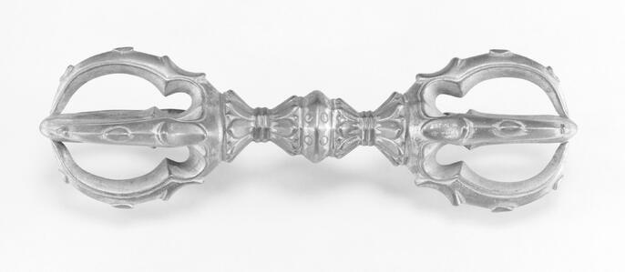

空海は、奈良時代の終わりに讃岐で生まれ、平安時代の初めに唐へ渡り、密教を学んで日本へ伝えた僧である。山で修行する一方、朝廷へ文書を提出し、寺院や教育の場もつくった。その生涯を時間の順に追うと、「修行する」「教えを伝える」「学ぶ場を整える」という仕事が、一人の中でつながっていたことが分かる。
弘法大師という名には、死後に育った信仰や物語も重なる。空海自身の文章は、本人が何を伝えようとしたかを示す。国家の記録からは、その時代の活動を調べられる。後世の絵巻からは、人々が空海をどう受け止めたかが見える。資料の違いを知ると、歴史上の空海の仕事と、今も「お大師さま」と呼ばれる理由の両方を読める。
四つの名前を整理する
佐伯真魚、空海、遍照金剛、弘法大師は同じ人物を指すが、名前の種類と使われる時期が異なる。
「佐伯真魚」は、出家前の俗名（僧になる前の名前）として知られ、一般に「さえきのまお」と読む。その手がかりが、大和文華館所蔵の、延暦24年（805）9月11日付の太政官符案である。朝廷の指示を記したこの文書には、留学僧空海の俗名に関する記載があり、「佐伯直真魚」の名を確認できる。「直」は「あたい」と読み、氏に添える古代の称号だ。現存品は平安時代末期に書き写されたと推定される。当時の戸籍原本ではなく、この一枚から幼少期の物語すべてが分かるわけではない。渋谷啓一「空海・弘法大師の幼少期について」
「空海」は僧としての名前である。使い始めた時期や経緯は、確実な日付までは定めにくい。室戸の洞窟から見えた空と海にちなむという話や、その前に無空・如空と名乗ったという伝記があり、改名の細部には伝承が含まれる。また、仏道へ進むことと、国の制度上で正式な僧になる手続きを取ることは、分けて考える必要がある。白石凌海「弘法大師空海への道・序説」、大柴清圓「弘法大師の生誕地に関する一考察」
「遍照金剛」は「へんじょうこんごう」と読む。805年、唐の師・恵果から密教を受け継いだ際の灌頂名（教えの伝授の儀礼で授けられる名前）である。これを受けた後も、僧名の「空海」は使われる。現在も、大師をたたえて唱える御宝号「南無大師遍照金剛」に、この名が残っている。金剛峯寺「弘法大師の誕生と歴史」
「弘法大師」は、空海の死後、延喜21年（921）に醍醐天皇から贈られた名である。諡号とは、亡くなった人の功績をたたえる贈り名をいう。出家前の真魚、僧としての空海、唐で伝授を受けた遍照金剛、生前の活躍と死後の信仰を経て仰がれる弘法大師。この順に、名前が表す立場を追うと分かりやすい。金剛峯寺「日本各地の大師信仰」
生涯の骨格となる年表
以下の月日は、当時使われた暦による。年齢は数え年で示す。生まれた年を一歳として数えるため、今の満年齢とは違う。「伝承」と記す出来事は、信仰の中で語り継がれた話である。
| 年 | 出来事 | 史料を読むときの要点 |
|---|---|---|
| 774年・宝亀5年 | 讃岐国多度郡に生まれる | 生年の通説。6月15日は宗門の降誕日で、生誕月日の確定とは分ける |
| 788年頃 | 15歳頃、叔父の阿刀大足について学ぶ | 後の大学での学びにつながる |
| 791年頃 | 18歳頃、大学で儒教の経典などを学ぶ | その後、山林修行へ向かう。転身の詳細には不明点がある |
| 797年・延暦16年 | 『聾瞽指帰』を著す | 儒教・道教・仏教を対話で論じる。『三教指帰』との関係は後述 |
| 804年・延暦23年 | 遣唐使とともに唐へ渡る | 同年末、長安に至る。最澄も同じ遣唐使の一行に参加 |
| 805年 | 長安の青龍寺で恵果から密教を学ぶ | 胎蔵・金剛界の灌頂と伝法の資格を受ける |
| 806年・大同元年 | 帰国し、『御請来目録』を提出する | 経典、図像、法具などを報告する |
| 809年 | 入京し、高雄山寺を活動の拠点とする | 朝廷や他の僧との関係を深める |
| 812年・弘仁3年 | 高雄山寺で灌頂を行う | 最澄らの名を含む『灌頂歴名』が伝わる |
| 816年・弘仁7年 | 嵯峨天皇から高野山開創の勅許を得る | 勅許の年と、伽藍完成の年は同じではない |
| 818〜819年 | 高野山に入り、伽藍建立を進める | 長期間に及ぶ建設の始まり |
| 821年・弘仁12年 | 満濃池の修復に関わる | 既存の池を修復した事業 |
| 823年・弘仁14年 | 嵯峨天皇から東寺を託される | 東寺自体の創建は空海への付託より前 |
| 828年・天長5年 | 綜芸種智院を設ける | 広く学びを開こうとする教育事業 |
| 835年・承和2年 | 高野山で死去。宗門では入定と呼ぶ | 3月21日、数え62歳とされる |
| 921年・延喜21年 | 弘法大師の号が贈られる | 空海の死後86年に当たる |
基本年次は金剛峯寺「弘法大師の誕生と歴史」と高野山の年表による。774年という生年と、その根拠となる記録は、渋谷啓一「空海・弘法大師の幼少期について」が検討している。一方、6月15日については、真言宗豊山派・慈眼寺の解説も伝承上の誕生日と明記しており、生年とは史料上の確かさを分けて考えたい。
一 佐伯真魚 — 生い立ちと、仏道を選ぶまで
儒教の学びから、山林の修行へ
空海が生まれた774年は、都がまだ平城京にあった時代である。その後、都は長岡京を経て、794年に平安京へ移る。空海の青年期は、この大きな変化と重なっていた。
空海は叔父の阿刀大足に学び、大学へ進んだとされる。この学びが、後の高度な漢文の力を考える手がかりになる。当時の大学は、国の仕事を担う官人を育てる機関だった。儒教の経典や歴史を学び、文章を読み書きすることが、政治や社会で働くための大切な力になった。現在の総合大学とは役割が異なる。
空海は大学での学びから、山での仏道修行へ向かった。『三教指帰』の序には、一人の僧から虚空蔵求聞持法を教わり、阿波の大瀧嶽や土佐の室戸崎で修行したという回想がある。求聞持法は、真言を繰り返し唱え、記憶や理解の力を求める密教の修行である。その師を勤操（奈良・大安寺の僧で、空海の修行の師として伝わる人物）とする伝承は有名だ。ただ、初期の記録にあるのは「一人の僧」という表現で、名前までは記されていない。渋谷啓一「空海・弘法大師の幼少期について」、名古屋市立大学公開研究・空海に求聞持法を授けた僧の検討
仏道へ進んだ後も、儒教を学んで得た言葉と論理の力は生きている。空海は、朝廷への願い、亡き師を悼む文章、宗教思想の説明を、高度な漢文で書いた。「出世を捨てた天才」とだけ見るより、それまでの学びを携えて新しい生き方を探したと読むと、青年期と後の著作がつながる。
『聾瞽指帰』と『三教指帰』 — 自分の進む道を文章にする
延暦16年（797）、数え24歳の空海の著作として伝わるのが『聾瞽指帰（ろうこしいき）』である。後の改訂形は『三教指帰（さんごうしいき）』として広く知られる。「三教」は儒教・道教・仏教の三つを指す。
この本には、儒教・道教・仏教を代表する人物が登場し、対話と論争で「人はどう生きるべきか」を考える。最終的には仏教へ導くが、その議論には儒教と道教の言葉や考えも使われる。若い空海が三つの教えをどう扱い、なぜ出家の道をよいと考えたかを、文章の組み立てとともに読める。東京国立博物館・『聾瞽指帰』の解説
国宝『聾瞽指帰』は金剛峯寺が所蔵し、高野山霊宝館は空海の真筆として紹介している。一方、研究では、後の『三教指帰』との改訂関係や、現存書跡の自筆性が議論されている。両書には、序文と結びの詩にも違いがある。797年の著作が、現在読む『三教指帰』の全文章と同じ形だったかは、こうした違いを調べる必要がある。高野山霊宝館「弘法大師空海の書と著作」、白石凌海「弘法大師空海への道・序説」
「母へのプレゼン」という言い方は、自分の進む道を周囲へ説明する文章として読むための、現代のたとえである。母親一人に出家の許可を求めた文書とは確認されていない。序の「一多親識」には、親族と知人、または数人の親しい知人という読みがあり、母宛ての形式もない。両書は序と結びの詩に加え、本文にも違いがある。独立記事では、この違いを押さえ、人物ごとの主張と、それへの反論を順に読む。大柴清圓・親識の検討、同・両書の本文比較
三教指帰の中身を、本文の順に読む →儒者の提案、道士の反駁、乞児の忠孝問答と仏教の結論を追う。
二 空海 — 海を渡り、密教の師を求める
804年、海を渡る — 唐の長安で学ぶということ
804年、空海は留学僧として遣唐使船に乗った。後に天台宗を開く最澄も、この遣唐使に参加した。二人は同じ目的地へ同じ学びに向かったのではなく、空海は中国に着いた後、長安で密教の師を探した。
本人の『御請来目録』によると、804年8月に福州へ着岸し、12月下旬に長安へ入った。翌年は西明寺に住み、長安の寺々で高僧を訪ねた。恵果の弟子になるまでには、中国での移動、住まいの確保、師を探すという段階があった。空海『御請来目録』・大正蔵55巻2161番、台湾大学公開本文
長安での密教の学びは、経典を読むことと、実践を身につけることが結びついていた。真言の発音、印（手や指で示す形）、観想（仏やその智慧を心に思い浮かべること）、儀礼の手順、曼荼羅の読み方を、師の指導で学ぶ。本の写しを得るだけでは、その指導すべては受けられない。空海が経典とともに仏の画像や法具（儀礼に使う道具）も持ち帰ったのは、この学び方と関わる。
三 遍照金剛 — 教えを受け継ぎ、日本へ開く
恵果との出会い — 有名な言葉を原典から読む
805年、空海は青龍寺東塔院の恵果阿闍梨を訪ねた。恵果の師は、不空（唐で活動し、密教の経典の翻訳でも知られる僧）だった。「阿闍梨（あじゃり）」は修行者を導く師をいう。この場面では、密教の教えと儀礼を伝える師という意味で使われている。
原文 · 空海『御請来目録』が記す恵果の言葉
我先知汝來。相待久矣。
読み下し 我、先に汝が来たることを知りぬ。相待つこと久し。
読み われ、さきになんじがきたることをしりぬ。あいまつことひさし。
意訳 私は、あなたが来ることを以前から知っていた。長い間、あなたを待っていた。
文脈に沿った解釈 恵果が空海を見て喜び、以前から来ると知って長く待っていた、と語る場面である。これを伝えるのは、空海が帰国後にまとめた報告だ。面会の録音や、その場にいた第三者の逐語記録ではない。出会いの言葉とともに、師から教えを受け継いだことを空海がどう伝えたかを読む文章でもある。
ひとことで 「あなたを待っていた」は、空海の記録に根拠のある言葉。師の心の中まで、現在の私たちが直接確認できるわけではない。
同じ記録では、六月に胎蔵、七月に金剛界の灌頂を受け、八月に伝法阿闍梨の位を授けられたと報告される。灌頂は、密教の教えを受けるための大切な儀礼である。伝法阿闍梨は、教えを受け継ぎ、次の人へ伝える師の立場をいう。寺で教えを聞くところから、その教えを伝える立場へ進んだのである。「遍照金剛」の名も、この伝授の中で授けられた。
恵果の教えを受けたのは、空海一人ではない。弟子には義明・義操らもおり、中国や周辺地域にも、教えを伝える系統があった。日本の真言宗は、空海を教えの継承者の八番目である「第八祖」として仰ぐ。同時に、恵果にはほかの弟子もいたと知ると、日本へ続く系統と、唐での伝授の広がりを分けて理解できる。高野山大学密教文化研究所紀要・恵果門下の研究
恵果は805年末に亡くなり、空海は師の碑文を書いた。正式名は「大唐神都青龍寺故三朝国師灌頂阿闍梨恵果和尚之碑」で、『性霊集』巻二に収められる。碑文は、師の生涯や徳をたたえる文章だ。そこには、幾度も生まれ変わって師弟となったという宿縁（前世からの縁）も語られる。出会いの言葉を報告する『御請来目録』と、亡き師をたたえる碑文では、書く目的が違う。種智院大学「恵果和尚を偲ぶ文章」、恵果碑文・漢文本文
現在の西安の青龍寺遺址でも、恵果と空海は記念されている。恵果空海記念堂は、発掘された建物跡を参考に、1983〜1984年に建て直した建築である。空海当時の建物跡と、現代の記念堂が、師弟の交流を伝える場所になっている。現在の記念堂そのものを、空海が見たわけではない。西安市文物局「西安青龍寺遺址」
帰国後の空海 — 教えを日本の社会へつなぐ
806年に帰国した空海は、『御請来目録』を朝廷へ提出した。入手した経典や品物を一覧にし、受けた教えと、日本へ何を伝えようとしているかを説明する文書である。
持ち帰ったのは、経典や注釈書、曼荼羅、教えを伝えた師たちの画像、儀礼の道具だった。教えを学ぶには、文字を読むこと、画像を見ること、体を動かすこと、唱えること、道具を使うことが結びつく。そのため空海には、宗教書を翻訳・紹介するだけでなく、日本で実際に修行し、人へ教える場をつくる仕事も必要だった。
809年、空海は都へ入り、高雄山寺を活動の拠点にした。812年の灌頂で教えを受けた人の名前を記す『灌頂歴名』には、最澄の名も残る。後に二人は天台宗と真言宗の開祖として知られるが、生前は書物や教えをやり取りしていた。高野山霊宝館・『灌頂歴名』解説
東寺の国宝『風信帖』は、空海が最澄へ送った三通の手紙をまとめたものである。品物へのお礼、会う予定、法会（仏教の儀式）の都合を調整する二人の姿が見える。友情や対立の一語に収まらない具体的な関係を、今に残る手紙から読める。東寺「寺宝」
嵯峨天皇と空海 — 信仰、政治、書が重なる
空海の日本での活動には、嵯峨天皇の支えがあった。高野山を開く許可と、東寺を託されたことは、いずれも嵯峨天皇の治世の出来事である。師から教えを受け継いでも、社会で伝えるには、土地、建物、寺院を支える制度が必要だった。
空海と嵯峨天皇は、書にも優れた人物として知られる。橘逸勢を加えた三人が「三筆」と呼ばれる。これは、官職や団体の名称ではなく、後世に定着した名人の呼び名である。東京国立博物館は、この三人を三筆と呼ぶようになったのは江戸時代からと説明している。東京国立博物館「三筆・三跡」
空海の書は、教えを朝廷へ報告し、支援を求め、師の功績を残し、弟子やほかの僧に連絡するための技術でもあった。美しい字と、文章による仕事が結びついている。宗教の活動、文学、書をそれぞれ別の才能として並べるより、何を伝え、何を実現するために使ったかを見ると、つながりが分かる。
江戸時代までは、空海が平仮名や「いろは歌」を作ったと広く信じられていた。しかし、いろは歌の成立は空海の没後の11世紀とされ、時代が重ならない。現在は空海作という話は俗説として扱われ、平仮名も一人が発明したものとは考えられていない。国立国語研究所「平仮名は誰が作ったのですか」
高野山と東寺 — 二つの拠点はどう違うか
816年、空海は瞑想などの修行をする道場として高野山を求め、朝廷の許可を得た。高野山の公式年表では、許可を得た後、初めて登ったのが818年、寺院の建物群である伽藍の建設に着手したのが819年とされる。「816年開創」は、この事業が始まった年を示し、現在の建物が全部完成した年ではない。金剛峯寺「年表」
高野山は、山上で密教の修行を深める道場だった。東寺は、都の社会へ教えをつなぐ拠点になる。東寺は796年、朝廷の寺としてすでに建てられていた。823年、嵯峨天皇から託された空海は、この寺を密教の道場へ発展させた。東寺の最初の建設と、空海に託された時期は、分けて押さえたい。東寺「金堂」、東寺「東寺の歴史」
東寺の講堂では、密教の仏たちを配置し、教えの世界を空間で示している。これが今日「立体曼荼羅」と呼ばれる構成である。書物や平面の曼荼羅とは違い、仏像の配置を目の前で見て、その関わりを知ることができる。像の美しさとともに、空海が教えを見えるものにするため、何を工夫したかに目を向けられる。東寺「立体曼荼羅」
山上の高野山で修行を深め、都の東寺で教えを伝える。空海はこの二つを同時に進めた。高野山と東寺を結んで見ると、山での修行と朝廷との関わりが、一人の活動の中でつながっていたことが分かる。
法具を見分ける — 五鈷杵と、飛行三鈷杵
空海像や密教の展示で見かける金剛杵は、儀礼に使う法具である。先端の形には違いがあり、独鈷杵、三鈷杵、五鈷杵などと呼び分ける。似た道具でも名称を確かめると、寺宝の説明と開創伝説を取り違えずに読める。
東寺の国宝「金銅密教法具」は、金剛盤・五鈷杵・五鈷鈴の一式である。金剛盤は道具を置く台、五鈷杵と五鈷鈴は杵と鈴の法具だ。唐時代の品で、東寺の説明では、今も後七日御修法という儀礼に使われる。美術品として保存されるだけでなく、儀礼でも役目を続けている。東寺「寺宝」
高野山の開創伝説で、空海が唐から投げたとされるのは三鈷杵である。密教を広めるのにふさわしい土地を示してほしいと願って投げると、日本へ飛び、高野山の松に掛かっていたという。その松を「三鈷の松」、法具を「飛行三鈷杵」と呼ぶ。宗門が伝える開創の物語であり、海を越えて飛んだという出来事の歴史的な実証とは区別して読む。金剛峯寺「高野山開創1200年」
高野山の三大秘宝は、『聾瞽指帰』、諸尊仏龕（多くの仏を彫った小型の容器）、飛行三鈷杵である。前二者は国宝、飛行三鈷杵は重要文化財に指定されている。三大秘宝は宗教上の大切な宝物という位置づけで、国宝・重要文化財は文化財制度の指定区分を示す。高野山霊宝館「お大師さまから・お大師さまへ」

横から三本に見えるのに、なぜ「五鈷」？
鈷は、とがった先端のこと。五鈷杵の片端には、中央の一本と、その周りを囲む四本がある。写真は横から見た姿なので、手前と奥の鈷が重なり、五本を全部数えにくい。反対側にも同じ構成がある。「両端を合わせて五本」ではない。文化遺産オンライン・金銅五鈷杵
一 ＋ 四 ＝ 五片端の鈷の配置を示す概念図。横から眺めた写真と見比べると、「五」が立体の数であることが分かる。実物の断面図ではなく、配置を示した図。
なぜ、仏の手に武器のようなものがある？
金剛杵の原形は古代インドの武器である。密教では、その形が、迷いや煩悩（欲や怒りなど、心を乱す働き）を断つ智慧の象徴になった。五鈷は、五仏の智慧である五智を表すと説明される。仏像の持物（手にする道具や象徴）を見ると、その仏がどんな働きを担うかを読み取れる。文化遺産オンライン・金銅五鈷杵、高野山やすらか庵「法具」
儀礼では、どう使うのか
僧侶が手に持つ場合、一般に右手に金剛杵、左手に金剛鈴を持つ。杵が智慧を象徴し、鈴の音には仏を供養する意味がある。壇の上では金剛盤という台に鈴と杵を配置する。三井寺の説明では、中央に鈴、手前に五鈷杵、左に独鈷杵、右に三鈷杵を置く例が示される。文化遺産オンライン・五鈷鈴および五鈷杵、三井寺「梵音具（五）」
持ち替え方、印（手や指で示す形）、真言は、儀礼の種類や伝授によって異なる。藤田美術館の学芸解説も、儀式の細部は寺外へ公開されないと説明している。今回の見学では、何を持ち、どちらの手にあり、どの仏の前に置かれるのかをまず観察すると、儀礼の中での役割を考えやすくなる。藤田美術館「ずらり並べて何をする？」
満濃池と綜芸種智院 — 教えを生活につなげる
空海の活動には、寺院の外へ広がるものもある。821年の満濃池の修復はその一つだ。満濃池は空海が初めて造った池ではなく、以前からあった農業用ため池が決壊し、その再建に空海が関わった。現在の巨大な池も、その後の再建や拡張の歴史を経た姿である。農林水産省「満濃池樋門」
満濃池の修復からは、空海が僧としての名声を持ち、社会の事業にも関わったことが分かる。工法の発明や、全工程の設計を一人で行ったとまでは言えない。修復には、地域の人々の労働、役人の手続き、資材、技術が必要だ。それらを整え、多くの人が動く事業として考えると、その仕事の大きさが伝わる。
828年の綜芸種智院（しゅげいしゅちいん）は、学ぶ機会を社会へ広げる試みだった。「綜芸」は多様な学問や技芸、「種智」は仏教の智慧に関わる言葉である。僧だけでなく、僧でない人も学ぶ教育の理想が込められている。種智院大学は、庶民に開かれた私立学校の先駆けと位置づけている。種智院大学「学校法人 綜藝種智院」
綜芸種智院は、当時の社会で学ぶ機会を広げるために開かれた。今の義務教育や学校制度とは条件が違う。現在の種智院大学はその精神を受け継ぐが、今日の学校組織は近代以降の発展を経て成立したものである。
四 弘法大師 — 没後の贈り名と、続いていく信仰
835年から921年へ — 空海の死と弘法大師信仰
承和2年（835）3月21日、空海は高野山で生涯を終えた。歴史では死去・没と記し、真言宗では「入定（にゅうじょう）」と呼ぶ。さらに高野山には、今も大師が奥之院で心を深く集中させる禅定にあり、人々を救い続けているという入定信仰がある。死去の年月を記す歴史と、今も続く大師との関係を語る信仰には、それぞれの役割がある。
921年、弘法大師の号が贈られた際、東寺の長である観賢が高野山へ登り、御廟（大師を祀る場所）を開いて、変わらぬ姿の大師に会ったという物語が伝わる。金剛峯寺も、この話を伝説として紹介し、大師信仰の広がりと結びつけている。死去の年を知る史料と、人々が今も大師を身近に仰ぐ理由を伝える物語。その両方が、空海を理解する手がかりになる。金剛峯寺「日本各地の大師信仰」
東寺では、大師の住まいがあった場所に建つ御影堂で、毎朝、食事を供える生身供（しょうじんく）が行われる。大師を過去の偉人として記念するだけでなく、今もおられる方として接する信仰が、食事を供える日々の行為になっている。東寺「法要のご案内」
現代の継承 — 座主、管長、長者、阿闍梨
今日の真言宗には、複数の宗派と、その中心になる本山がある。寺院や宗派を率いる人と、師から教えを受け継いで伝える人は、役割が異なる。「空海の後継者」を一人に絞るより、主要な肩書きを、次のように分けて考えると分かりやすい。
| 呼称 | この文脈での意味 |
|---|---|
| 金剛峯寺座主 | 総本山金剛峯寺の寺院としての長 |
| 高野山真言宗管長 | 高野山真言宗という宗派の長。金剛峯寺座主が兼ねる |
| 東寺長者 | 教王護国寺、すなわち東寺の長 |
| 東寺真言宗管長 | 東寺真言宗という宗派の長。現在は東寺長者が兼ねる |
| 阿闍梨・伝燈大阿闍梨 | 教えや修法の伝授・修学に関わる名称。寺院運営の長と同義ではない |
2026年10月2日の確認では、金剛峯寺第415世座主・高野山真言宗管長は長谷部真道、東寺第258世長者・東寺真言宗第4代管長は橋本尚信である。高野山については、三宝院住職の飛鷹全隆が同年11月15日から第416世座主に就く予定と報じられている。現職者は変わりうるため、この確認日と就任予定日を分けて読む必要がある。金剛峯寺「歴代座主一覧」、2026年7月の金剛峯寺公式声明、東寺真言宗・公式役員案内、埼玉新聞「金剛峯寺次期座主に飛鷹氏」2026年7月18日
伝燈大阿闍梨は、一人だけが就く固定の役職ではない。東寺真言宗の公式名簿には、複数の人物が同時に「傳燈大阿闍梨位」と記載される。高野山の僧の経歴にも、学修灌頂という儀礼に入り、その位を受けたことが記される。組織を率いること、教えを学ぶこと、法を伝えることには、それぞれの制度と役割がある。東寺真言宗・公式名簿、静慈圓・公式略歴
空海の後の高野山へ — 木食応其という人物
空海の後も、高野山には、火災、衰退、復興、政治権力との交渉が続いた。その長い歴史で大きな役割を担った一人が、木食応其（もくじきおうご、1536〜1608）である。
応其は、安土桃山時代から江戸時代初めの僧で、空海から約八百年後に生きた。1585年、豊臣秀吉の紀州攻めで交渉し、高野山を守ったことで知られる。空海の直接の弟子ではなく、空海が開いた宗教の場を、後の時代の政治や社会の条件の中で支えた人である。慶應義塾「木食応其筆書状」、和歌山県立博物館・木食応其の解説
秀吉は「木食あっての高野山」とまで言った
翌1586年、応其は大坂城で秀吉に会った。自身の覚書によると、秀吉は「高野の木食」ではなく「木食が高野」と考えよ、と山内の僧たちへ伝えるよう命じた。山に属する一人の僧としてより、応其が支える高野山なのだと重んじた言葉である。応其は帰山後も感激の涙を抑えられず、書き留めたという。交渉で危機を救った僧が、秀吉の信頼を受け、山の再興を担う中心となった場面が見える。和多昭夫「木食応其考（承）」86頁
秀吉の信頼は、その後の仕事にも表れた。応其は金堂を再建し、東寺の修復に携わり、方広寺大仏殿の供養のため、京都・南都・天王寺の楽人（演奏する人）を集めた。祈ることに加え、交渉し、資金と人を整え、大きな儀礼を実現した僧だった。和歌山県教育委員会「木食応其と高野山」、慶應義塾・応其自筆書状
続きは高野山篇の「木食応其と秀吉」へ。 覚書の原文と意訳、自筆の手紙から、その仕事をもう一段深く読む。
空海が場を開き、後の人々が守り、形を変えながら教えを受け継いだ。高野山や東寺は、その代々の仕事によって今日まで続いている。一人の偉人の生涯から、その後に場を支えた人々へ目を広げると、今ある寺院の姿を読み取れる。
もう一段、本文の奥へ
気になった言葉を開く。原文の表現から意味をたどり、身近な場面へ戻して考える。
01聾瞽指帰と三教指帰親にも説明できる、自分の進む道の論証をどう読むか
原本の表現
雖淺深有隔並皆聖説。
読み 浅深の隔て有りといえども、並びに皆聖説なり。（あさきふかきのへだてありといえども、ならびにみなしょうせつなり。）
空海『三教指帰』 · 『三教指帰』序、加藤精神訳註・岩波書店1948年版の原文 p.123（PDF p.63）
無常暴風不論神仙。
読み 無常の暴風は、神仙を論ぜず。（むじょうのぼうふうは、しんせんをろんぜず。）
空海『三教指帰』 · 仮名乞児論・無常の賦、同版原文 p.137（PDF p.70）
文脈に沿って読む
儒者は学びと礼を通じて社会で働く道を説き、道士は老いと死を指摘して長寿の術へ導く。仏教を説く仮名乞児は、仙人であっても無常を免れないと反駁し、貪りや怒りなどが生む苦しみの海を、六度などの実践で渡る道を示す。仏教への帰依と出家を勧める結論をもつ論争の書である。
乞児が忠孝について問われる場面は、三教の会談へ入る前の、名前を明かさない「ある人」との問答。親の恩を認めながら、扶養に加えて親を含む広い救済も孝になる、と論じる。母親だけを宛先とする文書や、出家の許可が下りた記録とまでは確認できない。
797年の『聾瞽指帰』から後に『三教指帰』へ改められた、とする説明が広く用いられる。序と結びの詩だけでなく本文にも語句や対句の違いがある。改訂の年・主体には専門的な議論があり、単なる題名変更として扱わない。
中学生にもわかる説明
『三教指帰』は、儒教・道教・仏教の三人の語り手が、「どう生きるべきか」を論じる作品です。儒者は、学びと礼によって自分を整え、親や社会に役立つ道を勧めます。道士は、それでも人は老い、病気になり、死ぬと指摘し、長寿の修練を説きます。
仏教を説く仮名乞児は、仙人にも死があると反論します。そして、長く生きるだけでなく、貪りや怒りが生む苦しみを離れるにはどうすればよいか、と問いを進めます。そこで示すのが、布施（分け与えること）などの六度（悟りへ進む六つの実践）です。三つの教えを並べるだけでなく、前の答えの弱点を次の語り手が問い直す作りになっています。
家族への恩と出家の選択も、この作品の大切な問いです。乞児は、親を養うことを認めながら、親を含む広い救済も孝になると論じます。「自分の道を周囲へ説明する文章」として読むと身近ですが、架空の問答なので、母親一人に向けた実際のプレゼンとは決められません。797年の『聾瞽指帰』と後の『三教指帰』には、題名だけでなく本文にも違いがあります。
生活で確かめる
独立記事『三教指帰を読む』で、登場人物ごとの主張、次の人の反駁、乞児が示す実践を順にたどる。自分が今困っていることは、三つのうちどの深さの問いに近いかを考える。
持ち帰る問い 自分が選ぶ道は、何を解決し、誰の苦しみに応えようとしているか。
大柴清圓・両書の本文と成立の検討 ／ 大柴清圓・忠孝問答と親識の検討
この項目の問い合わせ文
空海『聾瞽指帰』・『三教指帰』に書かれた中身、儒教・道教・仏教の登場人物の議論、仮名乞児による比較と結論について中学生にもわかるように説明して。 原本の表現とその解説、さらにそれを中学生レベルにまで落とし込んだ解説 という構成で回答してください。 文字数は必要最大限で、本質を捉えながら遊び心を持たせながら文章に記すこと。 目的は『一生使える知識としてまとめること』です。
Proの解説を読む
『聾瞽指帰』『三教指帰』
— 「どう生きるか」をめぐる、三つの教えの討論劇
この二作をひとことでいうなら、「世間に認められる人生と、仏道を歩む人生。自分はなぜ後者を選ぶのか」を、登場人物たちの議論によって説明した作品です。
ただし、結論は「儒教も道教も仏教も、結局は同じ」ではありません。三教それぞれの働きを認めながら、仏教こそ最も深く、広く救う教えであると結論づけます。まずこの着地点を押さえると、長い議論の中で迷子になりません。NCC Japan
以下、原文は必要箇所を抜粋し、一部の旧字体を現行字体に改め、句読点を補っています。「中学生向け」の会話やたとえは、原文そのものではなく説明のための言い換えです。
1．まず、二つの本はどういう関係なのか
『聾瞽指帰』は「ろうこしいき」、『三教指帰』は「さんごうしいき」と読みます。
『聾瞽指帰』は、797年、空海が数え年24歳のときに著した作品で、金剛峯寺に自筆本が伝わります。一般に、それを書き改めたものが『三教指帰』と理解されます。議論の大筋は共通しますが、序文と、最後の「十韻の詩」が大きく異なります。タイトルだけを交換した本ではありません。NCC Japan
『三教指帰』の改訂を唐からの帰国後とする研究もあります。したがって、現在読む『三教指帰』のすべての表現を、そのまま「24歳の空海の言葉」とひとまとめにするのは慎重であるべきです。改訂時期は研究上の論点です。NCC Japan
原文 — 作品の狙い
「屈仮名児、示出世趣。」
――『聾瞽指帰』序琴詩書画巣
解説
「仮名児を登場させ、出世の趣旨を示す」という意味です。
ここでの「出世」は、昇進して偉くなることではありません。世俗の迷いの世界を超えることです。作品は、儒教・道教を語る人物に続いて仮名乞児を登場させ、仏教による「出世」の道を示す、と予告しているわけです。
『聾瞽指帰』の「聾瞽」は、聞こえないこと・見えないことを、道理に気づかない状態に重ねた古い比喩です。「指帰」は、向かうべき本筋や帰着点を指し示すこと。『三教指帰』という題名では、三つの教えを比較してその帰着点を示す、という構成が前面に出ます。
中学生にもわかるようにいうと
現代の「出世」は、階段を上って高い地位に行くこと。
この作品の「出世」は、
「その階段を上り続けることだけが、本当に人生の目的なの？」
と問い直すことです。
同じ「出世」でも、偉くなる話と、偉さに縛られなくなる話では、向きが違う。
ここに気づくだけでも、この本の面白さが見えてきます。
2．登場人物は五人 — 「困った若者をどう立て直すか」から始まる
『三教指帰』は、上巻「亀毛先生論」、中巻「虚亡隠士論」、下巻「仮名乞児論」という三段構えです。中心となる登場人物は、次の五人です。NCC Japan
| 登場人物 | 役割 | 物語の中での立場 |
|---|---|---|
| 兎角公（とかくこう） | 家の主人 | 甥の素行を改めさせたい。 |
| 蛭牙公子（しつがこうし） | 兎角公の甥 | 賭博や酒色にふけり、学問や家族への配慮を怠る若者。 |
| 亀毛先生（きもうせんせい） | 儒教の代表 | 学問と道徳によって人格を磨き、社会で役割を果たせと説く。 |
| 虚亡隠士（きょぶいんじ） | 道教の代表 | 世間の地位より、養生・長寿・神仙の境地を求めよと説く。 |
| 仮名乞児（かめいこつじ） | 仏教の代表 | 生死の苦しみを超え、自分と他者を救う道を説く。 |
亀毛先生が説くと、蛭牙公子は納得する。
虚亡隠士が説くと、今度はみんなが道教に感心する。
そこへ仮名乞児が現れ、議論の前提そのものを問い直す――という流れです。エンサイクロメディア空海
なお、孔子・老子・釈迦が実際に集まって討論した話ではありません。空海が、それぞれの教えを語る架空の人物を立てた文学作品です。仮名乞児には空海自身の姿が重ねられていますが、作品の描写をすべてそのまま実録とみなすことはできません。上智大学部門サイト
「亀の毛」「兎の角」という名前からして、すでに少しおかしい。まじめな思想書でありながら、人物の造形には風刺や遊びがあります。
3．亀毛先生の儒教 — 「まず、人として立派になれ」
原文
「席仁而坐、枕義而臥。被礼以寝、衣信以行。」
――『三教指帰』巻上「亀毛先生論」udn部落格
解説
言葉をほどくと、
仁を敷物として座り、義を枕として横たわる。
礼を掛け物として眠り、信を衣服として行動する。
という意味です。
もちろん、道徳でできた布団を注文しろ、という話ではありません。
「仁」は人への思いやり、「義」は筋道にかなった正しさ、「礼」は人間関係を整えるふるまい、「信」は誠実さです。それらを、たまに思い出す標語ではなく、毎日の生活に身についたものにしなさいと説いています。
亀毛先生は、蛭牙公子の能力を最初から見捨ててはいません。学問や訓練によって、今の悪い習慣を改め、才能をよい方向に伸ばせると考えます。古典、文章、政治、さまざまな実用の知識を学び、親に孝を尽くし、社会で責任を果たす。その結果、名声や地位を得て、家族や子孫にも栄誉が及ぶ、という筋道です。エンサイクロメディア空海
したがって、亀毛先生の話を「お金持ちになりたければ勉強しろ」だけに縮めると、大切な部分を落とします。
人格を磨くことと、社会の中で役に立つことが、つながっている。
これが、この場面での儒教の強みです。
中学生にもわかるようにいうと
亀毛先生は、こんな先生です。
「頭がいいだけでは足りない。約束を守れ。人を思いやれ。
そのうえで勉強して、できることを増やしなさい。
自分の才能を、家族や社会のために使える人になろう。」
教室に「誠実」と書いた紙を貼っても、毎日うそをついていれば意味がありません。
だから空海は、道徳を「壁の標語」ではなく、敷物・枕・布団・服にたとえたのです。生活全部に染み込ませろ、と。
4．虚亡隠士の道教 — 「偉くなっても、命が尽きたらどうする？」
原文
「不死之神術」「長生之奇密」
――『三教指帰』巻中「虚亡隠士論」udn部落格
さらに、世間の地位の不安定さをこう述べます。
「今為卿相、明為臣僕。」
「始如鼠上之猫、終為鷹下之雀。」
――同「虚亡隠士論」udn部落格
解説
初めの言葉は、「死なないための神秘の術」「長く生きるための驚くべき秘密」です。
続く言葉は、
今は大臣でも、明日には人に使われる身になる。
初めは鼠を狙う猫のようでも、最後には鷹に狙われる雀になる。
という意味です。
勝つ側でいられる保証はない。地位も権力も、永続する安心にはならない。
虚亡隠士は、亀毛先生が魅力的に語った社会的成功に、こう揺さぶりをかけます。そして、欲望を抑え、身心を養い、長寿や神仙の境地を目指す道を提示します。本文には、食事や呼吸、薬物などに関わる養生・神仙の術が並びます。これは、単に「自然体で気楽に暮らそう」という話ではありません。udn部落格
ここで重要なのは、この作品に登場する道教は、特に神仙思想や長生の術を強く打ち出しているということです。道教全体を、この人物一人の主張だけで説明し切ることはできません。
また、虚亡隠士は仁慈や孝なども求めています。儒教は道徳的、道教は自分の寿命しか考えない、という単純な対立ではありません。エンサイクロメディア空海
中学生にもわかるようにいうと
亀毛先生が、
「立派な人になり、社会で活躍しよう！」
と言うのに対し、虚亡隠士は、
「でも、昨日まで人気者だった人が、今日は仲間外れになることもある。
社会で勝ち続けようとするより、自分の命と生き方を保つほうが大事では？」
と返します。
ランキングの上位に入ることより、ランキングに振り回されない長い人生を求める。
ただし、その延長として本文が語る仙術や不死は、当時の宗教的な主張です。そのまま現代の健康法として受け取る話ではありません。
5．仮名乞児の最初の難問 — 「出家するのは親不孝ではないか？」
仮名乞児は、最初から堂々と三教の優劣だけを論じるわけではありません。まず、出家した自分の生き方を批判されます。
ここは重要な順序です。次の問いを投げかけるのは、巻下冒頭に出てくる名前の示されない人物であり、この場面をそのまま亀毛先生との直接対決としてしまうと、物語の構成を取り違えます。udn部落格
原文 — 批判と返答
「今子有親有君、何為不養不仕。」
――「今、あなたには親も君主もいる。なぜ親を養わず、仕官もしないのか。」
これに対する仮名乞児の返答の核心が、
「僕聞小孝用力、大孝不匱。」
――『三教指帰』巻下「仮名乞児論」udn部落格
です。
解説
「私は、小さな孝は力を用いて尽くし、大きな孝は尽きることがない、と聞いている」という意味です。
仮名乞児は、親を養うこと自体を否定していません。むしろ本文では、父母の恩を忘れられないこと、年老いた親を十分に支えられない苦しさを、切々と語っています。
そのうえで、問いを広げます。
「親の生活を支えることだけが孝なのか。親を、生死の根本的な苦しみから救おうとすることも、孝ではないか。」
ここでいう「大孝」は、単に「家族を離れて社会貢献する」という現代的な意味ではありません。仏道を修め、その功徳を父母や人々に振り向け、仏教的な意味で救うことです。仏教の立場から、孝の範囲と深さを捉え直しています。Airiti Library 華藝線上圖書館
実際、本文には、
「毎為国家先廻冥福、二親一切悉譲陰功」
とあり、国家のために福を廻らし、父母と一切のものに功徳を譲る、と述べています。出家を、国家や家族と無関係になることとして説明しているのではありません。udn部落格
中学生にもわかるようにいうと
仮名乞児の言い分は、
「親なんてどうでもいい。自分の好きに生きる！」
ではありません。
むしろ、
「親を大切にしたい。その気持ちは同じだ。
でも、そのための道は、役人になってお金を持ち帰る一本だけなのか。
もっと深い苦しみから親を救う道を選ぶことも、恩返しではないのか。」
という問いです。
親への愛情を捨てるのではなく、親孝行の“方法”と“到達点”を問い直す。
ただし、これは作品中の出家の弁明です。現代の私たちが、目の前の家族への責任を何でも放棄してよい、という結論にはなりません。
6．仮名乞児の比較 — 「成功」も「長寿」も、最後の解決にはならない
仮名乞児の議論が強いのは、ほかの二人より上手な成功法や長寿法を出すからではありません。
何を解決できれば、本当に救われたといえるのか。比較の基準を、そこへ移すからです。
原文① — 一生だけでは終わらない
「三界無家、六趣不定。」
――『三教指帰』巻下「仮名乞児論」udn部落格
解説
「三界に固定した家はなく、六つの生まれ方のどこに生まれるかも定まらない」という意味です。
三界は、仏教でいう迷いの世界の全体。六趣は、生きものがその行いに応じて生まれ変わる諸領域です。
仮名乞児は、今の出生地を知らないと言っているのではありません。輪廻を前提にすると、今の国・身分・家族関係だけが、自分の永遠の姿ではないと述べています。本文は、人が互いに妻子や父母であった可能性まで語り、今の自分の家族だけに閉じない関係を示します。udn部落格
つまり、仮名乞児が問題にする範囲は、「今回の人生でうまくいくこと」より大きいのです。
原文② — 長寿の仙人にも無常は及ぶ
「無常暴風、不論神仙。」
「不能以財贖、不得以勢留。」
――『三教指帰』巻下、無常を説く部分udn部落格
解説
無常という暴風は、神仙であっても区別しない。
財産で買い戻すことも、権力で引き留めることもできない。
という意味です。
これが、二つの教えに対する仮名乞児の根本的な批判です。
社会的地位を得ても、それは変わります。
寿命を延ばしても、その長さだけでは迷いや苦しみの根を断てません。
本文は、身体の衰えや死、世界の崩壊、行いに応じた苦しい報いまで、かなり激しい表現で描きます。「いま頼り切っているものが、いつまでも自分を守ってくれるとは限らない」と読者を揺さぶるためです。エンサイクロメディア空海
ただし、ここでの結論は「どうせ死ぬのだから何もかも無意味」ではありません。輪廻を前提にする本文では、死そのものも、苦しみからの解放とは限らない。だからこそ、生きている間に迷いの原因に向き合い、道を修めようと話が進みます。
中学生にもわかるようにいうと
三人の関心を、現代的なたとえで並べるとこうなります。
亀毛先生：「よい選手になって、立派に試合をしよう。」
虚亡隠士：「勝ったり負けたりに疲れるより、長く元気に生きよう。」
仮名乞児：「では、負ける恐怖や、失う恐怖に振り回される心は、どうする？」
仮名乞児は、成功や長寿に一切価値がないと言いたいのではありません。
「それを手に入れること」と「根本的に苦しみから自由になること」は、同じなのか。
そこを区別しているのです。
7．仏教は「怖い話」で終わらない — 苦しみの海を渡る方法
無常や苦しみを説いただけなら、ただ相手を絶望させる話になってしまいます。
仮名乞児は、その先に進みます。苦しみを「海」にたとえ、それを渡るための船を示すのです。
原文 — 修行という船
「六度之筏、解纜漂河。八正之舸、艤棹愛波。」
「樹精進橦、挙静慮颿。」
――『三教指帰』巻下「生死海」の賦udn部落格
解説
六度を筏とし、八正道を舟とする。精進を帆柱として立て、静慮を帆として掲げる――という航海の比喩です。
ここでの海には、貪欲、怒り、嫉妬、自分を持ち上げて他人をけなす心などが、恐ろしい生きもののように描かれています。それらにのみ込まれず、迷いの世界を渡っていくために、実践が必要だと説きます。udn部落格
「六度」は、六波羅蜜ともいう六つの実践です。
布施は分け与えること、持戒は行いを慎むこと。
忍辱は怒りにのみ込まれず耐え忍ぶこと、精進はよい努力を続けること。
禅定は心を落ち着け集中すること、智慧はものごとのあり方を正しく見極めることです。
八正道も、見方・考え方・言葉・行動・生活などを正していく実践の道です。本文はこうした教えを、筏、舟、帆柱、帆、鎧、剣などに見立てています。udn部落格
ここで戦うべき相手は、単に意見の違う人ではありません。自分たちを苦しみへ引きずる、無知や欲望や怒りです。
中学生にもわかるようにいうと
仮名乞児は、
「人生は荒海です。危ないですね。では、さようなら。」
とは言いません。
「荒海だからこそ、船を造ろう。
人を思いやり、行動を整え、心を鍛え、よく見極める。
それが船の材料だ。」
と言うのです。
「執着をなくせ」と言われても、気合だけでは難しい。だから、具体的な行動の積み重ねによって、渡れる自分を育てるわけです。
さらに大切なこと — 自分だけ渡れば終わりではない
『聾瞽指帰』の結びの詩には、次の表現があります。
「誘他専為業、励己兼作功。」
――『聾瞽指帰』巻末、十韻の詩琴詩書画巣編集注――引用の確認範囲 上の二句は、琴詩書画巣に掲載された『聾瞽指帰』の翻刻によります。今回の査読では原本の字形を直接再照合していません。同じ自他救済の論旨は、下の『三教指帰』の「自他兼利済、誰忘獣与禽」にも確認できます。
他者を導くことを主要な務めとし、自分を励まして修めることも併せて行う、という意味です。
『三教指帰』の本文でも、悟りの境地を描いた後、なお救いの誓願が満たされず、苦しむものが残っているため、仏がさまざまな姿で救済に働くことが語られます。悟りは「自分だけ安全な場所に引きこもること」ではありません。NDL『三教指帰』原文139頁
船のたとえを続けるなら、
「自分が岸に着いたら、まだ海にいる人を忘れない。」
ここまで含めて、仮名乞児のいう仏教の理想です。
8．『三教指帰』の結論 — 三教を認める。それでも仏教を選ぶ
仮名乞児の教えを聞いた登場人物たちは、仏教の優越を認めます。最後に仮名乞児は「十韻の詩」を詠み、三教の比較と自分の選択をまとめます。エンサイクロメディア空海
ここは三つに分けて読むと、結論がはっきりします。
① 三つの教えには、それぞれ人を導く働きがある
原文
「三教褰痴心」
「性欲有多種、医王異薬鍼」
――『三教指帰』巻末、十韻の詩udn部落格
解説
三つの教えは、愚かさや迷いを取り除く働きを持つ。人の性質や求めるものはさまざまだから、すぐれた医師は薬や鍼を使い分ける、という趣旨です。
ここでの「性欲」は、現代語の性的欲求に限定されません。人の性質や志向、欲求の違いを指しています。
つまり、空海は最後に「儒教も道教も、何の役にも立たない」と切り捨ててはいません。
ただし、役に立つことを認めることと、究極的な価値を同じとすることは別です。
中学生にもわかるようにいうと
勉強の仕方も、人とのつき合い方も、一つの言い方で全員に伝わるとは限りません。
「まず生活を整えよう」が必要な人もいる。
「地位や欲望に振り回されるな」が響く人もいる。
教えは、人を導くための薬に似ています。だから、薬が違うこと自体はおかしくありません。
しかし、仮名乞児はさらに、「どこまで深い苦しみに届く薬なのか」を比べています。
② 最も深いのは、自分も他者も救う仏教である
原文
「金仙一乗法、義益最幽深。」
「自他兼利済、誰忘獣与禽。」
――同、十韻の詩udn部落格
解説
仏の一乗の教えは、その意味も利益も最も深い。
自分と他者の両方を救い、獣や鳥をどうして忘れるだろうか。
という意味です。
「金仙」は、ここでは仏のことです。 道教の仙人を褒めているのではありません。
「一乗」は、成仏へ導く一つの教えを、乗りものにたとえた表現です。そして、「自他兼利済」が結論の要です。
自分だけではない。
親しい人だけでもない。
人間だけにさえ限定しない。
迷いの根本を超えるという深さと、生きものを広く救うという範囲。その両方において、仏教が最もすぐれると判断しているのです。
本文には、儒教や道教を、仏が人々を導くために先に示した教えとして位置づける場面もあります。これは仏教側の宗教的な説明であり、儒教や道教が歴史的に仏教から生まれたことを証明する記述ではありません。udn部落格
中学生にもわかるようにいうと
仮名乞児が最後に選ぶのは、
「自分が勝つためだけの教え」でも、
「自分が長生きするためだけの教え」でもなく、
「自分も変わり、ほかの命も救っていく教え」
です。
ただし、これは「儒教には他人への思いやりがない」という意味ではありません。
この作品が設定する“救いの深さと広さ”という基準では、仏教が最も遠くまで届く、という比較です。
③ 理解した以上、自分の生き方として選び取る
原文
「已知三界縛、何不去纓簪。」
――同、十韻の詩の結びudn部落格
解説
すでに三界の束縛を知った。
それなのに、どうして纓や簪を捨てないのか。
「纓」は冠のひも、「簪」は冠を留めるものです。ここでは、官位や世俗の身分を象徴する装いとして読まれます。
つまり、最後は単なる「仏教はすばらしい」という感想ではなく、その理解に従って、出家の道を選ぶ決意で終わるのです。SAMAYAプロジェクト21
中学生にもわかるようにいうと
「何が大切か、頭ではわかった。
でも、世間に褒められるほうを選び続けます。」
ではなく、
「大切だとわかったことに、自分の人生を合わせよう。」
という結びです。
もっとも、「だから読者も全員、学校や仕事をやめなさい」という話ではありません。まずは、作品中の出家の選択として読むべきです。
9．一生使える知識として、何を持ち帰るか
まず、三教の位置関係は、この作品の中での整理として、次のように覚えると見失いません。宗教全体をこの表だけで定義するものではありません。
| 教え | 主に示される道 | 仮名乞児から見た評価 |
|---|---|---|
| 儒教 | 人格を磨き、家族や社会の中で役割を果たす。 | 大切な働きはあるが、生死の根本問題への答えとしては十分ではない。 |
| 道教 | 欲望や世俗の競争から離れ、養生・長生を目指す。 | 地位への執着を相対化するが、寿命の長さだけでは無常を超えられない。 |
| 仏教 | 迷いを超える智慧と実践によって、自他を救う。 | 救いの深さと範囲において、最もすぐれる。 |
この比較は、仮名乞児の議論と巻末の詩に即した整理です。NCC Japan
ただし、「誰が採点基準を決めたか」も忘れない
この作品は、中立の司会者が三教の公式代表を集めた討論記録ではありません。
仏道を選ぶ側が、仏教の世界観を土台に組み立てた、説得の文学です。輪廻からの解放を最終目標に置けば、それを説く仏教が高く評価されます。実際、仏教と儒教の孝を比較する研究でも、その優劣判断が仏教側の世界観に基づくことが指摘されています。Airiti Library 華藝線上圖書館
だから、読むときには二つを両立させると、知識が強くなります。
空海が何を大切にして仏教を選んだのかを理解すること。
その比較が、どんな前提と物差しで成り立っているかを見抜くこと。
また、この本は「若者が家族に反抗した話」だけにも収まりません。国家や一族への忠孝を、仏道によってどう果たすのかを問う作品として読む研究もあります。個人の進路と、家族・国家への責任がぶつかっているところに、作品の切実さがあります。note（ノート）
最後に、覚えるならこの形
この作品を、覚えやすく言い換えるなら、
儒は、世の中での生き方を整える。
道は、世間に振り回されず、生を保とうとする。
仏は、迷いの根を問い、自分も他者も救おうとする。
そして、仮名乞児の結論は、
「親孝行も、社会での役割も、命も大切だ。
しかし、それらを大切にすることと、それらに縛られ続けることは同じではない。
私は、より深く、より広く救う道として、仏教を選ぶ。」
というものです。
『聾瞽指帰』『三教指帰』が投げかける問いを、現代の私たちの言葉にするなら、こうでしょう。
「何を手に入れるか」だけではなく、「何に縛られ、誰を幸せの範囲に入れて生きるか」。
困った若者へのお説教から始まった物語は、最後には、人生の成功とはそもそも何なのかという問いにまで広がっているのです。
編集解説 — 「母へのプレゼン」と呼ぶなら、どこまで言えるか
現代の言葉で「母にも説明できる進路のプレゼン」と考えると、作品の切実さに近づけます。ただし、母親だけへ入信や出家の許可を求めた文書、とまでは確認できません。『三教指帰』の序に反対者として出るのは「一多親識」で、親族と知人とする伝統的な読みと、数人の親しい知人とする読みがあります。母宛ての形式も、実際に母へ読み聞かせて許可を得た記録もなく、物語中の「或」も母と特定されていません。大柴清圓2023年論文・第5.3〜5.4節
仮名乞児と「或」の忠孝問答は、兎角公の家へ入る前の回想です。母との実際の面談を再現した場面、と読み替えず、親や社会への責任と自分の道をどう両立させるかという論証として読みましょう。母への説得という比喩は、作品を読むための入口として保てます。
編集解説 — 序・本文・結詩は、どう書き改められているか
違うのは序と最後の詩だけではありません。本文にも、字句・経典の引用・対句などの異同があります。たとえば『論語』引用の「耕」「学」に「也」を加える違いもあります。『聾瞽指帰』を未完成の走り書きと考えたり、『三教指帰』を題名だけの変更と考えたりすると、両書の文章の工夫を見落とします。大柴清圓2016年論文・本文の比較
『聾瞽指帰』の結詩は、儒・道が今生を扱っても来世の終わりに十分向き合わないという限界を強く打ち出します。『三教指帰』の結詩は、人の性質に応じた三教の役割も示し、そのうえで仏教の自他救済を最も深い教えとします。二作とも仏教へ導きますが、他の二教を位置づける表現の強さには違いがあります。益田勉・両書の十韻比較
誰がいつ改めたかには専門的な議論があります。空海自身による改訂と見る研究のほか、後人の改作を考える説もあり、根拠をめぐって反論が行われています。帰国後、あるいは819年頃という説を、確定した改訂年として扱わないのが適切です。また、資料として残る1289年の版本の刊年は、作品の成立年・改訂年とは別です。高野山大学の所蔵資料紹介、大柴清圓2016年論文
保存した追補回答 — 母への比喩と両書の異同
以下は、新たな会話で不足二点だけを尋ねた実際の追補回答です。上の編集解説と区別して読み足せます。、追補の会話を開く。
① 「母へのプレゼン」は現代の比喩であり、母宛て・許可取得の証拠ではない
原文・位置・URL
『三教指帰』序の 「一多親識」。読み下しは「一多（いった）の親識（しんしょく）」。慶應義塾大学公開の古注本『三教指帰注』巻上でも、この語を見出しとして確認できます。位置は原本画像PDFの14頁、右側左寄りです。慶應義塾大学 IIIF
編集注――読みの確認範囲 親識＝しんしょくの付訓はNDL版の訓読14頁で確認しました。一多＝いったという読みは、今回紹介された慶應の古注画像、および照合したNDL・大学論文では付訓を確認できません。上の音読を原典の確定した付訓としては扱わず、「一親と多識」か「一多の親識」かという意味の二つの解釈を区別して読んでください。
同書巻下、仮名乞児の回想における発言者の表記は 「或」。読みは「或（あるひと）」です。両箇所の対応と解釈については、大柴清圓「弘法大師の生誕地に関する一考察」§5.3–5.4、PDF13–14頁で確認できます。なお、序のこの段落は『聾瞽指帰』にはありません。高野山大学
意味訳と文脈
「一多親識」には、「一人の親族と多くの知人」と分ける伝統的解釈と、「数人の親しい知人」とする解釈があります。いずれも、語そのものから「母一人」を特定する読みではありません。 また、「或」は発言者を名指さない「ある人」であり、それだけでは母とも父とも決められません。高野山大学
ここで確認できるのは、出家を忠孝に反すると批判され、それに応答する文章上の構成です。「母宛てに書かれた」「母の許可を求める文書だった」「この作品によって許可を得た」は、それぞれ別に証拠を必要とする主張で、この二つの表記からは導けません。逆に、母が関わった可能性を否定する証拠でもありません。したがって「母へのプレゼン」は、宛先や出来事を確定する説明ではなく、あくまで現代的なたとえとして扱うべきです。高野山大学
中学生にもわかる説明
「身近な人から進路を反対され、『仏道へ進むことは親不孝ではない』と説明する文章」と考えるのはよい。しかし、そこから「お母さんだけに提出し、承認をもらった進路希望書」にしてしまうと、本文にない宛先と結末まで付け加えることになります。
② 違いは序・結詩だけではなく、結詩では儒道の役割を認める姿勢が強まる
原文・位置・URL
以下は両書の巻末十韻詩からの最小限の引用です。龍谷大学公開、池間俊祐「空海の思想とその実践」161頁〔PDF6頁〕に掲載された原文引用で確認しました。字体・句読点は整えています。龍谷大学OPAC
『聾瞽指帰』結詩：
双営今生始、並怠来葉終。
読み下し：双（ふた）つながら今生（こんじょう）の始（はじ）めを営（いとな）み、並（なら）びに来葉（らいよう）の終（おわ）りを怠（おこた）る。
『三教指帰』結詩：
性欲有多種、医王異薬鍼。
読み下し：性欲（しょうよく）、多種（たしゅ）有（あ）り。医王（いおう）、薬鍼（やくしん）を異（こと）にす。
同じ結詩の自他救済句：
自他兼利済。
読み下し：自他（じた）、兼（か）ねて利済（りさい）す。龍谷大学OPAC
ご指定の旧稿の二句は、個人翻刻以外で原字を直接読める原本の位置を確認できなかったため、ここでは採用せず、この確認済みの自他救済句を用います。
編集注――引用と読み下しの種類 以下の結詩の字句は、大学論文に掲載された漢文引用を実見したものです。空海の自筆原字画像を今回照合したという意味ではありません。読み下しは、この追補の解説用表現です。個人翻刻しか確認できなかった旧二句は採らず、確認済みの『三教指帰』の自他救済句を用いるという留保を保っています。
意味訳と文脈
旧稿の句は、儒道の二教が現世には関わるものの、来世まで及ぶ問題を顧みない、と批判する結びです。改訂稿では、「人の性質や志向はさまざまだから、すぐれた医者は薬や鍼を使い分ける」と、教えの違いを治療法の違いにたとえます。ここでの「性欲」は性的欲望ではなく、人の性質・求める方向です。儒道にもそれぞれの役割を認める姿勢が、結詩では前面に出るのです。ただし、仏教を最も深い教えとし、自分と他者の双方を救う働きを掲げるため、「三教は完全に同価値になった」とまでは読めません。龍谷大学OPAC
また、異同は序と十韻詩に限りません。大柴清圓「再論『三教指帰』真作説」§1.2.2–1.2.3、PDF4–5頁は、本文比較で200か所を超える異同を報告し、本文中の韻文にも音韻を考慮した変更を指摘しています。「本文は同一で、前後だけ差し替えた」という説明は訂正が必要です。高野山大学
改訂者については、空海自身の改訂とするのが通説で、太田次男・大柴は本文や音韻の比較からこれを支持します。ただし、後人改作説との論争もあり、異同の存在そのものと、改訂者の判定とは区別すべきです。年代は、旧稿を延暦16年（797）の成立とするのが基本ですが、改訂稿にも同じ日付があるため、その日付だけでは改訂年を決められません。帰朝後説や大柴の819年頃説は、確定した改訂記録ではなく、研究上の推定です。高野山大学
中学生にもわかる説明
「最初と最後だけ直した本」ではなく、中身にも修正があります。結び方も、「ほかの二つでは届かない」から、「ほかの二つにも役割はある。そのうえで、自分も他人も救う仏教を選ぶ」へと、認め方が広がる。ただし、文章が変わったことは確認できても、それだけで「誰が何年何月に直したか」まで決まるわけではありません。
02佐伯真魚・空海・遍照金剛・弘法大師四つの別人ではなく、四つの関係を表す名前。
文脈に沿って読む
佐伯真魚は出家前の俗名、空海は僧名、遍照金剛は密教の伝授を受けた灌頂名、弘法大師は死後に贈られた諡号である。同じ人物でも、家や古代社会の中の身分、僧としての生き方、師から法を受け継ぐ立場、後世の人々の敬意という、違う関係が名前に表れる。
遍照金剛を受けた後も空海という名は使われる。四つを、改名するたび前の名が消える順番として読むと取り違える。『風信帖』には「釋遍照」という署名も見える。灌頂名は日本での僧名と共に使うことのできる名だった。弘法大師の贈号は921年で、835年の死去より後である。
「佐伯直真魚」を記す太政官符案は、俗名を考える文書上の手がかりになる。一方、室戸で空と海だけが見えたから空海と名乗ったという話は伝承で、同じ種類の証拠ではない。名前一つを調べることから、文書と物語それぞれの読み方が分かる。
中学生にもわかる説明
四つの名前は、すべて同じ一人を指します。佐伯真魚は、出家前の名前として伝えられます。空海は、僧としての名前です。遍照金剛は、唐の師・恵果から密教を受け継いだ際の灌頂名（伝授の儀礼で受ける名前）。弘法大師は、死後の921年に、その功績をたたえて贈られた尊称です。
これは、四回改名して、前の名前を捨てたということではありません。遍照金剛を受けた後も「空海」を使い、『風信帖』には「釈遍照」という署名もあります。僧としての名と、師から教えを受け継ぐ立場を表す名が、並んで使われるのです。
名前を見たら、「誰が、どんな場面で呼んだ名前か」を考えると、一生の違う面が見えます。家で育った人、出家した僧、師から法を継いだ人、後世に敬われる大師です。真魚の名は文書から調べられますが、室戸で空と海を見て「空海」と名乗ったという話は伝承として読む、という違いも大切です。
生活で確かめる
自分を職業や一度の評価だけで呼んでいないか考える。名前と役割が違うように、「何をしている人か」と「その人のすべて」は同じではない。これは歴史から引き寄せた生活の問いである。
持ち帰る問い 今の自分を表す名前や肩書きは、どんな関係の中で生まれたものだろう。
金剛峯寺・空海の受法と灌頂名 ／ 金剛峯寺・弘法大師の贈号 ／ 渋谷啓一・俗名の文書を検討する
この項目の問い合わせ文
佐伯真魚・空海・遍照金剛・弘法大師について中学生にもわかるように説明して。 原本の表現とその解説、さらにそれを中学生レベルにまで落とし込んだ解説 という構成で回答してください。 文字数は必要最大限で、本質を捉えながら遊び心を持たせながら文章に記すこと。 目的は『一生使える知識としてまとめること』です。 四つの名前ごとに、いつ・誰が・どの関係で使う呼び名なのか、一次史料の短い原文と位置URL→意味と史料の性格→中学生説明を置いてください。佐伯真魚の後世伝記による伝承、僧名空海、密号遍照金剛、没後の大師号は証拠の年代・種類を分けてください。別名の由来を裏づけなく想像で埋めないでください。 漢文の新しい引用には解説用の読み下しとかなを付け、原文の字句・書名・章節と一次URLを確認してください。未確認は未確認のまま示し、既存の現代語訳の長い転載は避けてください。
Proの解説を読む
佐伯真魚・空海・遍照金剛・弘法大師
— 一人の人物に付いた「四種類の名札」
初回回答の「真魚は幼名伝承としてのみ確認」という説明は、追補で訂正されています。805年の太政官符を伝える写しに「真魚」の名が確認できます。
編集側の出典整理：原文引用の位置を確認し、リンク表示の公開主体・書名を整えました。早稲田の画像・書誌は大学図書館の資料です。追補の内容を初回Pro回答の一部であったかのように書き足していません。
最初に押さえたいのは、四つの名前が、古い名前を消しながら順番に置き換わったわけではないということです。
「空海」は本人が文書で名乗った僧名。「遍照金剛」は密教の伝授に関わる名。「弘法大師」は没後に朝廷から贈られた称号です。「佐伯真魚」については、出自を示す「佐伯」と、幼名として伝わる「真魚」を、証拠の上でも分けて考える必要があります。専修大学
| 呼び名 | 読み | どの関係を表すか | 証拠を読むときの注意 |
|---|---|---|---|
| 佐伯真魚 | さえきのまお | 出家以前の出自と、伝承上の幼名 | 「佐伯」の早い記録と、「真魚」の伝承を一括りにしない |
| 空海 | くうかい | 僧として活動するときの名 | 本人の文書で確認できる |
| 遍照金剛 | へんじょうこんごう | 密教の師弟関係・伝授に関わる密号 | 伝授の記録と、その名が使われた記録を分ける |
| 弘法大師 | こうぼうだいし | 没後の功績をたたえる大師号 | 生前の名乗りではない |
以下の読み下しは解説用です。原文の句読点は、必要に応じて補っています。
1．佐伯真魚 — 「どの家の出身か」と「幼いころの名として伝わるもの」
いつ・誰が・どの関係で使う呼び名か
「佐伯真魚」は、一般には出家前の空海を指す呼び名として使われます。現在の金剛峯寺の公式解説でも、幼いころの人物を「真魚（まお）さま」と呼び、後の空海・弘法大師と説明しています。ただし、これは現代の宗門が伝える伝記の説明であり、幼少期に書かれた記録ではありません。高野山公式サイト
ここは、二つに分けます。
編集側の更新表示：次の太字部分は初回回答時点の留保です。「真魚」の文書上の字句はで確認され、後世の幼年奇跡譚とは別の証拠として説明されています。
「佐伯」は、空海の出自を示す氏の名として、早い史料に確認できる。
「真魚」は、幼名として伝わるが、今回、その名を記した後世伝記の該当原文・成立年代・初出までは確認できていない。
したがって、「父母が何年何月に真魚と名づけた」「家族が実際にこう呼びかけた」という場面は、ここでは確定しません。
① 原文と位置・URL
まず、「佐伯」を確認できる原文です。
法師者。讃岐國多度郡人。俗姓佐伯直。
読み下し
「法師は、讃岐国多度郡の人なり。俗姓は佐伯直なり。」
かな
「ほうしは、さぬきのくに たどぐんの ひとなり。ぞくせいは、さえきのあたい なり。」
出典・位置
『続日本後紀』巻四、承和二年〔835〕三月庚午条、空海の没時の記事中。
専修大学公開の原文翻刻。専修大学
一方、「真魚」について、今回直接確認できたのは、次の現代の宗門による伝承の説明です。
この真魚さまが後の空海上人（くうかいしょうにん）、弘法大師さまです。
出典・位置
金剛峯寺「弘法大師の誕生と歴史」―「1 御誕生」。
金剛峯寺公式解説。これは古代の一次史料ではなく、現在の宗門が伝承をどう紹介しているかを確認する資料です。高野山公式サイト
② 意味と、史料の性格
最初の原文は、
「この僧は讃岐国多度郡の出身で、俗世での氏姓は佐伯直であった」
という意味です。僧として知られた人物の、出家以前の出自を説明しているわけです。この箇所には「佐伯直」とありますが、「真魚」とは書かれていません。専修大学
ここで重要なのは、「佐伯」が確認できたからといって、「佐伯真魚」という組み合わせのすべてが同じ史料で確認できたことにはならないという点です。
また、『続日本後紀』の835年の記事を読むことと、835年に書かれた現物を見ていることも別です。ここで見ているのは、官撰の歴史書に伝えられた本文の、大学公開の翻刻です。
後世の伝記についても、価値がないわけではありません。たとえば後世の伝記に幼名が記されていれば、それは少なくとも、その伝記が作られた時代に、その名が伝承されていた証拠になります。ただし、幼少期の目撃証言と同じ扱いにはできません。
「真魚」という文字から、「魚のように自由に生きてほしいという親の願いだった」などと、命名の意図を作ることもしません。
③ 中学生なら、こう理解する
卒業生の記念館で、昔の有名人を調べていると考えてください。
古い記録には、
「この人は佐伯の家の出身です」
とある。
一方、後の時代に伝わった人物紹介では、
「小さいころは真魚と呼ばれていました」
と語られている。
この二つは、どちらも人物を知る手がかりですが、証言の近さが違います。
覚えるなら、
「佐伯」は出自として確認する。「真魚」は幼名の伝承として覚える。
「伝承」と付けるのは、話をけなすためではありません。証拠に、正しい名札を付けるためです。
2．空海 — 本人が使った「僧としての名前」
いつ・誰が・どの関係で使う呼び名か
「空海」は、僧としての名です。
今回引用する確実な例では、806年、本人が朝廷に提出した『御請来目録』の末尾で「沙門空海」と名乗っています。ここでは、僧である本人が、仏法を学び、経典などを持ち帰った者として、朝廷に自分を示しています。CBETA『御請來目錄』
ただし、806年は「空海という名を使い始めた年」という意味ではありません。この年には本人の名乗りが確認できる、という証拠の年です。誰が最初に名づけたのか、いつ改名したのかは、この署名だけでは分かりません。
① 原文と位置・URL
大同元年十月二十二日。入唐學法沙門空海。
読み下し
「大同元年十月二十二日。唐に入りて法を学ぶ沙門空海。」
かな
「だいどう がんねん じゅうがつ にじゅうににち。とうに いりて ほうを まなぶ しゃもん くうかい。」
出典・位置
空海『御請来目録』巻末の署名。『大正新脩大蔵経』第55巻、No.2161、1065c29–1066a01。
CBETA公開本文。リンク先の行識別子「1065c29」「1066a01」に該当します。CBETA『御請來目錄』
② 意味と、史料の性格
意味は、
「806年10月22日。唐へ渡って仏法を学んだ僧、空海」
です。「沙門」は、ここでは仏道を修める僧を指します。
これは、後世の伝記作者が「この人は空海と呼ばれていた」と説明しているだけではなく、空海自身の提出文書に残る名乗りです。ただし、今回確認したのは、後世に伝えられた本文を収録する電子テキストであって、806年の本人直筆の署名画像ではありません。文書の成立年代と、今見ている媒体の年代は区別します。CBETA『御請來目錄』
ここから確実にいえるのは、
「空海」は、本人が僧としての活動に用いた名である。
一方、この署名からは「空と海を見て、その場で命名した」という由来までは引き出せません。文字が「空」「海」だからといって、命名の場面や本人の意図まで自動的に分かるわけではないのです。
③ 中学生なら、こう理解する
「空海」は、単に周囲から付けられたあだ名ではありません。
本人が報告書の最後に、
「仏教を学んできた僧、空海です」
と書くときの名前です。
現代風にたとえるなら、活動の責任を引き受けて署名する名前。ただし、芸名と同じ制度だという意味ではなく、「本人が実際に使った名」という点のたとえです。
覚え方は、
「本人の文書に、空海あり」。
幼名の伝承とは、証拠の手触りが違います。
3．遍照金剛 — 密教の伝授に結びつく「密号」
いつ・誰が・どの関係で使う呼び名か
「遍照金剛」は、805年、唐の長安で、師の恵果から密教を受け継ぐ過程で授けられた密号と説明されています。恵果が師、空海が弟子という、密教の伝授の関係に属する名前です。高野山公式サイト
ここでは、証拠を二つに分けます。
空海本人の文書で「805年に伝授を受けたこと」を確認する。
弟子の真済の文章で「遍照金剛という名が使われていたこと」を確認する。
これらを、「一枚の文書に、授与年月日と命名の言葉がすべて書いてある」と扱わないことが大切です。
① 原文と位置・URL
A．本人が記す、伝授の記録
八月上旬亦受傳法阿闍梨位之灌頂。
読み下し
「八月上旬、亦た伝法阿闍梨位の灌頂を受く。」
かな
「はちがつ じょうじゅん、また でんぽうあじゃりいの かんじょうを うく。」
出典・位置
空海『御請来目録』「阿闍梨付嘱物」の説明中。大正蔵第55巻、No.2161、1065b05–06。文脈上、延暦二十四年〔805〕の出来事です。
CBETA公開本文。CBETA『御請來目錄』
B．弟子が用いた呼び名
号曰大遍照金剛。
読み下し
「号して大遍照金剛と曰う。」
かな
「ごうして だいへんじょうこんごうと いう。」
出典・位置
真済『遍照発揮性霊集』序。引用した本文では、「大遍照金剛」と「大」が付いています。
原文掲載位置は、William Matsudaによる序の翻訳・研究論文、冊子31頁左段冒頭、PDF4頁。
九州大学公開PDF・該当頁。原文を掲載した研究論文であり、真済の自筆画像ではありません。九州大学公開・William Matsuda論文
② 意味と、史料の性格
Aは、
「八月上旬には、教えを伝える師となるための灌頂も受けた」
という意味です。「灌頂」は密教の教えや実践を授ける儀礼で、「伝法阿闍梨」は、その教えを伝える師としての立場に関わります。前後には、恵果との出会い、六月・七月の灌頂、教えや法具などの伝授が記されています。CBETA『御請來目錄』
Bは、
「その人を、大遍照金剛という」
という意味です。この序を書いた真済は空海の弟子で、800～861年の人物です。つまり、この名は、何百年も後に初めて作られた伝説上の呼称としてしか確認できないものではなく、空海を直接知った弟子の文章に現れます。ただし、その序自体を、805年の命名証書と同一視することはできません。九州大学公開・William Matsuda論文
名前の語義では、「遍照」は「あまねく照らすこと」、「金剛」は壊れないもの・不滅性に関わり、「遍照金剛」は大日如来を指す密教の語でもあります。したがって、単なる「すごい人」というほめ言葉ではなく、大日如来と結びつく宗教的な名前です。小学館『デジタル大辞泉』・『精選版日本国語大辞典』
ただし、語の意味を説明することと、「恵果がこの性格を褒めて、この名前にした」という具体的な命名理由を証明することは別です。その場の会話を想像で補ってはいけません。
③ 中学生なら、こう理解する
「空海」が僧として活動する名前なら、「遍照金剛」は、
「この教えを、師から受け継いだ者としての名前」
と捉えると分かりやすくなります。
ただし、密号を得た瞬間に「空海」の名前が消えるわけではありません。実際、805年の伝授の翌年、本人は先ほどの文書で「沙門空海」と名乗っています。CBETA『御請來目錄』
つまり、これは「古い名前を削除する改名届」ではなく、師弟関係の中で使う、もう一枚の名札です。
空海と遍照金剛は、交代ではなく、併存する。
ここを覚えると、二つの名前に出会っても迷いません。
4．弘法大師 — 亡くなった後に贈られた「功績をたたえる称号」
いつ・誰が・どの関係で使う呼び名か
「弘法大師」は、延喜二十一年〔921〕十月二十七日、醍醐天皇から贈られた大師号です。日付は当時の暦によります。授与を求めて上表した中心人物は、僧の観賢（かんげん）でした。武内孝善「大師号『弘法大師』の下賜から千百年」
空海の没年は835年なので、没後86年です。本人が生きている間に名乗った名前ではありません。早稲田大学図書館・書誌
この関係は、恵果と空海のような師弟関係ではなく、朝廷が故人の功績を顕彰する関係です。
① 原文と位置・URL
又醍醐先帝御時延喜之比依僧正觀賢上表、追給謚号稱弘法大師也。
読み下し
「又、醍醐先帝の御時、延喜の比、僧正観賢の上表に依り、追って謚号を給い、弘法大師と称するなり。」
かな
「また、だいごせんていの おんとき、えんぎのころ、そうじょう かんげんの じょうひょうにより、おって しごうを たまい、こうぼうだいしと しょうするなり。」
出典・位置
清寿〔しょうじゅ〕『弘法大師伝』、末尾近く。早稲田大学所蔵本、PDF14頁左面、「又醍醐先帝御時」で始まる二行。
早稲田大学公開の写本画像・該当頁。早稲田大学図書館・写本画像
この伝記は長保四年〔1002〕成立とされ、公開されている写本そのものの書写年は不明です。
早稲田大学の書誌情報。早稲田大学図書館・書誌
② 意味と、史料の性格
意味は、
「醍醐天皇の時代、延喜年間に、僧正観賢の申し出によって、没後の贈り名が与えられ、弘法大師と呼ばれることになった」
です。「上表」は、朝廷に文書を差し出して申し上げること。「謚号」は、亡くなった人に贈る名を指します。ここでの原文は、本人の名乗りではなく、後世の伝記が、称号を贈られた経緯を説明している文章です。早稲田大学図書館・写本画像
年代を三つに分けると、取り違えを防げます。
| 何の年代か | 年代 |
|---|---|
| 大師号が授与された出来事 | 921年 |
| 今回引用した清寿の伝記の成立 | 1002年 |
| 今見ている早稲田大学所蔵写本の書写 | 年不明 |
これらは、同じ日付ではありません。武内孝善「大師号『弘法大師』の下賜から千百年」
なお、引用した伝記の箇所は「延喜のころ」と記すだけで、十月二十七日までは書いていません。921年十月二十七日という日付は、『日本紀略』同日条と同日付の勅書を検討した武内孝善の研究によって確認しています。この回答では、勅書そのものの原文字句を直接確認した引用としては提示していません。武内孝善「大師号『弘法大師』の下賜から千百年」
「弘法大師」は、言葉の意味としては「仏法を弘めた偉大な師」と理解できます。ただし、「なぜ数ある候補の中から、この語が採用されたのか」という出典・選定理由には検討の余地があります。言葉の意味と、実際の命名理由は分けておく必要があります。武内孝善「大師号『弘法大師』の下賜から千百年」
③ 中学生なら、こう理解する
学校に、昔とても大きな功績を残した先生がいたとします。
その先生が亡くなった後、学校全体で、
「この先生の働きを忘れず、特別な称号でたたえよう」
と決める。
「弘法大師」は、そんな没後の顕彰に近いものです。ただし、実際に称号を贈ったのは学校ではなく、醍醐天皇でした。武内孝善「大師号『弘法大師』の下賜から千百年」
ですから、歴史上の空海が生前に、
「初めまして、弘法大師です」
と自己紹介する場面を描けば、時代がずれてしまいます。
一方、現代の説明で「弘法大師が若いころ唐へ渡った」と書くのは、後世の称号で過去の人物を指しているだけなので、別の話です。
覚え方は、
「空海」は本人の名。「弘法大師」は、後の人々が功績をたたえる名。
最後に — 四つの名前から学べる、歴史の読み方
四つを一文にすると、こうなります。
佐伯という出自を持ち、真魚という幼名が伝えられる人物が、僧として空海と名乗り、密教の伝授に結びつく遍照金剛の密号を持ち、没後に弘法大師の大師号を贈られた。ただし、それぞれを裏づける史料は、成立年代も性格も同じではありません。専修大学
編集側の更新表示：以下は初回回答時点の確認範囲です。追補では後世伝記の初出を推定する代わりに、805年付行政文書を伝える写しの俗名を確認しました。史料全体での初出や命名意図までは引き続き断定していません。
この整理の中で、「真魚」を記す後世伝記の該当原文・成立年代・初出は未確認のまま残っています。確認できたのは、早い史料にある「佐伯直」と、現在の宗門が伝える「真魚」という幼名です。そこをつなぐ伝記の原文を、確認済みであるかのようには扱いません。
一生使える見方は、次の三つの問いです。
「それは、いつの出来事？」
「それを書いたのは、いつの誰？」
「今見ている本や写本は、いつのもの？」
古い物語だから全部事実とも限らず、後世の伝記だから全部無価値とも限らない。証拠に応じて、確かめられる範囲を見極めるのが歴史の読み方です。
そして、四つの名前の覚え方は――
佐伯真魚は「出自と幼名の伝承」。
空海は「僧としての本人の名」。
遍照金剛は「密教を受け継ぐ関係の名」。
弘法大師は「没後の功績をたたえる名」。
四段階の進化図ではなく、一人の人物を、四つの関係から見た名札。そう捉えると、名前の違いが、そのまま空海の人生と、その後の歴史を読む手がかりになります。
この解説の問い合わせ文
前回答の「真魚」だけを追補してください。愛媛大学公開、渋谷啓一『空海・弘法大師の幼少期について』冊子16頁（PDF2頁）、『⑴空海の戸籍』には、805年9月11日付太政官符案（大和文華館蔵、現存は平安時代末期の書写と推定）を引き、「俗名讃岐国多度郡方田郷戸主正六位上佐伯直道長戸口同姓真魚」とあります。URL https://henro.ll.ehime-u.ac.jp/wp-content/uploads/2026/05/d684b5d6372143159640dbc9275ec43c.pdf#page=2 。この字句と文書の性格を照合し、短い原文＋解説用読み下しとかな＋位置URL→何が確認できるか・できないか→中学生説明の三層で説明してください。805年の文書日付、現存写しの書写年代、失われた戸籍原本、現代の一般的読み「まお」を分け、後世の幼年奇跡譚や家族の呼びかけとは区別してください。史料全体の最初の出現や命名意図を裏づけなく断定せず、他3名を再回答する必要はありません。
Pro追補・訂正：真魚の文書上の根拠
「真魚」の追補・訂正
「真魚」は、後世の幼名伝承だけでなく、805年付の行政文書を伝える写しに、空海の俗名として確認できる名前です。 前回答で、幼名の伝承としてのみ扱った点を訂正します。愛媛大学公開・渋谷啓一論文
① 原文・解説用の読み下し・位置
ご提示の字句は、渋谷論文の冊子16頁に掲載された引用と一致します。愛媛大学公開・渋谷啓一論文
俗名讃岐国多度郡方田郷戸主正六位上佐伯直道長戸口同姓真魚
解説用の読み下し〔区切りと助詞を補う〕
「俗名は、讃岐国多度郡方田郷の戸主、正六位上佐伯直道長の戸口、同姓の真魚。」
かな
「ぞくみょうは、さぬきのくに たどぐん かただごうの こしゅ、しょうろくいのじょう さえきのあたい みちながの ここう、どうせいの まお。」
「方田」は研究論文の読み「かただ」に従い、「真魚」は現代の一般的な読み「まお」を用いています。このかなは解説のために付けたもので、805年の文書に発音が記録されているという意味ではありません。高野山大学公開・大柴清圓論文
史料と確認位置
大和文華館蔵「太政官符案」、延暦24年9月11日付、空海の俗名を記す部分。引用の確認先は、渋谷啓一「空海・弘法大師の幼少期について」、『四国遍路と世界の巡礼』第11号、冊子16頁〔PDF2頁〕、「1 空海の幼少期―⑴空海の戸籍」末段です。
愛媛大学公開PDF・該当頁
なお、今回確認したのは論文掲載の引用と解説であり、大和文華館所蔵写本の原画像を直接判読したものではありません。
② 何が確認でき、何が確認できないか
意味は、「讃岐国多度郡方田郷で、正六位上の佐伯直道長を戸主とする戸に属し、その戸主と同じ氏姓を持つ真魚」という、登録上の身元の説明です。「戸口」はその戸に編成された個人、「同姓」は前の「佐伯直」を受けるため、俗名を佐伯直真魚と理解できます。ただし、戸主と戸口が必ず親子とは限らず、この記載だけで道長を父とすることはできません。愛媛大学公開・渋谷啓一論文
文書の性格は、空海の得度について、太政官から治部省へ知らせた通達の写しです。戸籍そのものではありませんが、渋谷論文は、この身元記載に戸籍・計帳の情報が反映していると説明しています。次の三つの時間・資料を分ける必要があります。愛媛大学公開・渋谷啓一論文
| 区別するもの | 確認できること |
|---|---|
| 文書に掲げられた日付 | 延暦24年〔805〕9月11日。当時の暦による文書日付で、命名日ではありません。 |
| 現存する写しの書写年代 | 平安時代末期と推定されています。805年に作成された紙そのものを見ているわけではありません。 |
| 情報の基になった戸籍原本 | 空海の名を記した戸籍原本は現存しません。その記載内容を、官符に反映した情報から間接的に知ることになります。 |
この区別は、同論文の「⑴空海の戸籍」に基づきます。愛媛大学公開・渋谷啓一論文
一方、「まお」は現代の一般的な読みで、金剛峯寺の公式解説でも採用されています。しかし、この漢字の記載だけでは、当時の発音や、家族が日常にどう呼びかけたかまでは確定しません。高野山公式サイト
また、この官符は、幼年期の奇跡や家族との会話を物語る伝記とは、目的も性格も異なります。俗名の記載があることを、後世の幼年奇跡譚の裏づけに流用することはできません。 命名した人物・時期・意図や、「真魚」という名の史料全体での初出も、今回の確認だけからは断定しません。愛媛大学公開・渋谷啓一論文
③ 中学生にもわかる説明
昔の役所が、お坊さんの身元を説明するために、
「この人は、出家前には佐伯直真魚という名前で登録されていた人です」
と書いた通知。その内容が、何百年か後の写しで伝わっている、と考えてください。
だから、「真魚」は単に昔話に登場する名前としてしか分からないものではありません。役所の記録を伝える資料にも残る俗名です。愛媛大学公開・渋谷啓一論文
ただし、役所の記録は、家族の会話の録音ではありません。 名前の漢字が分かっても、お母さんがどう呼んだか、どんな願いで名づけたかまで聞こえてくるわけではないのです。
覚えるなら、「真魚の文字には、行政文書系の裏づけがある。読み方や命名の物語は、別の証拠で考える」。これが、今回の追補の要点です。
03恵果との出会いと『御請来目録』文字・画像・道具・実修を、一組の教えとして持ち帰る。
原本の表現
密藏深玄。翰墨難載。更假圖畫開示不悟。
読み 密蔵は深玄にして、翰墨に載せ難し。更に図画を仮りて、悟らざるに開示す。／みつぞうはしんげんにして、かんぼくにのせがたし。さらにずがをかりて、さとらざるにかいじす。
空海『御請来目録』 · 画像の目録に続く説明・PDF13ページ
文脈に沿って読む
翰墨は筆と墨、そこから文字による記述を指す。深い教えを文章だけで伝えきれないから、画像の助けで示す、というのがこの箇所の論旨である。文字を否定しているのではない。同じ目録には膨大な経典や注釈書が記され、梵字や発音の違いを保存する必要も論じられる。文章と図像には、それぞれの仕事がある。
恵果から受けたのは経典の情報だけではなかった。空海の報告では、胎蔵・金剛界の灌頂、梵字や儀軌、諸尊の観想を学び、さらに伝法阿闍梨の位を受ける。絵師が曼荼羅を描き、書き手が経典を写し、鋳造の職人が道具を作ったことも記される。教えを伝えるには、師の指導に加え、複数の専門家の働きが必要だった。
目録中には「驚目の奇観」を貴ばないともある。曼荼羅を見て「派手で美しい」で終わらせず、仏の働きと実践の関係を理解するために見る。法具の展示でも、何に使い、その姿が何を表すのかを併せて尋ねると、持ち帰られたものが一つの体系としてつながる。
中学生にもわかる説明
『御請来目録』は、空海が唐から持ち帰った経典、仏の画像、法具などを報告した文書です。「請来」は、海外から教えや品物をもたらすこと。空海は本だけでなく、仏の智慧を絵で示す曼荼羅や、儀礼で使う道具も持ち帰りました。
引用の「翰墨」は、筆と墨、つまり文字で書いた説明のことです。空海は、密教の深い教えは文章だけでは伝えきれないので、図画を借りて示すと言います。たとえば曼荼羅では、仏がどこに置かれ、ほかの仏とどう関わるかを、一つの画面で見ることができます。文章と画像は、別々の方法で理解を助けます。
その準備には、師の指導に加え、絵師、経典を書き写す人、法具を作る職人も関わりました。持ち帰った物を一つずつ眺めるとき、「何を表し、どう使って学ぶのか」を見ると、それらがひと続きの教えとしてつながります。
生活で確かめる
難しいことを説明するとき、文章・図・実演のどれが理解を助けるか選ぶ。今回の学びでは、経文を読む、曼荼羅を見る、阿字観を習う、という三つを結び、「見るだけ」「知るだけ」で止めない。
持ち帰る問い この展示品が無くなると、教えのどの部分が伝わりにくくなるだろう。
この項目の問い合わせ文
恵果との出会い、御請来目録、灌頂と伝法について中学生にもわかるように説明して。 原本の表現とその解説、さらにそれを中学生レベルにまで落とし込んだ解説 という構成で回答してください。 文字数は必要最大限で、本質を捉えながら遊び心を持たせながら文章に記すこと。 目的は『一生使える知識としてまとめること』です。 省略しないでほしい項目： - 恵果との出会いと『御請来目録』：文字・画像・道具・実修を、一組の教えとして持ち帰る。 - 灌頂と伝法：教えに入る儀礼と、教えを伝える立場を分けて読む。 各項目は、必要最小限の原文と書名・位置・一次URL→意味訳と文脈→中学生にもわかる説明、の三層にしてください。新しい漢文引用には解説用の読み下しとかなを付けてください。既存の現代訳の長い転載は避け、後世の伝承と当時の史料、現代の例えと原典の主張を区別し、未確認は推測で埋めないでください。
Proの解説を読む
東寺に伝わる国宝「金銅密教法具」。空海が持ち帰った教えを考えるとき、経典だけでなく、このような儀礼の道具にも目を向ける必要があります。アイエム［インターネットミュージアム］
恵果との出会い — 空海は「本」だけを持ち帰ったのではない
この話の中心は、「教えについて書かれたものを手に入れること」「教えを実際に学び行うこと」「次の人へ教えを伝える立場になること」は、それぞれ違うという点です。空海の『御請来目録』は、その三つが結びついて日本へ運ばれたことを伝えています。東京大学21dzk
まず、史料の足場をそろえます。
『御請来目録（ごしょうらいもくろく）』は、空海が帰国に際して朝廷へ示すために作った、大同元年〈806年〉十月二十二日付の文書です。 持ち帰った経典・画像・道具などを列挙するだけでなく、誰に何を学び、なぜそれを日本へ持ち帰ったのかも説明しています。つまり、荷物の一覧表であると同時に、学習と伝法の報告書でもあります。東京大学21dzk
以下の原文は、空海自筆の紙面を直接読んだものではなく、東京大学SATが公開する『大正新脩大藏經』第55巻・第2161番の本文によります。引用には句読点を補い、読み下しは説明用に示します。六月・七月などの月日は、当時の暦によるものです。
1．恵果との出会いと『御請来目録』
1-1．出会ったのは、珍しい本の持ち主ではなく「教えを授ける師」
① 原文・出典
我先知汝來。相待久矣。
読み下し・かな
我（われ）、先（さき）に汝（なんじ）の来（きた）るを知（し）る。相（あい）待（ま）つこと久（ひさ）し。
出典：空海『御請来目録』、恵果への訪問を記す段落。大正蔵55巻、1065頁上段23–24行〈1065a23–24〉。
一次本文：東京大学SAT・1065頁
② 意味訳と文脈
意味訳
「私は、あなたが来ることを前から知っていました。長いこと待っていたのです。」
空海は804年に唐へ渡り、同年の末に長安へ到着します。翌805年、師を求めて寺々を訪ねるなかで、青龍寺の恵果（けいか。原文では「惠果」）に出会いました。『御請来目録』は、恵果を不空三蔵から教えを受け継いだ師として紹介し、空海が西明寺の僧たちとともに訪問したと記しています。恵果は空海を見ると笑みを浮かべ、上の言葉を語った、と報告されます。東京大学21dzk
その後、恵果は自分の命が尽きようとしていることを述べ、灌頂を受けるための香や花を急いで準備するよう促します。物語の焦点は、単なる歓迎ではありません。自分が受け継いだ教えを、命のあるうちに次へ渡すことにあります。21dzk.l.u-tokyo.ac.jp
ここは、史料の性格も大切です。
「あなたを待っていた」という言葉は、後世の伝記にしかない逸話ではなく、すでに806年付の空海の報告に登場します。ただし、これは空海が「恵果はこう語った」と書き残した言葉です。恵果の発言をその場で録音した記録でも、予知能力を独立に証明する資料でもありません。また、朝廷に対して、自分が受けた教えの価値と伝授の経緯を説明する文章でもあることを踏まえて読む必要があります。東京大学21dzk
③ 中学生にもわかる説明
現代の音楽にたとえてみます。
難しい楽譜を手に入れた。でも、どんな音を出し、どこで息を使い、どう演奏すればよいのかわからない。そこで、その曲を深く理解し、実際の演奏まで教えてくれる先生に出会う。
恵果との出会いは、「すごい資料を入手した」だけではなく、「その資料を生きた教えにしてくれる先生に出会った」出来事です。
しかも、その先生には残された時間が少ない。だから出会いは、そのまま「学ぶこと」と「受け継ぐこと」へ進んでいきます。
1-2．文字・画像・道具・実修 — なぜ全部が必要なのか
① 原文・出典
まず、画像の必要性について、空海はこう述べます。
密藏深玄。翰墨難載。更假圖畫開示不悟。
読み下し・かな
密蔵（みつぞう）は深玄（しんげん）にして、翰墨（かんぼく）に載（の）せ難（がた）し。更（さら）に図画（ずが）を仮（か）りて、悟（さと）らざるに開示（かいじ）す。
出典：『御請来目録』「佛像等」の説明。大正蔵55巻、1064頁中段26–27行〈1064b26–27〉。
一次本文：東京大学SAT・1064頁
一方、空海自身が受けた学習については、こう記されています。
受胎藏之梵字儀軌。學諸尊之瑜伽觀智。
読み下し・かな
胎蔵（たいぞう）の梵字（ぼんじ）の儀軌（ぎき）を受（う）け、諸尊（しょそん）の瑜伽（ゆが）・観智（かんち）を学（まな）ぶ。
出典：同書、六月の灌頂後の学習を記す箇所。1065頁中段2–3行〈1065b02–03〉。
一次本文：東京大学SAT・1065頁
② 意味訳と文脈
最初の文の意味訳
「密教の奥義は深遠で、筆と墨だけでは十分に表しにくい。そこで、図や絵も用い、まだ悟っていない人に開き示す。」
「翰墨」は筆と墨、つまり書かれた言葉を指します。ただし、ここを「文字は役に立たないから、絵だけ見ればよい」と読むのは逆です。直前では言葉や形によって教えを示す必要性を述べ、目録自体にも大量の経典・注釈書を載せています。文字を捨てるのではなく、文字だけに閉じ込めない、という方向です。東京大学21dzk
二つ目の文の意味訳
「胎蔵に関する梵字で記された儀礼の規範を授かり、諸仏・菩薩などにかかわる実践と、観想による智慧のあり方を学んだ。」
ここでいう「儀軌」は修法の規範、「瑜伽・観智」は、単に知識として読むだけではない実践・観法の側面です。空海は、書物を受け取ったことと、自分が実際に学んだことの両方を記しています。21dzk.l.u-tokyo.ac.jp
四つを整理すると、次のようになります。
| 組み合わせるもの | 『御請来目録』で確認できる内容 | 教えのなかでの働き |
|---|---|---|
| 文字 | 経典、注釈書、梵字で記した真言や讃歌など。文献三分類の合計は216部461巻。 | 教えの内容、解釈、唱える言葉などを伝える。 |
| 画像 | 胎蔵・金剛界の曼荼羅、教えを伝えた師たちの肖像など。 | 仏たちの姿や印契などを、目に見える形で示す。 |
| 道具 | 金剛杵（こんごうしょ）、鈴、盤、供養に用いる器など。 | 儀礼に用いられ、空海は仏の智慧へ入るためのものとして説明する。 |
| 実修 | 儀軌、瑜伽・観智、真言・印契などの学習と伝授。 | 文字・画像・道具を、師から学ぶ実践につなげる。 |
文献の総数は1060c25–29、画像・道具は1064b10–1064c19、実修は1065b02–10に確認できます。なお、「実修」は目録の物品分類名ではありません。ここでは、空海本人が学び受けた内容を、持ち帰った品々とあわせて整理しています。東京大学21dzk
さらに同書には、恵果が画家たちに曼荼羅を描かせ、写経生たちに経典を書写させ、鋳物師たちに道具を作らせた、という記述があります。教えを伝える準備が、文字・画像・道具をそろえる共同作業として進んだことがわかります。21dzk.l.u-tokyo.ac.jp
ただし、目録全体には華厳・法華などの注釈書も含まれます。「一組の教えとして持ち帰った」という整理は、積荷の全書物が密教専用だった、という意味ではありません。東京大学21dzk
③ 中学生にもわかる説明
ここでも、現代のオーケストラを例にします。
楽譜がある。楽器の配置図がある。楽器そのものがある。そして、先生から実際の演奏を習う。
どれも大切ですが、楽譜を百冊積み上げても、自動的にオーケストラは鳴りません。
空海が持ち帰ったものも、これに似ています。
経典は読む。曼荼羅は見る。法具は儀礼で用いる。そして、その意味や行い方を師から学ぶ。だから、荷物だけを日本へ送れば、それで教えが完成するわけではありません。
ただし、これはあくまで現代のたとえです。空海にとって曼荼羅や法具は、単なる便利な教材ではなく、仏の智慧と救済にかかわる宗教的なものです。東京大学21dzk
「本を運んだ」のではなく、「読めて、見えて、行えて、次へ伝えられる教え」を運んだ。
このように捉えると、目録にこれほど多様な品が並ぶ理由が見えてきます。
2．灌頂と伝法
2-1．教えを学ぶために入る — 六月の「学法灌頂」
① 原文・出典
六月上旬入學法灌頂壇。
読み下し・かな
六月上旬（ろくがつじょうじゅん）、学法灌頂（がくほうかんじょう）の壇（だん）に入（い）る。
出典：『御請来目録』、六月の灌頂の記事。大正蔵55巻、1065頁上段26–27行〈1065a26–27〉。
一次本文：東京大学SAT・1065頁
② 意味訳と文脈
意味訳
「六月上旬、教えを学ぶための灌頂の場に入った。」
灌頂（かんじょう）は、頭に水を注ぐことにかかわる儀礼で、仏の弟子として一定の位に入ったことを証するものです。ただし、「灌頂」と呼ばれる儀礼が、すべて同じ役割・同じ段階を意味するわけではありません。e国宝
この六月の記事では、はっきりと学法灌頂――教えを学ぶための灌頂と書かれています。
その場で空海は胎蔵の大曼荼羅に臨み、定められた作法に従って花を投じたところ、中央の毘盧遮那如来、すなわち大日如来の上に落ちた、と報告します。そして灌頂・三密加持を受け、その後に、先ほど引用した儀軌や瑜伽・観智の学習が続きます。21dzk.l.u-tokyo.ac.jp
ここでの重要点は、儀礼を受けたことと、その後に教えを学んだことが、分けて記されている点です。
灌頂には宗教上の重要な意味があります。しかし、この報告は「儀礼を一回受けた瞬間に、学ぶべきことがすべて頭へ入った」とは書いていません。むしろ、儀礼から具体的な学習へつながっています。21dzk.l.u-tokyo.ac.jp
③ 中学生にもわかる説明
現代の学校にたとえるなら、入学して正式に学び始めることと、授業の内容を身につけることは別です。
入学式で校長先生の話を聞いた瞬間、数学も英語も全範囲マスター――とはなりません。
学法灌頂は、教えの世界へ正式に入ることにかかわる。そこから、教えを受け、実際に学び行うことが続く。
ただし「入学式」は関係を理解するためのたとえであって、灌頂を単なる事務手続きとみなす説明ではありません。
2-2．次の人へ教える立場を受ける — 八月の「伝法阿闍梨位の灌頂」
① 原文・出典
八月上旬亦受傳法阿闍梨位之灌頂。
読み下し・かな
八月上旬（はちがつじょうじゅん）、亦（また）、伝法阿闍梨（でんぼうあじゃり）の位（くらい）の灌頂（かんじょう）を受（う）く。
出典：『御請来目録』、八月の灌頂の記事。大正蔵55巻、1065頁中段5–6行〈1065b05–06〉。
一次本文：東京大学SAT・1065頁
② 意味訳と文脈
意味訳
「八月上旬、さらに、教えを伝える師である阿闍梨の位を授ける灌頂を受けた。」
阿闍梨（あじゃり）は、教えを授け、弟子を導く師。ここでは、その前に「伝法」が付いています。したがって、焦点は「自分が教わること」だけではなく、受け継いだ教えを、他の人へ伝える立場を授かったことにあります。東京大学21dzk
六月から八月までを、原文の記載に沿って並べると、違いがはっきりします。
| 805年の時期〈当時の暦〉 | 原文が記す出来事 | 読み取るべき違い |
|---|---|---|
| 六月上旬 | 学法灌頂の壇に入り、胎蔵の大曼荼羅に臨む。その後、儀軌・瑜伽などを学ぶ。 | 教えを学ぶために入ることと、具体的な学習。 |
| 七月上旬 | 金剛界の大曼荼羅に臨み、重ねて五部灌頂を受ける。 | 胎蔵に加え、金剛界についても授かる。 |
| 八月上旬 | 伝法阿闍梨位の灌頂を受ける。 | 教えを伝える師の位を受ける。 |
これは『御請来目録』に記された空海の経過であり、全時代・全宗派に共通する一律の三段階制度を示した表ではありません。21dzk.l.u-tokyo.ac.jp
ここで、言葉の関係を正確にしておきましょう。
「灌頂」と「伝法」は、別々の二種類の儀式が横に並んでいるのではありません。伝法阿闍梨の位を授けるものも、灌頂の一種です。
つまり比較すべきなのは、単純な「灌頂か、伝法か」ではなく、「何のための灌頂か」「どの立場に入る灌頂か」です。『御請来目録』自身が、学法の灌頂と伝法阿闍梨位の灌頂を区別しています。東京大学21dzk
また、八月の記事に続いて、真言・印契などを相続して受け、梵字や梵讃を学んだことも記されます。位を受けたことを、「以後はもう学習も修行も不要」と読み替える根拠はありません。21dzk.l.u-tokyo.ac.jp
③ 中学生にもわかる説明
同じ音楽の世界でも、
「先生から教わる立場になる」ことと、「今度はあなたが次の人を教えなさいと任される」ことは違います。
伝法阿闍梨の位は、後者を考えると理解しやすくなります。
ただし、現代の免許制度と完全に同じという意味ではありません。宗教的な師弟関係のなかで、教えを受け継ぎ、それを伝える立場を授かるのです。
「自分だけがすごい知識を持った」という話から、「この教えを、自分のところで途切れさせない」という話へ進んだ、と捉えると、本質がつかめます。
2-3．伝法は、肩書きをもらって終わりではない — 「東国へ伝えよ」
① 原文・出典
汝其行矣。傳之東國。
読み下し・かな
汝（なんじ）、其（そ）れ行（ゆ）け。之（これ）を東国（とうごく）に伝（つた）えよ。
出典：『御請来目録』、恵果が帰国と伝法を促す言葉。大正蔵55巻、1065頁下段1行〈1065c01〉。
一次本文：東京大学SAT・1065頁
② 意味訳と文脈
意味訳
「あなたは行きなさい。この教えを東の国へ伝えなさい。」
この文脈での「東国」は、空海が帰る日本です。その前で恵果は、両部の曼荼羅、教法、師から受け継いだ品々、供養の道具などを故郷へ持ち帰るよう促します。そして、帰国して国家に奉仕し、人々の福を増すことを、仏や師への恩返しと結びつけています。単に教えを保存するだけでなく、帰国して広め、人々のために働かせることが課題なのです。21dzk.l.u-tokyo.ac.jp
ここで、道具と伝法の関係も、もう一段深くなります。
同書は、一部の付嘱品について、金剛智から不空、恵果、空海へと渡されたと記し、それを伝法の印信（いんじん）――教えを受け継いだしるしとして説明します。この箇所の印信は、紙の証明書だけを指すのではありません。受け継がれた品々そのものが、師弟のつながりを示すものとして語られています。東京大学21dzk
また、上の命令の直前には、義明（ぎみょう）はこの地で教えを伝え、空海は東国で伝えるという役割分担が記されています。したがって、冒頭の「教えを託す人がいない」という趣旨の言葉だけを切り取り、「恵果にはほかに弟子が一人もいなかった」「空海だけが世界で唯一の継承者になった」と広げることはできません。21dzk.l.u-tokyo.ac.jp
③ 中学生にもわかる説明
先生が大切な楽器を渡して、
「よく学んだ。これを持って帰り、今度は向こうで教えてほしい」
と言う。
その楽器は、おみやげであるだけではありません。教えを受け継いだしるしであり、これから果たす役割を思い出させるものになります。
恵果から空海への伝法も、「すごい称号を獲得しました。おしまい」ではありません。
学び終えた証しだけではなく、次へ伝える仕事を託された。
そのために、文字も、画像も、道具も、本人の実修も必要だったのです。
一生使える形で覚えるなら
『御請来目録』は、「何を持ち帰ったか」だけでなく、「誰から学び、何を行い、どの立場で次へ伝えるのか」までを記した文書です。六月の学法灌頂と、八月の伝法阿闍梨位の灌頂を区別すると、その構造が見えてきます。東京大学21dzk
覚える軸は、これです。
資料を持つこと、実際に学び行うこと、次の人へ伝えること。
この三つは違う。けれど、教えを生かして受け継ぐには、切り離せない。
恵果との出会いは、その三つを結ぶ出会いでした。
編集側の出典案内 原句の字句・頁行はCBETA『御請来目録』T55・No.2161でも照合しました。画家・写経生・鋳物師による準備は1065b11–16、付嘱品を伝法の印信とする説明は1064c29–1065a04、帰国して広める付嘱と義明への言及は1065b23–1065c01です。冒頭の法具については東寺公式「寺宝」にも所蔵・用途の説明があります。
04灌頂と伝法教えに入る儀礼と、教えを伝える立場を分けて読む。
原本の表現
八月上旬亦受傳法阿闍梨位之灌頂。
読み 八月上旬、亦た伝法阿闍梨位の灌頂を受く。／はちがつじょうじゅん、またでんぽうあじゃりいのかんじょうをうく。
空海『御請来目録』 · 恵果からの受法を記す箇所・PDF15ページ
文脈に沿って読む
灌頂は、文字の意味では水を頂に注ぐことで、王の即位儀礼にも通じる語である。密教では仏の智慧との関係へ入り、教えを受ける重要な儀礼となる。結縁灌頂と、修学・伝法に関わる灌頂は同じ目的の一段階ではない。寺の体験で参拝者が縁を結ぶことと、阿闍梨として法を伝える資格を得ることを混ぜない。
『御請来目録』は六月の胎蔵、七月の金剛界、八月の伝法阿闍梨位という順を述べる。途中には、儀軌を受け、諸尊の瑜伽・観智を学ぶことが記される。日付だけを並べて「短期間で全部を覚えた」と読むより、儀礼と具体的な修学がどう結ばれているかを見る。
投げた花が曼荼羅の尊格を示す投華の場面も記される。花の落ち方をゲームの抽選のように捉えると、その後の受法や観想とのつながりが見えなくなる。どの尊格と縁を結び、その働きをどう学ぶのか、という宗教的な関係の中に置かれる所作である。
中学生にもわかる説明
灌頂は、もともと「頭に水を注ぐ」という意味で、王の即位の儀礼にも通じる言葉です。密教では、仏との縁を結び、教えを受けるための大切な儀礼になりました。空海は唐で、恵果からこの儀礼と、実際の修行の指導を受けました。
『御請来目録』では、六月に胎蔵、七月に金剛界の灌頂を受け、八月に伝法阿闍梨（教えを伝える師）の位を受けたと報告しています。その間に、儀軌（儀礼の手順を記す書）や、仏を心に思い浮かべる修行も学びました。儀礼の日付だけでなく、学びと伝授が結びついていたことが分かります。
参拝者が仏との縁を結ぶ結縁灌頂と、修学を経て教えを伝える伝法灌頂は、目的が異なります。曼荼羅へ花を投じる投華も、仏との縁を結ぶ所作です。花が落ちた場所だけで終わらず、その仏の働きをどう学ぶかへつながります。
生活で確かめる
阿字観の体験では、先生から習った一組の手順を覚える。「何に注意を向けるのか」「家でどこまで続けてよいか」を確認すると、見学した儀礼と自分の実践をつなぎやすい。
持ち帰る問い 知識を持つことに加え、人に教えるには何が求められるだろう。
『御請来目録』・受法の報告 ／ 金剛峯寺・公開体験の案内 ／ 種智院大学・密教の修学
この項目の問い合わせ文
恵果との出会い、御請来目録、灌頂と伝法について中学生にもわかるように説明して。 原本の表現とその解説、さらにそれを中学生レベルにまで落とし込んだ解説 という構成で回答してください。 文字数は必要最大限で、本質を捉えながら遊び心を持たせながら文章に記すこと。 目的は『一生使える知識としてまとめること』です。 省略しないでほしい項目： - 恵果との出会いと『御請来目録』：文字・画像・道具・実修を、一組の教えとして持ち帰る。 - 灌頂と伝法：教えに入る儀礼と、教えを伝える立場を分けて読む。 各項目は、必要最小限の原文と書名・位置・一次URL→意味訳と文脈→中学生にもわかる説明、の三層にしてください。新しい漢文引用には解説用の読み下しとかなを付けてください。既存の現代訳の長い転載は避け、後世の伝承と当時の史料、現代の例えと原典の主張を区別し、未確認は推測で埋めないでください。
Proの解説を読む
灌頂と伝法 — 実回答の該当部分
抜粋範囲：元回答の史料案内、1-2の実修の原句・意味訳、2-1〜2-3を抜粋しています。抜粋部分は実回答の文章を保持しています。
『御請来目録（ごしょうらいもくろく）』は、空海が帰国に際して朝廷へ示すために作った、大同元年〈806年〉十月二十二日付の文書です。 持ち帰った経典・画像・道具などを列挙するだけでなく、誰に何を学び、なぜそれを日本へ持ち帰ったのかも説明しています。つまり、荷物の一覧表であると同時に、学習と伝法の報告書でもあります。東京大学21dzk
以下の原文は、空海自筆の紙面を直接読んだものではなく、東京大学SATが公開する『大正新脩大藏經』第55巻・第2161番の本文によります。引用には句読点を補い、読み下しは説明用に示します。六月・七月などの月日は、当時の暦によるものです。
前提となる実修の記述（元回答1-2から）
一方、空海自身が受けた学習については、こう記されています。
受胎藏之梵字儀軌。學諸尊之瑜伽觀智。
読み下し・かな
胎蔵（たいぞう）の梵字（ぼんじ）の儀軌（ぎき）を受（う）け、諸尊（しょそん）の瑜伽（ゆが）・観智（かんち）を学（まな）ぶ。
出典：同書、六月の灌頂後の学習を記す箇所。1065頁中段2–3行〈1065b02–03〉。
一次本文：東京大学SAT・1065頁
二つ目の文の意味訳
「胎蔵に関する梵字で記された儀礼の規範を授かり、諸仏・菩薩などにかかわる実践と、観想による智慧のあり方を学んだ。」
ここでいう「儀軌」は修法の規範、「瑜伽・観智」は、単に知識として読むだけではない実践・観法の側面です。空海は、書物を受け取ったことと、自分が実際に学んだことの両方を記しています。21dzk.l.u-tokyo.ac.jp
2．灌頂と伝法
2-1．教えを学ぶために入る — 六月の「学法灌頂」
① 原文・出典
六月上旬入學法灌頂壇。
読み下し・かな
六月上旬（ろくがつじょうじゅん）、学法灌頂（がくほうかんじょう）の壇（だん）に入（い）る。
出典：『御請来目録』、六月の灌頂の記事。大正蔵55巻、1065頁上段26–27行〈1065a26–27〉。
一次本文：東京大学SAT・1065頁
② 意味訳と文脈
意味訳
「六月上旬、教えを学ぶための灌頂の場に入った。」
灌頂（かんじょう）は、頭に水を注ぐことにかかわる儀礼で、仏の弟子として一定の位に入ったことを証するものです。ただし、「灌頂」と呼ばれる儀礼が、すべて同じ役割・同じ段階を意味するわけではありません。e国宝
この六月の記事では、はっきりと学法灌頂――教えを学ぶための灌頂と書かれています。
その場で空海は胎蔵の大曼荼羅に臨み、定められた作法に従って花を投じたところ、中央の毘盧遮那如来、すなわち大日如来の上に落ちた、と報告します。そして灌頂・三密加持を受け、その後に、先ほど引用した儀軌や瑜伽・観智の学習が続きます。21dzk.l.u-tokyo.ac.jp
ここでの重要点は、儀礼を受けたことと、その後に教えを学んだことが、分けて記されている点です。
灌頂には宗教上の重要な意味があります。しかし、この報告は「儀礼を一回受けた瞬間に、学ぶべきことがすべて頭へ入った」とは書いていません。むしろ、儀礼から具体的な学習へつながっています。21dzk.l.u-tokyo.ac.jp
③ 中学生にもわかる説明
現代の学校にたとえるなら、入学して正式に学び始めることと、授業の内容を身につけることは別です。
入学式で校長先生の話を聞いた瞬間、数学も英語も全範囲マスター――とはなりません。
学法灌頂は、教えの世界へ正式に入ることにかかわる。そこから、教えを受け、実際に学び行うことが続く。
ただし「入学式」は関係を理解するためのたとえであって、灌頂を単なる事務手続きとみなす説明ではありません。
2-2．次の人へ教える立場を受ける — 八月の「伝法阿闍梨位の灌頂」
① 原文・出典
八月上旬亦受傳法阿闍梨位之灌頂。
読み下し・かな
八月上旬（はちがつじょうじゅん）、亦（また）、伝法阿闍梨（でんぼうあじゃり）の位（くらい）の灌頂（かんじょう）を受（う）く。
出典：『御請来目録』、八月の灌頂の記事。大正蔵55巻、1065頁中段5–6行〈1065b05–06〉。
一次本文：東京大学SAT・1065頁
② 意味訳と文脈
意味訳
「八月上旬、さらに、教えを伝える師である阿闍梨の位を授ける灌頂を受けた。」
阿闍梨（あじゃり）は、教えを授け、弟子を導く師。ここでは、その前に「伝法」が付いています。したがって、焦点は「自分が教わること」だけではなく、受け継いだ教えを、他の人へ伝える立場を授かったことにあります。東京大学21dzk
六月から八月までを、原文の記載に沿って並べると、違いがはっきりします。
| 805年の時期〈当時の暦〉 | 原文が記す出来事 | 読み取るべき違い |
|---|---|---|
| 六月上旬 | 学法灌頂の壇に入り、胎蔵の大曼荼羅に臨む。その後、儀軌・瑜伽などを学ぶ。 | 教えを学ぶために入ることと、具体的な学習。 |
| 七月上旬 | 金剛界の大曼荼羅に臨み、重ねて五部灌頂を受ける。 | 胎蔵に加え、金剛界についても授かる。 |
| 八月上旬 | 伝法阿闍梨位の灌頂を受ける。 | 教えを伝える師の位を受ける。 |
これは『御請来目録』に記された空海の経過であり、全時代・全宗派に共通する一律の三段階制度を示した表ではありません。21dzk.l.u-tokyo.ac.jp
ここで、言葉の関係を正確にしておきましょう。
「灌頂」と「伝法」は、別々の二種類の儀式が横に並んでいるのではありません。伝法阿闍梨の位を授けるものも、灌頂の一種です。
つまり比較すべきなのは、単純な「灌頂か、伝法か」ではなく、「何のための灌頂か」「どの立場に入る灌頂か」です。『御請来目録』自身が、学法の灌頂と伝法阿闍梨位の灌頂を区別しています。東京大学21dzk
また、八月の記事に続いて、真言・印契などを相続して受け、梵字や梵讃を学んだことも記されます。位を受けたことを、「以後はもう学習も修行も不要」と読み替える根拠はありません。21dzk.l.u-tokyo.ac.jp
③ 中学生にもわかる説明
同じ音楽の世界でも、
「先生から教わる立場になる」ことと、「今度はあなたが次の人を教えなさいと任される」ことは違います。
伝法阿闍梨の位は、後者を考えると理解しやすくなります。
ただし、現代の免許制度と完全に同じという意味ではありません。宗教的な師弟関係のなかで、教えを受け継ぎ、それを伝える立場を授かるのです。
「自分だけがすごい知識を持った」という話から、「この教えを、自分のところで途切れさせない」という話へ進んだ、と捉えると、本質がつかめます。
2-3．伝法は、肩書きをもらって終わりではない — 「東国へ伝えよ」
① 原文・出典
汝其行矣。傳之東國。
読み下し・かな
汝（なんじ）、其（そ）れ行（ゆ）け。之（これ）を東国（とうごく）に伝（つた）えよ。
出典：『御請来目録』、恵果が帰国と伝法を促す言葉。大正蔵55巻、1065頁下段1行〈1065c01〉。
一次本文：東京大学SAT・1065頁
② 意味訳と文脈
意味訳
「あなたは行きなさい。この教えを東の国へ伝えなさい。」
この文脈での「東国」は、空海が帰る日本です。その前で恵果は、両部の曼荼羅、教法、師から受け継いだ品々、供養の道具などを故郷へ持ち帰るよう促します。そして、帰国して国家に奉仕し、人々の福を増すことを、仏や師への恩返しと結びつけています。単に教えを保存するだけでなく、帰国して広め、人々のために働かせることが課題なのです。21dzk.l.u-tokyo.ac.jp
ここで、道具と伝法の関係も、もう一段深くなります。
同書は、一部の付嘱品について、金剛智から不空、恵果、空海へと渡されたと記し、それを伝法の印信（いんじん）――教えを受け継いだしるしとして説明します。この箇所の印信は、紙の証明書だけを指すのではありません。受け継がれた品々そのものが、師弟のつながりを示すものとして語られています。東京大学21dzk
また、上の命令の直前には、義明（ぎみょう）はこの地で教えを伝え、空海は東国で伝えるという役割分担が記されています。したがって、冒頭の「教えを託す人がいない」という趣旨の言葉だけを切り取り、「恵果にはほかに弟子が一人もいなかった」「空海だけが世界で唯一の継承者になった」と広げることはできません。21dzk.l.u-tokyo.ac.jp
③ 中学生にもわかる説明
先生が大切な楽器を渡して、
「よく学んだ。これを持って帰り、今度は向こうで教えてほしい」
と言う。
その楽器は、おみやげであるだけではありません。教えを受け継いだしるしであり、これから果たす役割を思い出させるものになります。
恵果から空海への伝法も、「すごい称号を獲得しました。おしまい」ではありません。
学び終えた証しだけではなく、次へ伝える仕事を託された。
そのために、文字も、画像も、道具も、本人の実修も必要だったのです。
編集側の出典案内 原句の字句・頁行はCBETA『御請来目録』T55・No.2161でも照合しました。画家・写経生・鋳物師による準備は1065b11–16、付嘱品を伝法の印信とする説明は1064c29–1065a04、帰国して広める付嘱と義明への言及は1065b23–1065c01です。冒頭の法具については東寺公式「寺宝」にも所蔵・用途の説明があります。
この解説の問い合わせ文
前回答で説明した空海805年の学法灌頂を、現代の結縁灌頂と同一視しないための追補をお願いします。現在の高野山の結縁灌頂と伝法灌頂について、目的・受者・修行の前提・教えを伝える立場の違いを、公式根拠の短い原表現と位置URL→その文脈と意味→中学生にもわかる説明の三層で補ってください。結縁参加だけで僧侶や阿闍梨になれるとも、結縁に宗教的意味がないとも説明しないでください。空海の六月・七月・八月の灌頂を、現在の資格制度へ一対一に置き換えず、共通点と時代・制度の差を区別してください。他の項目を再回答する必要はありません。 公式資料の入口：金剛峯寺の年中行事 https://www.koyasan.or.jp/kongobuji/event.html ／高野山大学「僧侶をめざす」 https://www.koyasan-u.ac.jp/career/monk/ 。公開解説の制度差を読んでください。
現在の結縁灌頂と伝法灌頂――公式案内による追補
現在の高野山の結縁灌頂と伝法灌頂 — Pro追補の確認版
結縁灌頂は、仏と縁を結ぶ宗教的な儀礼。伝法灌頂は、所定の修行を修めた人が、法を受け継ぐ阿闍梨の位を授かる儀礼です。「宗教的に大切であること」と「教えを伝える師の位を与えること」は、分けて考える必要があります。以下は、現在の高野山の公式公開案内に即した追補です。高野山公式サイト
1．現在の結縁灌頂 — 仏縁を結ぶことと、師になることは違う
① 公式の原表現・位置・URL
「僧俗を問わずどなたでも」
「仏の心と智慧を導き開く儀式」
出典・位置：金剛峯寺「年中行事」→5月「春季胎蔵界結縁潅頂」の、「この儀式は」「5月、10月共に」で始まる説明段落。10月の「秋季金剛界結縁潅頂」にも同趣旨の説明があります。
公式本文：金剛峯寺「年中行事」
② 文脈と意味
目的と宗教的意味。 結縁灌頂（けちえんかんじょう）は、曼荼羅に花を投じて仏・密教の教えと縁を結び、阿闍梨から智慧の水を頭頂に注いでもらう儀礼です。金剛峯寺は、これを「人に本来そなわる仏の心と智慧を開く」ものとして説明しています。これは寺院が示す宗教的な意味であり、単なる見学や記念行事という説明ではありません。高野山公式サイト
受者と修行の前提。 僧侶にも在家の人にも開かれています。出家や四度加行（しどけぎょう）の修了を、一般参加の前提とする案内ではありません。ただし、修行歴を参加条件にしないことと、儀礼に教えや作法がないことは別です。公式説明には、戒を授かることや、受者が印・真言を直接授けられることも記されています。高野山公式サイト
教えを伝える立場。 この儀礼の受者になることは、出家の儀礼である得度を受けることでも、伝法によって阿闍梨位を得ることでもありません。したがって、結縁灌頂への参加だけで、僧侶や阿闍梨になるわけではありません。 これは、結縁灌頂の宗教的意味を否定する説明ではなく、授けられるものの違いです。高野山公式サイト
③ 中学生にもわかる説明
結縁灌頂は、「仏さまの教えと、自分の生き方とのつながりを結ぶ」大切な儀礼です。
でも、先生から教えを授かることと、自分が先生の立場を授かることは違います。 前者に意味がないのではありません。意味はある。ただし、それをそのまま「教える資格をもらった」に置き換えない、ということです。
2．現在の伝法灌頂 — 修行を前提として、阿闍梨の位を授かる
① 公式の原表現・位置・URL
「上記3つの行位を成満」
「『阿闍梨位(あじゃりい)』を得る」
※後者の引用内の括弧を、表示上『 』に変更しています。
出典・位置：高野山大学「僧侶をめざす」→「修行（実習）」の「伝法灌頂」本文。前提は直前の「得度」「受戒」「四度加行」、僧階との関係は後続の「僧階について」に記されています。
公式本文：高野山大学「僧侶をめざす」
② 文脈と意味
受者と修行の前提。 「上記3つ」は、得度・受戒・四度加行です。「成満（じょうまん）」は、ここでは定められた儀礼・修行を修め終えること。大学の案内は、師僧の弟子となって出家し、僧侶としての戒を授かり、所定の実修を経て、伝法灌頂へ進む道筋を示しています。一般の結縁参加とは、前提が異なります。高野山大学
目的と教えを伝える立場。 伝法灌頂（でんぽうかんじょう）は、その行者が真言密教の法を授かり、阿闍梨という、教えを授ける師の位を得る儀礼です。単に教えに触れるだけでなく、それを受け継ぐ側の立場にかかわります。なお「阿闍梨」の語自体も、弟子を教え導く師を意味します。高野山大学
ここでは、出家・阿闍梨位・僧階を一つにまとめないことも重要です。出家の儀礼は得度です。伝法灌頂では阿闍梨位を授かります。さらに、大学の案内では、僧階の補任には所定の学修などの条件があります。伝法灌頂だけで、あらゆる僧階や役職が自動的に与えられる、という制度ではありません。高野山大学
③ 中学生にもわかる説明
現代のたとえなら、「教わる機会に参加すること」と「必要な学びと実践を経て、教える側として認められること」の違いです。ただし、伝法灌頂は普通の資格試験ではなく、宗教的な教えを師から受け継ぐ儀礼です。
また、「出家する」「師の位を授かる」「宗派内の階位を受ける」は、それぞれ別のこと。名前を一つもらったら、全部が一度に完成するわけではありません。
3．805年の空海と比較する — 儀礼の共通性と、制度の同一性は別
① 原典の表現・位置・URL
比較のために、既出の原文の核心だけを確認します。
「入學法灌頂壇」
「受傳法阿闍梨位之灌頂」
解説用の読み下し・かな：
学法灌頂（がくほうかんじょう）の壇（だん）に入（い）る。
伝法阿闍梨位（でんぼうあじゃりい）の灌頂（かんじょう）を受（う）く。
出典・位置：空海『御請来目録』、大正蔵55巻・第2161番、1065a27、1065b06。七月の記事と、その前後の学習は1065b02–06。
一次本文：CBETA公開電子本文〈XML〉
これは空海の著作を伝える大正蔵の電子本文であり、空海自筆原本の画像ではありません。
② 文脈と意味 — 何が共通し、何を同一視できないか
805年の記録では、六月に学法灌頂と胎蔵の実践学習、七月に金剛界の灌頂、八月に伝法阿闍梨位の灌頂が記されています。六月の儀礼は、その後の儀軌・観法の学習と一続きに報告されているので、現在の一般参加の結縁灌頂へ、そのまま読み替えることはできません。CBETA公開電子本文
共通するのは、曼荼羅に臨むこと、花を投じること、灌頂を受けることなどの儀礼的要素です。また、八月の記事と現在の伝法灌頂には、阿闍梨の位を授けるという共通点があります。しかし、儀礼や役割に共通点があることは、受ける条件や制度まで同じであることを意味しません。CBETA公開電子本文
一方は、唐で恵果から空海が受けた伝授を記す当事者の報告。もう一方は、現在の高野山の行事案内・僧侶養成案内です。現在の得度・受戒・四度加行・僧階補任の要件を805年へ遡って当てはめたり、六月・七月・八月を現在の資格取得段階に一対一で対応させたりする根拠にはなりません。CBETA公開電子本文
③ 中学生にもわかる説明
同じ「花を投げる」場面があっても、誰が、何を授かるために受け、その後どのように学ぶのかまで同じとは限りません。儀式の見た目だけで、資格の中身は判断できないのです。
前回答の「入学式」というたとえも、現代の結縁灌頂を「僧侶養成課程への入学式」と説明するものではありません。
覚える軸は、仏縁を結ぶこと、専門的に学び行うこと、教えを受け継ぐ師の位を授かることを、混同しない。そして、違いがあるからといって、結縁の宗教的な大切さがなくなるわけでもありません。
05空海と最澄 — 『風信帖』の中身名筆の中には、本のお礼と、会うための相談がある。
原本の表現
風信雲書、自天翔臨。披之閲之、如掲雲霧。
読み 風信雲書、天より翔臨す。これを披き、これを閲すれば、雲霧を掲ぐるがごとし。／ふうしんうんしょ、てんよりしょうりんす。これをひらき、これをけみすれば、うんむをかかぐるがごとし。
空海『風信帖』第一通・須田哲夫の解読 · 「風信帖」39–40頁。冒頭は三村一貴の釈文とも照合
文脈に沿って読む
「風信雲書」は相手から来た便りをたたえる表現で、「翔臨」は空をかけて来ること。開いて読むと雲や霧を払うようだ、という書き出しから、相手の便りをどれほど歓迎したかが分かる。その美しい冒頭の後に、止観の教えを贈られた礼、相手の体調への問い、自分が山へ行けなかった事情が続く。
手紙の中心には、一緒に会い、仏法の大事について相談し、仏の恩に報いたいという提案がある。最澄を自分の院へ招くことも述べる。これは「お前が来い」という命令に縮めると、文面の敬意と共に学ぼうとする目的が消える。具体的な都合と、大きな宗教的目標を、一つの手紙でつないでいる。
東寺の一巻は三通を合わせたもの。第二通では香などを受け取った礼と法会の都合、第三通では法会が終わった後の訪問予定や、借りた経典を返す話も読める。友情か対立かの二択で二人を描く前に、書物や品物が行き来し、会う日を調整していた関係を確かめたい。
文章の形にも見るところがある。冒頭は四字句を重ね、音の調子を整える。字の線だけを鑑賞するより、「相手に何を伝えるための線か」と読むと、書の美と手紙の用件が一緒に見えてくる。
中学生にもわかる説明
『風信帖』は、空海が最澄へ送った三通の手紙です。第一通の美しい書き出しの後には、手紙と本を受け取ったお礼、相談したいこと、すぐ会えない事情、東寺で会いたいという誘いが続きます。名筆とされる書も、まずは相手に用件を伝える手紙でした。
空海は、自分一人の力では、人々を救う大きな目標に届かないとして、行き来して話し合い、学びたいと伝えます。「いつ会えるか」という日程の相談と、「何のために学ぶか」という宗教的な目標が、同じ手紙に入っているのです。
第二通、第三通にも、贈り物へのお礼、法会（仏教の儀式）の都合、訪問や借りた経典の返却などが出てきます。二人の関係を読むなら、このような本や品物のやり取りも見たいところです。字の線と、相手へ伝えようとした内容を一緒に読むと、『風信帖』がぐっと身近になります。
生活で確かめる
連絡するときに、①受け取ったものへの礼、②会う目的、③都合と具体的な提案を入れる。相手に日程を任せるだけの文と比べると、協力してほしい理由が伝わる。これは手紙から引き出す現代の応用である。
持ち帰る問い 美しい文章の奥に、どんな用件と相手への配慮があるだろう。
東寺・国宝「風信帖」三通 ／ 須田哲夫「風信帖」・文面の解読 ／ 三村一貴・空海の文章の音調
この項目の問い合わせ文
空海と最澄、風信帖の原文と手紙の仕事について中学生にもわかるように説明して。 原本の表現とその解説、さらにそれを中学生レベルにまで落とし込んだ解説 という構成で回答してください。 文字数は必要最大限で、本質を捉えながら遊び心を持たせながら文章に記すこと。 目的は『一生使える知識としてまとめること』です。 省略しないでほしい項目： - 空海と最澄――『風信帖』の中身：名筆の中には、本のお礼と、会うための相談がある。 各項目は、必要最小限の原文と書名・位置・一次URL→意味訳と文脈→中学生にもわかる説明、の三層にしてください。新しい漢文引用には解説用の読み下しとかなを付けてください。既存の現代訳の長い転載は避け、後世の伝承と当時の史料、現代の例えと原典の主張を区別し、未確認は推測で埋めないでください。
Proの解説を読む
『風信帖』第一通を読む — 実回答からの対象抜粋
この抜粋は同じ実回答から、第一通を読む前置きと五場面、その流れの整理を保ったものです。全文の末尾にあるまとめと鑑賞の問いはで読めます。
読む前に — これは「二人の交流があった時代の、実物の手紙」
空海は真言宗、最澄は日本の天台宗を開いた人物です。ただし、「別々の宗派の人」とだけ覚えると、二人の間にあった交流が見えなくなります。最澄が空海から灌頂を受けたことは、受者の名簿である『灌頂歴名（かんじょうれきめい）』にも記録されています。そして今回の手紙では、反対に、空海が最澄から贈られた本にお礼を述べています。教えを受ける関係と、本を贈り、相談する関係が重なっていたのです。東京国立博物館・「灌頂歴名」と「風信帖」の作品解説
現在の国宝『風信帖』は、三通の手紙を一巻にまとめたもので、文化財の正式名称は「弘法大師筆尺牘三通（こうぼうだいしひつせきとくさんつう）」。「尺牘」は手紙のことです。京都の東寺、正式には教王護国寺が所蔵しています。ここでは、本のお礼と面会の相談がまとまっている第一通を読みます。国指定文化財データベース
以下の原文は、この第一通からの抜粋です。句読点を補い、字形は一部を通行の字体に改めています。読み下しは、意味を理解するための一案です。原本の位置は、東寺公開画像の右端、「風信」で始まる縦の行を第1行として数えます。
1．「お手紙を読みました」 — 美しい挨拶にも、仕事がある
① 原文・位置・一次URL
風信雲書、自天翔臨。披之閲之、如掲雲霧。
解説用の読み下し
風信雲書（ふうしんうんしょ）、天（てん）より翔臨（しょうりん）す。之（これ）を披（ひら）き、之（これ）を閲（けみ）するに、雲霧（うんむ）を掲（かか）ぐるが如（ごと）し。
出典：空海『風信帖』第一通、本文第1〜2行。
一次URL：東寺所蔵・第一通の原本画像。東寺 – 世界遺産 真言宗総本山 教王護国寺
② 意味訳と文脈
意味訳：
「あなたのお手紙が、天から舞い降りるように届きました。開いて拝読すると、雲や霧が取り払われるようでした。」
「風信雲書」は、相手から来た手紙を美しく、敬意を込めて言い表した言葉です。「天から来た」と書いてあるからといって、超自然的な出来事を報告しているわけではありません。相手の便りを高く評価する、文学的な挨拶です。原本の冒頭に、この「風信」の二字があります。東寺 – 世界遺産 真言宗総本山 教王護国寺
この部分は、単なる飾りとも言い切れません。「届いた」「開いた」「読んだ」「うれしく受け止めた」ということを、相手に返しています。受け取りの確認と、相手への敬意を、一緒に伝えていると読めます。東寺 – 世界遺産 真言宗総本山 教王護国寺
③ 中学生にもわかる説明
現代のメッセージにたとえるなら、
「送ってくれた文章、読んだよ。もらえて、すごくうれしかった」
というところです。
ただし空海は、それを「雲が晴れるようでした」と書く。受信通知が、いきなり詩になっています。
ここで覚えておきたいのは、文章は情報を送るだけでなく、「あなたの言葉を大切に受け取りました」と伝えることもできる、ということです。
2．「本をありがとう」 — 空海が、最澄から受け取る側になる
① 原文・位置・一次URL
兼恵止觀妙門、頂戴供養。
解説用の読み下し
兼（か）ねて止観（しかん）の妙門（みょうもん）を恵（めぐ）まる。頂戴（ちょうだい）供養（くよう）す。
出典：空海『風信帖』第一通、本文第2行末〜第3行。
一次URL：東寺所蔵・第一通の原本画像。東寺 – 世界遺産 真言宗総本山 教王護国寺
② 意味訳と文脈
意味訳：
「また、止観のすぐれた教えをお贈りいただき、ありがたく、敬ってお受けしました。」
原文にあるのは「止觀妙門」という表現です。東京国立博物館は、これを『摩訶止観（まかしかん）』という仏教の論書を贈られたことへのお礼と解説しています。「摩訶止観」という正式な書名が、この箇所にそのまま書かれているわけではない点は、区別しておきましょう。東京国立博物館・第一通の内容解説
「止観」とは、ごく大づかみにいうと、散らばる心を静める「止」と、対象を正しい智慧によって見つめる「観」です。単なる気分転換ではなく、仏教の修行に関わる言葉です。浄土宗全書
「頂戴供養」には、贈られたものをありがたく受け取り、仏法に関わるものとして敬う姿勢が表れています。ただし、このお礼だけから「空海がその本のすべてに賛成した」「最澄の教えへ全面的に転じた」とまではいえません。贈書への敬意と、教義全体への同意は、別のことです。東寺 – 世界遺産 真言宗総本山 教王護国寺
③ 中学生にもわかる説明
現代の学校にたとえるなら、別の学校の友達が、大切な参考書を送ってくれた場面です。
「自分の学校にも先生がいるから、ほかの学校の本はいらない」とはせず、まず、受け取ったものにお礼を言う。
もちろん、これは現代のたとえです。しかし、手紙を読むときの大切な視点にはなります。
「空海は教える人、最澄は教わる人」と、役割を一枚の名札で固定しないこと。 この手紙では、空海が贈り物を受け取り、感謝する側にいます。人と人との関係には、そうした向きの変化があります。
3．「行きたいのですが、動けません」 — 事情を伝えることと、相手を拒むことは違う
① 原文・位置・一次URL
擬隨命躋攀彼嶺、限以少願、不能東西。
解説用の読み下し
命（めい）に随（したが）い、彼（か）の嶺（みね）に躋攀（せいはん）せんと擬（はか）るも、限（かぎ）るに少願（しょうがん）を以（もっ）てし、東西（とうざい）すること能（あた）わず。
出典：空海『風信帖』第一通、本文第5行末〜第7行。
一次URL：東寺所蔵・第一通の原本画像。東寺 – 世界遺産 真言宗総本山 教王護国寺
② 意味訳と文脈
意味訳：
「お言葉に従って、そちらの山に登りたいと思うのですが、こちらには果たすべきささやかな願いがあり、あちらこちらへ動くことができません。」
「躋攀」は登ること。「彼嶺」は、相手のいる山を指します。「少願」は、ここでは自分の宗教上の願いや務めを控えめに述べた表現として読みます。ただし、この一文だけでは、具体的にどのような修行や願いだったのかまではわかりません。 病気だった、相手を避けていた、といった事情を補ってはいけません。東寺 – 世界遺産 真言宗総本山 教王護国寺
文章の流れで重要なのは、まず「そちらへ行こうと思う」と書き、そのうえで「しかし、今はこちらの事情で動けない」と説明していることです。その後には、別の形で会うための提案が続きます。したがって、この箇所だけを切り取って「空海は最澄との面会を拒絶した」と読むのは適切ではありません。東寺 – 世界遺産 真言宗総本山 教王護国寺
③ 中学生にもわかる説明
現代の言い方なら、
「会いたい気持ちはあるんだけど、今はどうしても外せない務めがあって、そちらには行けないんだ」
です。
「行けない」という言葉は、それだけだと冷たく見えることがあります。でも、会いたい気持ちと、動けない事情は、同時に存在できます。
この手紙を読むときにも、日常のメッセージを読むときにも、一文だけで気持ちを決めつけず、その前後を見ることが大切です。
4．「集まって、仏教の大事を相談したい」 — 会うことには目的がある
① 原文・位置・一次URL
今思与我金蘭及室山集會一處、量商仏法大事因縁、共建法幢、報仏恩徳。
解説用の読み下し
今（いま）、我（わ）が金蘭（きんらん）および室山と一処（いっしょ）に集会（しゅうえ）し、仏法（ぶっぽう）の大事因縁（だいじいんねん）を商量（しょうりょう）し、共（とも）に法幢（ほうどう）を建（た）て、仏（ほとけ）の恩徳（おんどく）に報（むく）いんと思（おも）う。
出典：空海『風信帖』第一通、本文第7〜10行。
一次URL：東寺所蔵・第一通の原本画像。
② 意味訳と文脈
意味訳：
「今、親しい友であるあなた、そして室山と、一か所に集まって、仏法に関わる重大な事柄を相談し、共に仏の教えを掲げ、仏の恩に報いたいと思っています。」
「我金蘭」は、最澄を親しい友として呼ぶ表現です。ここでは二人だけでなく、「室山」と呼ばれる相手も挙げられています。ただし、手紙にはその個人名は書かれていないため、ここでは人物の特定を断定しません。編集注（読み）： 原回答には「しつさん」とありましたが、この限定照合では大学・寺院等の資料に明示された付訓を確認していないため、表示稿の読み下しには仮名を補わず、原字「室山」を残しました。東寺 – 世界遺産 真言宗総本山 教王護国寺
「法幢」は、文字どおりには「仏法の旗」。この文脈では、物理的な旗を作ろうという相談ではなく、仏の教えを打ち立て、広めることを表す比喩として読みます。そして、その目的は「仏の恩に報いること」だと、はっきり述べられています。東寺 – 世界遺産 真言宗総本山 教王護国寺
したがって、これは単なる雑談のお誘いではありません。同時に、「二人の教義は完全に同じだった」「宗派を合併する計画だった」とまで書いてあるわけでもありません。原文が示すのは、仏法の重大な問題について、共に相談し、行動したいという意向です。東寺 – 世界遺産 真言宗総本山 教王護国寺
③ 中学生にもわかる説明
現代の共同活動にたとえるなら、
「資料を送ってもらって終わりではなく、今度は集まって、これから何をするかを一緒に考えたい」
という段階です。
ただし、空海が相談したいのは、文化祭の出し物ではありません。仏の教えをどう担っていくか、という宗教上の大きな問題です。
面白いのは、そんな大きな願いがあっても、最初の行動はとても具体的なことです。
「まず、同じ場所に集まろう」。
大きな理想と、小さな連絡は、別世界のものではないのです。
5．「では、こちらに来ていただけませんか」 — 理想を、次の行動につなげる
① 原文・位置・一次URL
望不憚煩勞、蹔降赴此院。
解説用の読み下し
望（ねが）わくは煩労（はんろう）を憚（はばか）らず、蹔（しばら）く降（くだ）りて此（こ）の院（いん）に赴（おもむ）かれんことを。
出典：空海『風信帖』第一通、本文第10〜11行。
一次URL：東寺所蔵・第一通の原本画像。東寺 – 世界遺産 真言宗総本山 教王護国寺
② 意味訳と文脈
意味訳：
「お手数をおかけしますが、どうか山を下りて、こちらの寺院まで来ていただけないでしょうか。」
「煩労」は、相手にかける手間や苦労です。空海は「来てください」と頼むだけでなく、その移動が最澄の負担になることにも言葉を添えています。東寺 – 世界遺産 真言宗総本山 教王護国寺
ここまでの流れは、明確です。
こちらから行きたい → しかし今は動けない → それでも集まって相談したい → そこで、こちらへ来ていただきたい。
つまり、手紙は「会いたいですね」という気持ちの表明で終わらず、実現のための具体的なお願いへ進んでいます。東寺 – 世界遺産 真言宗総本山 教王護国寺
なお、原文は「此院」とだけ書いており、ここに寺名は明記されていません。この説明では、原文にない寺名を補わず「こちらの寺院」と訳しています。現在の所蔵先が東寺であることと、手紙の「こちら」がどこであるかは、別の問題です。東寺 – 世界遺産 真言宗総本山 教王護国寺
③ 中学生にもわかる説明
現代の言い方なら、
「一緒に相談したい。でも、今は僕がそちらへ行けない。申し訳ないけれど、こちらに来てもらえないかな」
です。
これで、受け取った相手は「何を頼まれているのか」がわかります。
「いつか何かできたらいいですね」から、一歩進んでいる。もちろん、原文には現代の予定表のような細かな日時指定まではありません。それでも、誰に、どのように動いてほしいかは伝わります。
手紙の流れを確かめる
第一通の働きを、現代の言葉で並べると、こうなります。
「受け取った」→「ありがたい」→「こちらには事情がある」→「一緒に考えたいことがある」→「そのために、来ていただきたい」。
これは、空海が手紙の書き方を教えるために示した公式ではありません。私たちが、この手紙の流れから取り出せる見取り図です。実際の本文には、このほかにも寒くなってきたことや相手の体調を気遣う言葉があり、用件だけでなく、人に向けて書かれた文章であることがわかります。東寺 – 世界遺産 真言宗総本山 教王護国寺
06三鈷杵・五鈷杵と五智鈷の本数を数えるところから、仏の智慧を読む。
文脈に沿って読む
金剛杵の原形は武器で、密教では煩悩を断つ智慧の象徴となる。五鈷杵の片端は、中央の一本と周囲の四本で五つになる。両端を合わせて五つではない。上の写真を横から見ると重なって見えにくいので、片端の配置図と比べると立体の形が分かる。
五智とは、法界体性智・大円鏡智・平等性智・妙観察智・成所作智である。世界のあり方を知る智慧、鏡のように明らかに映す智慧、平等を見る智慧、違いをよく見分ける智慧、なすべき働きを成し遂げる智慧という、入口の説明ができる。五仏と智慧の働きを結び、悟りを一つの曖昧な能力で終わらせない。
とくに平等性智と妙観察智を並べると面白い。等しく見ることと、個々の違いを見分けることは両立する。平等だから全員を同じように扱えばよい、とはならない。どんな支えが必要かを見分け、行為にするところまで考えられる。これは五智を暮らしに引き寄せる読みで、原典の仏の智慧を接客の技法に置き換えたものではない。
高野山の開創物語で唐から飛来したとされるのは三鈷杵で、東寺の国宝法具一式に含まれるのは五鈷杵である。伝説の道具、博物館に残る実物、現在の儀礼で使われる法具をつないで見ながら、名称と働きの違いも見分けたい。
中学生にもわかる説明
金剛杵は、もとの武器の形を、密教で智慧の象徴にした法具です。五鈷杵は、片方の先端に、中央の一本と周囲の四本、合わせて五つの鈷（先端のとがった部分）があります。三鈷杵なら片端に三つです。五鈷杵の五つには、五智（仏の智慧の五つの働き）が重ねられます。
五智は、世界のあり方を知る法界体性智、鏡のように明らかに映す大円鏡智、偏りなく見る平等性智、違いを見分ける妙観察智、必要な働きを成し遂げる成所作智です。短い説明から入ると、悟りの智慧を、ただ「頭がよい」の一言では済ませていないことが分かります。
たとえば人を支えるとき、誰も軽んじないことと、人ごとの違いに気づくことは両立します。そのうえで行動する、と考えると、五智の働きのつながりが見えてきます。高野山の開創伝説に出るのは三鈷杵、東寺に伝わる国宝法具には五鈷杵があります。形と名称を確かめると、伝説や儀礼の読み方も深まります。
生活で確かめる
困っている人を助ける前に、「等しく大切にする」と「その人に合う方法を選ぶ」を一緒に考える。良い意図だけで終わらず、何を実行できるか一つ決める。
持ち帰る問い 同じように扱うことと、等しく大切にすることは、いつ違うだろう。
文化遺産オンライン・五鈷杵 ／ 空海『即身成仏義』・各具五智 ／ 東寺・今も儀礼に使われる法具 ／ 浄土宗大辞典・五智の定義
この項目の問い合わせ文
三鈷杵・五鈷杵の形と五智について中学生にもわかるように説明して。 原本の表現とその解説、さらにそれを中学生レベルにまで落とし込んだ解説 という構成で回答してください。 文字数は必要最大限で、本質を捉えながら遊び心を持たせながら文章に記すこと。 目的は『一生使える知識としてまとめること』です。 省略しないでほしい項目： - 三鈷杵・五鈷杵と五智：鈷の本数を数えるところから、仏の智慧を読む。 各項目は、必要最小限の原文と書名・位置・一次URL→意味訳と文脈→中学生にもわかる説明、の三層にしてください。新しい漢文引用には解説用の読み下しとかなを付けてください。既存の現代訳の長い転載は避け、後世の伝承と当時の史料、現代の例えと原典の主張を区別し、未確認は推測で埋めないでください。 五智それぞれの名称と定義は即身成仏義の解説で説明済みなので、今回は三鈷・五鈷の見た目、本数と数え方、握り・配置など公開された使用例、五智を形へ読む象徴を中心にしてください。儀礼の正式な伝授を、観光の体験案内や単なる持ち方の説明と混同しないでください。インドラ（帝釈天）の武器としての由来と後世の仏教的象徴の説明は、史料の時代や種類を分けてください。 公開された法具の実物解説・形の確認の入口：奈良国立博物館 https://www.narahaku.go.jp/collection/657-0.html 、https://www.narahaku.go.jp/collection/p-665-0.html 。
Proの解説を読む
三鈷杵・五鈷杵と五智
— 鈷を数えるところから、形に込められた智慧を読む
三鈷杵（さんこしょ）と五鈷杵（ごこしょ）の違いは、まず「片端が三つに分かれるか、五つに分かれるか」です。両端を合計して名づけるのではありません。 そして五鈷杵の「五」は、仏の五つの智慧を表す数として解釈されます。ここには、実物を観察してわかることと、仏教の教えによって読み取ることの、二つの層があります。ならはく教育普及室
なお、ご指定の奈良国立博物館「657-0」は、比較の出発点になる独鈷杵（とっこしょ）です。上の写真は、独鈷杵・三鈷杵・五鈷杵と、法具の展示例です。奈良国立博物館
1．形を見る — 「三本・五本」は、どこを数えるのか
① 原本の表現と出典 — ここでは、実物についての現代の記載
三鈷杵について
「両端が三つ叉になった形」
奈良国立博物館・三本周作「『形の妙』最大の魅力 作品解説 学芸員の『思い』も」、三鈷杵の造形を説明する段落。
一次URL：奈良国立博物館・学芸員による実物解説。ならはく教育普及室
五鈷杵について
「中鈷を中心に四本の脇鈷を具える」
文化庁「国指定文化財等データベース」、重要文化財「金銅密教法具」〈品質・形状〉の五鈷杵の項。
一次URL：文化庁・実物の形状記載。国指定文化財データベース
中央の握りについて
「把（つか）中央の鬼目（きもく）」
奈良国立博物館『古玩逍遥 服部和彦氏寄贈 仏教工芸』2007年、38頁、作品番号20「金銅五鈷杵」。
一次URL：文化遺産オンライン掲載の同館作品解説。文化遺産オンライン
② 意味と文脈
これらは、古代の教典ではなく、現存する法具の構造を記録した実物解説です。
まず、中央の握りにあたる部分を把（つか）と呼びます。その両側に、枝分かれした突起である鈷（こ）があります。真ん中を通る鈷が中鈷（ちゅうこ）、その周囲にある鈷が脇鈷（わきこ）です。ここで扱う典型的な両端型は、次のように数えます。国指定文化財データベース
| 法具 | 片端の構成 | 見分けるときの要点 |
|---|---|---|
| 独鈷杵 | 鈷が一本 | 枝分かれしない |
| 三鈷杵 | 中鈷一本＋脇鈷二本 | 三つ叉になっている |
| 五鈷杵 | 中鈷一本＋周囲の脇鈷四本 | 中心の一本を、四本が立体的に囲む |
独鈷・三鈷・五鈷という名称は、この片端の構成を示します。三鈷杵の両端を合計して「六鈷杵」、五鈷杵を「十鈷杵」と呼ぶわけではありません。奈良国立博物館
特に注意したいのが、五鈷杵です。五本がフォークの歯のように横一列に並ぶのではありません。 中鈷の周囲に四本の脇鈷があるので、横から撮った写真では、手前と奥の鈷が重なって隠れます。「三本しか見えないから三鈷」と、写真一枚だけで判断するのは危険です。国指定文化財データベース
また、脇鈷が先端近くで内側に曲がる作例では、先の部分が寄り合って見えます。先端にいくつ隙間があるかではなく、根元から何本に分かれているかを追うと、構造をつかみやすくなります。中央の鬼目や蓮の花びらの装飾は、鈷の本数には含めません。文化遺産オンライン
③ 中学生にもわかる説明
見る順番は、「握りを見つける → 片端だけ見る → 根元から枝を数える」です。
五鈷杵は、写真のかくれんぼが得意です。五人で記念写真を撮っても、前後に重なれば三人に見えることがあります。それと同じで、見えている本数と、実際にある本数は別です。
「三か五か」を当てる前に、「これは立体だ」と思い出す。それだけで、法具を見る目が一段よくなります。
2．五鈷を五智に読む — 金属の硬さではなく、智慧の堅固さ
① 原文・読み下し・出典
所持密印。即是五股金剛也。五如來智。皆兼權實二用。
解説用の読み下し・かな
所持（しょじ）の密印（みついん）は、即（すなわ）ち是（こ）れ五股金剛（ごここんごう）なり。五如来（ごにょらい）の智（ち）は、皆（みな）、権実（ごんじつ）の二用（にゆう）を兼（か）ぬ。
出典：唐代の仏教注釈『大毘盧遮那成佛經疏』、通称『大日経疏』巻第五。大正蔵39巻、No.1796、632c25–26。
一次URL：SAT大正新脩大蔵経テキストデータベース・『大日経疏』。リンク先の本文番号「T1796_.39.0632c25」以下。SAT・引用本文
※原文の表記は「五股」。ここでは、現在「五鈷杵」と呼ぶものにあたります。
② 意味訳と文脈
意味訳
手に持つ秘密の象徴は、五股の金剛である。五如来の智慧は、どれも、権と実という二つの働きを備えている。
この箇所は、曼荼羅に描く執金剛の尊格と、その持物を説明しています。単なる道具のカタログではなく、尊像の形・色・持物を、悟りの意味に結びつけて読む文章です。SAT・引用本文
直前では、空を徹底して知る智慧の堅固さが説かれています。したがって、ここで重要なのは「金属だから硬い」という物性だけではありません。迷いによって覆されない智慧の堅固さを、金剛の形によって表すという読みです。五つの鈷も、その文脈で五如来の智慧に結びつけられています。SAT・引用本文
五智の各名称・定義から今回つなぐべき点は、言葉で分けて説明される智慧が、一つの法具の五つの鈷として表されることです。後の注釈には、さらに明確に「五股杵は五智を顕す」と記されています。SAT・引用本文
ただし、引用した文だけで、手元の写真の「右側の鈷がこの智慧、手前の鈷があの智慧」と、一本ずつの対応まで確定することはできません。そこには、別途、方位や尊格の配当を示す資料が必要です。
③ 中学生にもわかる説明
五鈷杵は、たとえるなら「教えを金属の形にした、立体の見出し」です。
本で五つの智慧を読んだあとに五鈷杵を見ると、五本の鈷が、その学びを思い出す入口になる。
ただし、五本あるから「知能が五倍になる道具」なのではありません。大切なのは、物を所有することと、その物が示す教えを理解することを分けることです。
形が教えを代わりに理解してくれるのではなく、形を手がかりに、こちらが教えを思い出す。 まずは、そう捉えるとわかりやすくなります。
3．直線と曲線まで読む — 真理を曲げず、伝え方を曲げる
① 原文・読み下し・出典
五股杵顯五智也。中直者此正義無方便。邊曲者此權義。而帶方便故也權必歸實故曲也。
解説用の読み下し・かな
※句読点を補って読みます。
五股杵（ごこしょ）は五智（ごち）を顕（あらわ）すなり。中（なか）の直（なお）きは、此（こ）れ正義（しょうぎ）にして方便（ほうべん）無し。辺（ほとり）の曲（まが）れるは、此れ権義（ごんぎ）にして、方便を帯（お）ぶるが故（ゆえ）なり。権（ごん）は必（かなら）ず実（じつ）に帰（き）す、故に曲がるなり。
出典：杲宝『大日経疏演奥鈔』巻第十五が、『五重結護』から引用する説明。大正蔵59巻、No.2216、167a14–16。
一次URL：SAT・『大日経疏演奥鈔』該当本文。SAT・引用本文
これは日本の後世の注釈に確認できる説明です。引用元とされる『五重結護』そのものは、今回、別に原本を確認していません。したがって「空海自身がこう書いた」とは扱いません。
② 意味訳と文脈
意味訳
五股杵は五智を表す。中央がまっすぐなのは、方便を介さない正しい真理を表す。周囲が曲がっているのは、方便を伴う教えを表す。その方便は必ず真実に帰着するので、内へ向かって曲がるのである。
ここでは、本数に加えて、中央の直線・周囲の曲線・内へ帰る方向までが、教えを表す形として読まれています。SAT・引用本文
「方便」は、ここでは「その場しのぎの言い訳」ではありません。相手を教えに導くために、相手に応じて用いる方法です。直線と曲線の対比は、真理そのものと、そこへ導くための柔軟な働きを見える形にする、という説明です。SAT・引用本文
ただし、二つ注意があります。
第一に、これはその形に教義上の意味を読む説明であって、最初の製作者がその理由だけで形を決めた、という製作史の証拠ではありません。
第二に、先の『大日経疏』は、五如来の智慧がどれも権と実の二用を兼ねると述べています。したがって「中央だけが本当の智慧で、外の四本は偽物」「中央に当たる仏だけが真理を知る」と読むのは誤りです。形の部分に役割を割り当てる説明と、それぞれの智慧が備える働きの説明は、同じ分類ではありません。SAT・引用本文
③ 中学生にもわかる説明
ここは、現代の例えなら「教えるのが上手な先生」を思い浮かべるとわかります。
同じ内容でも、ある生徒には式で、別の生徒には図で、さらに別の生徒には実物を使って説明する。説明の仕方は曲げる。でも、教える内容をでたらめにはしない。
中央のまっすぐな鈷は、目指すところがぶれないこと。周りの曲がった鈷は、相手に合わせて近づくこと。そして、その曲線が内へ向かうのは、どの説明も真理へ導くためだ、という読みです。
覚え方にするなら、こうです。
「真理を曲げるのではなく、真理に届く道筋を工夫する。」
これは原文そのものではなく、直線と曲線の解釈を理解するための現代の言い換えです。
4．三鈷は五鈷の「下位版」ではない — 三という数の読み方
① 原文と出典
現代の寺院による説明には、三鈷杵を次のように読む例があります。
「行者の身口意の三業が大日如来の身口意の三密につながる」
出典：高野山真言宗やすらか庵「三鈷杵とは―意味と効果、使い方」〈三鈷杵の由来〉。
一次URL：寺院による公開解説。これは、現在その寺院が教えをどう説明しているかを示す資料です。やすらか庵
また、後世の注釈には、文殊の青蓮華上に置く三股・五股の表現をめぐり、次の問答が引用されています。
不可勝劣。同智之表幟故。
解説用の読み下し・かな
勝劣（しょうれつ）すべからず。同（おな）じく智（ち）の表幟（ひょうじ）なるが故（ゆえ）に。
出典：『大日経疏演奥鈔』巻第十五が引く『理明房図像集』の問答。大正蔵59巻、No.2216、163c11–18、引用句は163c14。
一次URL：SAT・『大日経疏演奥鈔』。SAT・引用本文
② 意味訳と文脈
寺院の説明では、行者の身体の行為・言葉・心の働きという三つを、大日如来の三密との関係で捉えています。三鈷の「三」は、このように、修行の三つの側面を思い起こす数として説明されます。これは現在公開されている教義的解説であり、このページだけから、三鈷という形が最初に成立した理由まで証明できるわけではありません。やすらか庵
後半の漢文は、
優劣をつけるべきではない。どちらも智慧のしるしだからである。
という意味です。ただし、これは文殊の持物をどう表すかという、特定の図像上の議論です。「どの儀礼でも三鈷と五鈷を自由に交換してよい」という許可ではありません。なお、この問答は五股を用いる文献上の根拠について、なお調べるべきだとも続けています。SAT・引用本文
大切なのは、数が多いほど高性能、という発想を持ち込まないことです。数は、教えを表すための数でもあるからです。
③ 中学生にもわかる説明
三鈷杵は「五鈷杵を買えない人のための簡易版」ではありません。
現代の例えなら、三角形と五角形のようなものです。五角形のほうが辺は多い。でも、だから三角形が劣っているわけではありません。何を表すか、どこで使うかが違います。
三鈷を見るときは、たとえば「行動・言葉・心」という三つの入口から教えを思い出す。五鈷を見るときは、五智という入口から思い出す。
鈷の数は、仏教の成績表ではありません。
5．握る・置く・伝える — 公開されている姿と、正式な儀礼を分ける
① 原本の表現と出典
持つ姿――後世の絵画
「右手に五鈷杵、左手に数珠」
香川県立ミュージアム「弘法大師像〈善通寺御影〉」の解説。対象作品は室町時代・15世紀の絵画です。
一次URL：香川県立ミュージアム・作品解説。香川県立ミュージアム
置く場所――金剛盤
「壇上に配し、五鈷鈴、五鈷杵、三鈷杵、独鈷杵を安置するための台」
奈良国立博物館『古玩逍遥 服部和彦氏寄贈 仏教工芸』2007年、49頁、作品番号29「金銅金剛盤」の解説冒頭。
一次URL：文化遺産オンライン・金銅金剛盤。文化遺産オンライン
正式な修行・伝法――現在の教育機関の案内
「この伝法灌頂を受け、『阿闍梨位』を得ることができます」
高野山大学「僧侶をめざす」〈伝法灌頂〉。
一次URL：高野山大学・僧侶をめざす。高野山大学
② 意味と文脈
握りの位置を知ることと、持ち方の作法を修得することは別です。
器物としては、中央に把があり、公開された弘法大師像では、五鈷杵を手にする姿を見ることができます。しかし、この15世紀の絵画は、空海の姿を伝統的な図像として表したものです。9世紀の空海の所作を、その場で記録した資料ではありません。香川県立ミュージアム・弘法大師像
また、像が右手に持っているからといって、「どの尊格も、どの修法でも、必ず右手」と一般化はできません。先に引用した『大日経疏』の執金剛の説明は、左手に持つ図像を扱っています。人間の修行者の作法と、尊像の表現も、区別して読む必要があります。SAT・引用本文
置くための器物としては、金剛盤（こんごうばん）があります。ただし、金剛盤に法具を載せた展示写真は、それ自体が正式な儀礼の配置図ではありません。展示の並びだけから、左右の順序、向き、動かす時機まで決めることはできません。文化遺産オンライン
実際の使用については、やすらか庵が、自院のお焚き上げ供養で三鈷杵を用いると公開しています。これは現代の寺院による、自院の実践についての記述です。すべての宗派・寺院の作法を代表するものとしては扱いません。やすらか庵
一方、高野山大学の案内は、師僧との関係、得度・受戒・加行を経た伝法灌頂という、修行と伝承の道筋を示しています。法具を手に取ること、公開体験に参加すること、正式に法を学び伝える立場になることは、同じではありません。高野山大学
③ 中学生にもわかる説明
楽器にたとえるとわかりやすいです。
「ここが握るところです」と教わること、演奏を見学すること、体験会で少し音を出すこと、先生について曲や演奏法を学ぶこと。それらは、どれも意味がありますが、同じ経験ではありません。
法具も同じです。外から見える形や持物を学ぶことはできます。でも、写真をまねしただけで、儀礼全体を習得したことにはなりません。
見ることでわかる部分と、人から学び継ぐ部分がある。 その境目を尊重すると、法具への理解は、かえって深くなります。
6．インドラの武器という由来 — 神話と、後世の仏教的象徴を混ぜない
① 原文と出典
índro vájreṇa mahatā́ vadhéna
出典：『リグ・ヴェーダ』第1巻、第32讃歌、第5詩節b。前半の5aでは、ヴリトラを討つことが述べられます。
一次URL：テキサス大学オースティン校公開・『リグ・ヴェーダ』原文、第1巻、本文番号「1.032.05a–b」。これはサンスクリット語原文の電子校訂本文です。言語学研究センター
② 意味訳と文脈
直前の文脈を補うと、意味は、
インドラは、大いなる武器ヴァジュラによって〔ヴリトラを討った〕。
となります。
この讃歌では、インドラが蛇・ヴリトラを倒し、水を解き放つ神話が語られます。ここでのヴァジュラは、神話の戦いに登場する武器です。仏教で帝釈天として知られるインドラの武器という説明を、まずこの古代インドの神話の層で捉えます。言語学研究センター
それに対して、『大日経疏』や『大日経疏演奥鈔』で確認したのは、金剛杵を智慧の象徴として解釈する、仏教の文献の層です。両者をつなげて説明することはできますが、同じ時代の同じ意味として扱うことはできません。SAT・引用本文
区別すべきなのは、次の点です。
ヴェーダの神話が伝えることは、インドラがヴァジュラを武器として用いること。
仏教の注釈が伝えることは、五股の金剛を五如来の智慧に結びつけ、さらに形を教義的に読むこと。
現存する法具が示すことは、特定の時代の職人が、実際にどのような金属の形を作ったかです。言語学研究センター
したがって、『リグ・ヴェーダ』のこの一節だけでは、現在の日本の五鈷杵と同じ形だったことも、最初から五智を表していたことも証明できません。 また、神話の戦闘場面は、人間が実際に用いた武器の発掘記録とは別です。
③ 中学生にもわかる説明
「もともとはインドラの武器だった」という説明は、歴史の入口として便利です。でも、そこから一足飛びに、
インドラは、五智を表す日本のお寺の五鈷杵を振り回していた。
としてしまうと、別の時代の説明が混ざります。
むしろ、
「神話では、敵を打つ武器。仏教の説明では、迷いを破る智慧のしるし。」
と、意味の層を分けて覚えるのがよいでしょう。後半は、仏教の側がその法具をどう理解してきたか、という説明です。やすらか庵
同じ形の系統を受け継いでも、そこに込める意味まで、永遠に同じとは限らないのです。
一生使えるまとめ
片端で数える。立体で見る。形と意味を、史料を通して結びつける。
三鈷杵は、片端に中鈷一本と脇鈷二本。五鈷杵は、中鈷一本を四本の脇鈷が囲む。中央の把は握りであり、鈷の本数には入れません。ならはく教育普及室
そこから五智へ進むと、金剛杵は、ただの珍しい金属の道具ではなくなります。五本という数、まっすぐな中心、内へ曲がる周囲が、智慧や教え方を考える手がかりになります。けれども、その読みは、いつ、どの文献が述べたものかを確かめる必要があります。SAT・引用本文
本数を数えるのは、目の仕事。
意味を確かめるのは、史料を読む仕事。
その教えを身につけるのは、学びと実践の仕事。
この三つを混ぜないことが、法具を「なんとなく神秘的なもの」で終わらせず、長く使える知識にする鍵です。
資料上の注記：ご指定の「p-665-0」は今回ページ本文を取得できなかったため、五鈷の構造の確認には、上記の文化庁の形状記載と奈良国立博物館の別の五鈷杵の公開解説を用いました。
07綜芸種智院 — 学びの入口をつくる誰に、何を、どんな条件で教えるのか。
原本の表現
貧賤の子弟、津を問う所無し。
読み ひんせんのしてい、しんをとうところなし。
『綜芸種智院式并序』の訓読・吉川正が引用 · 「空海の教育」194頁
文脈に沿って読む
津は渡し場で、ここでは教えを尋ね、学びへ渡る入口のたとえになる。式序は、都に大学があっても、身分が低く貧しい家の子には学ぶ入口がなく、遠方から通う好学の人にも往復の疲れがあると述べる。学校が存在することと、その人が実際に学べることの差を問題にしている。
構想には、三教、すなわち仏教・儒教・道教と、五明（言語・論理・医療・技芸・宗教の学問に関わる分類）という、幅の広い学びがある。僧が仏教だけ、学者が外書だけに偏ることを批判し、教えられる人を招いて学びを開こうとする。『三教指帰』で仏教を選んだことと、ほかの教えを学ぶ機会を設けることは、一人の空海の中で両立していた。
学びには生活の条件がある。吉川の研究が読む式には、教師と学生を支える仕組み、資金を用意する難しさも現れる。高い理念を掲げるだけでは学校は動かない。教える人、通う距離、食事や費用を考えるところまで、空海の教育の仕事だった。
828年の院を、そのまま現代の義務教育や大学制度と同じものとはしない。現在の種智院大学が精神を継承する一方、今日の学校組織は近代の設立と発展を経ている。古代の構想をその時代の条件で読んでも、学ぶ機会を広げるという問いは今に残る。
中学生にもわかる説明
綜芸種智院は、828年に空海が開いた学校です。仏教だけでなく、儒教・道教や、言語、論理、医療、技芸など、幅広い学問を学ぶ場を目指しました。自分は仏教の道を選んでも、ほかの教えを学ぶ機会を開くことはできる、と考えたのです。
空海は、学校があっても、貧しい家の子には入りにくく、遠くから通う人には移動の負担があると指摘します。建物と教材を用意するだけでは、学ぶ機会は届きません。教える人、通う距離、学生や教師の生活を支える費用まで考える必要があります。
学校の看板を掲げることと、一人の人が学び続けられることは違う。この差に目を向けると、空海の教育の仕事が見えてきます。現代の学校制度とは異なりますが、「学びたいのに、どんな条件が妨げているか」という問いは、今にもつながります。
生活で確かめる
人に学んでほしいとき、「やる気があればできる」で済ませる前に、時間、道具、通いやすさ、費用の壁を一つ減らす。自分の学びでも、続かない理由を根性だけにせず、条件を整える。
持ち帰る問い 学びたい人が今は入れない、その入口の壁は何だろう。
吉川正「空海の教育」・式序の具体的内容 ／ 種智院大学・古代の構想と近代の沿革
この項目の問い合わせ文
綜芸種智院と教育の構想について中学生にもわかるように説明して。 原本の表現とその解説、さらにそれを中学生レベルにまで落とし込んだ解説 という構成で回答してください。 文字数は必要最大限で、本質を捉えながら遊び心を持たせながら文章に記すこと。 目的は『一生使える知識としてまとめること』です。 省略しないでほしい項目： - 綜芸種智院――学びの入口をつくる：誰に、何を、どんな条件で教えるのか。 各項目は、必要最小限の原文と書名・位置・一次URL→意味訳と文脈→中学生にもわかる説明、の三層にしてください。新しい漢文引用には解説用の読み下しとかなを付けてください。既存の現代訳の長い転載は避け、後世の伝承と当時の史料、現代の例えと原典の主張を区別し、未確認は推測で埋めないでください。
Proの解説を読む
綜芸種智院 — 「学びたい」を「学べる」に変える構想
綜芸種智院（しゅげいしゅちいん）の重要さは、学校をつくったことだけではありません。身分や貧しさのために学問へ近づけない人を見つめ、教える内容、教師の姿勢、生活の支えまで、一つの構想に組み込んだことです。その考えを伝える中心史料が、空海の「綜藝種智院式并序」です。けちんネット
これは『性霊集（しょうりょうしゅう）』巻十に収められる、設立の趣旨と運営の規則を記した文書で、末尾には天長五年、すなわち828年の日付があります。ただし、学校の構想を述べる文書と、実際の授業・学生・会計を記録した文書は別物です。以下では、原文で確認できる方針と、実態について分からないことを分けて読みます。けちんネット
なお、リンク先は種智院大学同窓会が公開する原文の翻刻で、空海自筆の写真ではありません。読み下しは説明用に仮名遣いや区切りを整えています。けちんネット
編集側の来歴注――文書の日付と、現存する巻の成立 本文で『性霊集』巻十と呼ぶ巻は、現存資料では『続遍照発揮性霊集補闕抄』に属します。国立国会図書館の書誌・解題は、巻8〜10が早く失われ、現行の巻は済暹による1079年の後補と説明します。828年は引用文書末尾の日付であり、この後補や公開翻刻の制作年とは別です。国立国会図書館・現存巻の書誌と解題
1．なぜ学校が必要なのか — 学校が「ある」と、そこで「学べる」は違う
① 原文・読み下し・出典
是故。貧賤子弟。無所問津。
読み下し
是（こ）の故（ゆえ）に、貧賤（ひんせん）の子弟（してい）、津（しん）を問（と）うに所（ところ）無（な）し。
出典・位置
空海『性霊集』巻十「綜藝種智院式并序」、序の第二の問答。国家の学校があるのに、新たな学校をつくる必要があるのか、という異論への回答。
一次資料・原文PDFの1頁
② 意味訳と文脈
意味訳：
「そのため、貧しく身分の低い家の子どもたちには、学問へ進む道を尋ねる先がない。」
「津」は、もともと川を渡る場所です。ここでは、学問へ入っていく道筋を表しています。単に「勉強が苦手だ」という話ではありません。学びたくても、教わる相手や機会にたどり着けないという問題です。
この文章は、想定された反対意見との問答の中にあります。反対側は、国家がすでに学校を設け、学問を奨励しているのだから、さらに小さな学校をつくって何になるのか、と問います。空海は、それに対して唐の身近な教育施設を挙げ、都に大学があるだけでは十分ではない、と応じます。引用のすぐ後では、遠くの地区から通う人の往復の負担にも触れています。けちんネット
したがって、論点は「学校の数がゼロか一か」ではありません。
既存の学校から取り残される人に、どう学びを届けるか。
なお、唐と日本の対比は、この学校の必要性を訴えるための議論です。そのまま当時の教育事情を網羅した統計として読むべきではありません。
③ 中学生にもわかる説明
たとえば、市に立派な図書館が一つあったとします。
でも、そこまで歩いて何時間もかかる。家の仕事があって通えない。本を開いても、読み方を教えてくれる人がいない。
その人に「図書館はあるんだから、勉強できるでしょ」と言っても、問題は解決しません。
空海の問題提起を現代風に言い直すなら、こうです。
「建物が存在することと、その人が利用できることは、別だよね。」
綜芸種智院は、この二つの間にある隔たりを小さくしようとする構想でした。
2．誰に教えるのか — 身分や財布で、学ぶ人の価値を決めない
① 原文・読み下し・出典
不論貴賤。不看貧富。隨宜提撕。誨人不倦。
読み下し
貴賤（きせん）を論（ろん）ぜず、貧富（ひんぷ）を看（み）ず、宜（よろ）しきに随（したが）って提撕（ていせい）し、人（ひと）を誨（おし）えて倦（う）まざれ。
出典・位置
同「綜藝種智院式并序」、「俗博士敎受事」。世俗の学問を教える教師についての規定。
一次資料・原文PDFの2頁
② 意味訳と文脈
意味訳：
「身分の高い低いで扱いを変えず、財産のあるなしで判断せず、その人にふさわしく導き、根気よく教えなさい。」
「提撕」は、ここでは注意を向けさせ、導き教えること。「隨宜」は、適切な仕方で、という意味です。
前後には、学問を志す若者が来たなら、教師は慈悲の心を持ち、忠孝を心に置いて教えるように、とあります。また、仏教を教える僧侶への規定にも、身分で判断せず、適切に教えるよう求めています。身分や貧富によらない指導は、単なる学校紹介の美辞麗句ではなく、教師に対する具体的な要求として書かれているのです。けちんネット
ただし、ここから「現代と同じ男女共学だった」「年齢・性別など一切の条件なく、実際に誰もが入学した」とまでは確認できません。原文が明確に述べるのは、学びを求める者に対し、身分や貧富によって教えることを差別しないという方針です。実際の学生の身分・階層などは、研究上もほとんど分かっていません。ヒストリスト［Historist］−歴史と教科書の山川出版社の情報メディア−
また、その理念の根には仏教の慈悲や儒教の倫理があります。現代の人権宣言と、歴史的な成り立ちまで同じだということではありません。
③ 中学生にもわかる説明
現代の教室に置き換えると、先生が最初に聞くのは、
「お父さんは偉い人？」
「家にお金はある？」
ではなく、
「何を学びたい？」
「どこが分からない？」
であってほしい、ということです。
もう一つ大切なのは、差別しないことと、全員に同じ説明をすることは同じではないという点です。
ある人には言葉の意味から説明する。別の人には、もう少し難しい内容を教える。これは、扱いの差別ではなく、学べるようにするための工夫です。
原文の「身分や貧富を問わない」と「適切に導く」を合わせて読むと、そんな教師の姿が見えてきます。
3．何を教えるのか — 仏教と世俗の学問を、行き来できるようにする
① 原文・読み下し・出典
道所以傳佛經。俗所以弘外書。
読み下し
道（どう）は仏経（ぶっきょう）を伝（つた）うる所以（ゆえん）、俗（ぞく）は外書（げしょ）を弘（ひろ）むる所以（ゆえん）なり。
さらに、世俗の学問の指導について、
若音。若訓。或句讀。或通義。
読み下し
若（も）しくは音（おん）、若（も）しくは訓（くん）、或（ある）いは句読（くとう）、或（ある）いは通義（つうぎ）。
出典・位置
同「綜藝種智院式并序」。前者は「招師章」の末尾、後者は「俗博士敎受事」。
一次資料・原文PDFの1頁「招師章」／2頁「俗博士敎受事」
② 意味訳と文脈
意味訳：
「僧侶は仏教の経典を伝える役を担い、世俗の学者は仏教以外の書物を広める役を担う。」
「読みの音、語の訓釈、文の区切り、内容の意味を理解することなどを教える。」
まず、ここでの「道」は道教ではなく、僧侶を指します。「俗」は出家していない人です。
仏教側では、顕教と密教の二つが明記されています。世俗の学問側では、中国の経書、諸家の学説、歴史書、文章などが挙げられています。そして、書物の種類だけではなく、音や語の意味、文の区切り、内容の解釈まで、教える仕事の具体像が示されています。けちんネット
さらに重要なのは、所属によって学ぶ内容を固定していないことです。
僧侶が仏教以外の書物を学びたいときには、世俗の学者が教える。出家していない人が仏教を学びたいときには、僧侶が教える。この双方向の指導が規定されています。けちんネット
ここでいう「博士」は、現代の博士号取得者という意味ではなく、世俗の学問に通じた教師です。
なお、本文に現れる「三教」の数え方には注意が必要です。これをすぐに「儒教・道教・仏教」と固定せず、儒教・顕教・密教と解する主要事典もあります。まず確実に押さえるべきなのは、本文が仏教の顕密二教と、仏教以外の幅広い書物を掲げ、相互に学べる仕組みを述べていることです。コトバンク
編集側の照合注――「三教」は原文の列挙と、後の解釈を分けて読む 原文は「三教」という語を使いますが、その三つを名づけて直接列挙していません。具体的な規定では、教師を道〈僧侶〉と俗〈世俗の学者〉に分け、仏教の顕密二教と、九経・九流・三玄・三史などの外書を挙げています。原文版1〜2頁 Pro本文の儒教・顕教・密教という説明は、「世界大百科事典」「日本大百科全書」などが示す研究上の解釈です。一方、既BOXで紹介した儒教・道教・仏教という読みは、吉川論文や種智院大学の教育理念の紹介に見られます。二つは数え方の異なる解釈であり、原文が直接定義した三つの名称として同列に確定しません。ここで本文から押さえられるのは、顕密の仏教と幅広い外書を相互に学ぶ規定です。事典の解釈、種智院大学の教育理念の紹介・自己点検報告58頁
③ 中学生にもわかる説明
「お坊さんだから、お経だけ読んでいればいい」
「出家していないから、仏教の勉強は関係ない」
というふうに、立場で学びの範囲を決めないのです。
たとえるなら、教室の間にある扉を開ける。
仏教を学ぶ人が、歴史や文章の教室へ行く。世俗の学問を学ぶ人が、仏教の教室へ行く。それぞれの内容に通じた先生が教える。
しかも、難しい本を置いて「さあ、読め」で終わりではありません。
本をそろえることと、本が読めるように教えることも、別の仕事なのです。
4．なぜ幅広く学ぶのか — 一つの味だけでは、ごちそうにならない
① 原文・読み下し・出典
未有。一味作美膳。片音調妙曲者也。
読み下し
未（いま）だ有（あ）らず、一味（いちみ）にして美膳（びぜん）を作（な）し、片音（へんいん）にして妙曲（みょうきょく）を調（しら）ぶる者（もの）は。
出典・位置
同「綜藝種智院式并序」、序の前半。幅広い学問を学ぶ必要を説く箇所。
一次資料・原文PDFの1頁
② 意味訳と文脈
意味訳：
「一つの味だけで立派な料理をつくり、一つの音だけで見事な楽曲を奏でる、ということはない。」
料理と音楽の比喩は、現代の説明者が足したものではありません。空海自身が、学問の幅広さを説明するために使っている比喩です。
直前では、仏や聖者も広く学ぶことによって悟りや智慧に至ると述べ、続いて、僧侶が仏教の書物だけに、世俗の学者が仏教以外の書物だけに閉じこもることを問題にしています。異なる学問を組み合わせることが、人を導き、社会に役立ち、悟りへ向かうことにつながるという構想です。けちんネット
校名も、この方向に沿って読むと分かりやすくなります。「綜芸」はさまざまな学芸を合わせること、「種智」は仏の智慧に関わる語です。幅広い知識の収集だけでなく、それを智慧へつなげることが目指されています。コトバンク
ただし、これは「どんな教えもまったく同じ価値だ」という宗教的な中立宣言ではありません。空海の構想では、幅広い学びが、仏教的な悟りや人々の救済という目的に結びついています。けちんネット
③ 中学生にもわかる説明
空海のたとえを、そのまま使いましょう。
料理には、それぞれ違う働きをする材料があります。音楽にも、組み合わせることで生まれる豊かさがあります。
学問も、それに似ています。
言葉を学ぶと、考えを伝えやすくなる。歴史を学ぶと、今の常識を少し離れて見られる。人の生き方について学ぶと、知識を何のために使うのか考えられる。
ただし、「何でも少しずつ知っていれば、それで十分」という意味ではありません。
一つひとつを学びながら、別々の知識をつなぎ、人を助ける判断へ育てていく。
綜芸種智院の「綜」という字は、そのつながりを意識すると覚えやすくなります。
5．どんな条件が必要なのか — 場所・学びの内容・教師・暮らし
① 原文・読み下し・出典
得智在仁者之處。成覺資五明之法。求法必於衆師之中。學道當在衣食之資。四者備而然後有功。
読み下し
智（ち）を得（う）ることは仁者（じんしゃ）の処（ところ）に在（あ）り、覚（かく）を成（じょう）ずることは五明（ごみょう）の法（ほう）に資（よ）る。
法（ほう）を求（もと）むることは必（かなら）ず衆師（しゅし）の中（うち）に於（お）いてし、道（みち）を学（まな）ぶことは当（まさ）に衣食（いしょく）の資（たすけ）に在（あ）るべし。
四（よ）つの者（もの）備（そな）わって、而（しか）して後（のち）に功（こう）有（あ）り。
出典・位置
同「綜藝種智院式并序」、「招師章」。教師を招く理由を述べる箇所。
一次資料・原文PDFの1頁
② 意味訳と文脈
意味訳：
「智慧を得るには、仁徳ある人のいる場が必要である。悟りに至るには、幅広い学問に支えられなければならない。教えを求めるには、多くの教師に学ぶ必要がある。そして学びには、衣食を支えるものが必要である。この四つが備わって、初めて成果が生まれる。」
四つを、覚えやすい現代語にまとめると次のようになります。
| 原文が挙げる条件 | 現代語で押さえる意味 |
|---|---|
| 仁者のいる処 | よい人々に接しながら学べる環境 |
| 五明の法 | 幅広く、内容のある学び |
| 衆師 | 教え導いてくれる複数の教師 |
| 衣食の資 | 学ぶ人・教える人の生活を支えるもの |
「仁者のいる処」は、校舎がきれいだということだけではありません。そこにどういう人がおり、どんな人間関係の中で学べるのかという問題です。原文はさらに、場所と教えがあっても教師がいなければ理解に至れないとして、教師を招くことを重視します。けちんネット
ここでいう五明は、仏教で用いられる学問の分類です。言語を扱う声明（しょうみょう）、論理を扱う因明（いんみょう）、医薬を扱う医方明（いほうみょう）、技術・工芸を扱う工巧明（くぎょうみょう）、仏教の教理を扱う内明（ないみょう）があります。浄土宗全書
ただし、五明が理想として掲げられていることから、「綜芸種智院には医学部も工学部もあり、全分野の授業が常時開かれていた」とまでは言えません。学問の理念上の範囲と、実際の時間割は区別する必要があります。
③ 中学生にもわかる説明
すばらしい教科書があっても、質問できる人がいない。
よい先生がいても、安心して学べる場所がない。
場所も先生もあっても、明日の食事が心配で通えない。
これでは、勉強を続けるのが難しくなります。
ここを覚える言葉は、「場所・中身・先生・暮らし」です。これは原文の四条件を、現代向けに短くまとめたものです。
空海は、学ぶ側に「もっと努力しろ」と言うだけで終わっていません。努力が働くための条件を、学校をつくる側の課題として考えています。
6．食事まで学校の問題なのか — 教えを広めるなら、まず人を食べさせる
① 原文・読み下し・出典
欲弘其道。必須飯其人。
読み下し
其（そ）の道（みち）を弘（ひろ）めんと欲（ほっ）せば、必（かなら）ず須（すべか）らく其（そ）の人（ひと）に飯（はん）すべし。
続いて、
若道。若俗。或師。或資。有心學道者。竝皆須給。
読み下し
若（も）しくは道（どう）、若（も）しくは俗（ぞく）、或（ある）いは師（し）、或（ある）いは資（し）、学道（がくどう）に心（こころ）有（あ）る者（もの）には、並（なら）びに皆（みな）須（すべか）らく給（きゅう）すべし。
出典・位置
同「綜藝種智院式并序」、「師資糧食事」。教師と弟子の食事についての規定。
一次資料・原文PDFの2頁
② 意味訳と文脈
意味訳：
「その教えを広めたいなら、それを担う人に食事を与えなければならない。」
「僧侶でも、出家していない人でも、教師でも、弟子でも、学ぶ志のある者には、みな食事を支給するべきである。」
「飯す」は、食事を与えること。ここでの「師資」は教師と弟子を意味し、「資」は資金ではありません。
重要なのは、支援対象に学生だけでなく教師も入っていることです。学校は、学ぶ人だけが生活できても、教える人が暮らせなければ続きません。原文は、教えを広めるという精神的な目的と、食事を確保するという物質的な条件を切り離していません。けちんネット
一方、これは「支給するべきだ」という規定です。ここから確認できるのは、教師と学生の食を支える構想であって、給食の献立、量、支給の継続状況などではありません。
「完全無料の学校」と紹介されることもありますが、この箇所で直接確認できるのは食事支給の方針であり、現代的な意味での授業料・教材費・住居費のすべてが恒常的に無料だったという実績までは、この文書だけでは立証できません。教育の具体的な実態に不明な点が多いことにも注意が必要です。けちんネット
③ 中学生にもわかる説明
「勉強のチャンスをあげます。先生も本もあります」
これは大切です。でも、そこで終わると、食べるために働かなければならない人は来られないかもしれません。
だから、「入っていいよ」に加えて、「学び続けられるように支えるよ」が必要になる。
先生も同じです。霞を食べて授業をするわけにはいきません。
綜芸種智院の構想では、食事は勉強と無関係なおまけではありません。食事を支えることも、教育を成り立たせる仕事の一部なのです。
7．誰が支え、どう続けるのか — 一人の熱意だけで学校は続かない
① 原文・読み下し・出典
学校の継続をめぐる問答では、
大海資衆流。以致深。
読み下し
大海（たいかい）は衆流（しゅりゅう）に資（よ）って、以（もっ）て深（ふか）きことを致（いた）す。
また、食事の費用を述べる箇所には、
未辨資費。
読み下し
未（いま）だ資費（しひ）を弁（べん）ぜず。
その後、協力を求めて、
同捨涓塵。相濟此願。
読み下し
同（おな）じく涓塵（けんじん）を捨（す）てて、此（こ）の願（がん）を相（あい）済（すく）え。
出典・位置
同「綜藝種智院式并序」。最初は序の第一の問答、後の二つは「師資糧食事」。
一次資料・原文PDFの1頁「序の第一問答」／2頁「師資糧食事」
② 意味訳と文脈
意味訳：
「大海が深くなるのは、多くの川の流れに支えられるからである。」
「必要な費用を、まだ用意できていない。」
「わずかなものでも共に寄進し、この願いの実現を助けてほしい。」
「涓」は細い水の流れ、「塵」は小さなちりです。ここでは、小さな寄付や協力を表しています。
この文書は、学校の必要性だけでなく、そもそも学校は続くのかという異論も取り上げます。過去の学問施設も、つくった人が去ると衰えたではないか。それに対して空海は、大海が多くの流れに支えられるように、多くの人の協力が必要だと説き、天皇、大臣、有力な家々、諸宗の高僧たちの協力を求めています。けちんネット
学校の場所については、藤原三守（ふじわらのみもり）が平安京の九条の邸宅を提供したと伝えられます。しかし、場所を確保することと、継続的な運営費を確保することは別です。本文自身が費用の未調達を認め、寄進を呼びかけている点は重要です。完成した理想制度の自慢ではなく、実現と維持のための協力要請でもあるのです。けちんネット
また、支援を求める目的は、社会や人々に利益をもたらすことと、迷いを離れて悟りへ進むことの両方です。生活支援と教育と仏教的な救済が、一つの願いとしてつながっています。けちんネット
では、実際にはどうなったのでしょうか。
研究上の整理では、845年に施設は東寺伝法会の財源とするため売却され、代わって丹波国大山荘が成立したとされています。ただし、学生の具体的な構成や授業の実態はほとんど不明です。学校がどの時期まで、どのように機能していたかを、設立の規則だけから描き切ることはできません。ヒストリスト［Historist］−歴史と教科書の山川出版社の情報メディア−
③ 中学生にもわかる説明
「すごい先生が学校をつくりました！」
そこで物語を終えると、気持ちはよいのですが、大切な続きが抜けます。
その先生が病気になったら、誰が教えるのか。食費は来年も用意できるのか。次の世代にも、この学校を大切にする人がいるのか。
学校は、つくった瞬間に完成するものではありません。
理念を立てること、実際に動かすこと、後の人が続けることは、それぞれ別の課題です。
綜芸種智院についても、「空海はすべて成功させた」と飾る必要はありません。むしろ原文には、費用が足りないことも、人の協力が必要なことも書かれています。そこに、理想を現実へ近づけようとする仕事が見えます。
一生使える形で覚えるなら
綜芸種智院の構想は、次の三つの問いで覚えられます。
誰に届くのか。何を学べるのか。学び続ける条件はあるのか。
原文に即していえば、身分や貧富で教える相手を差別せず、僧侶と世俗の学者が仏教と幅広い学問を教え合い、よい環境・教師・衣食の支えを整え、それを多くの人の協力で維持しようとした構想です。けちんネット
ここから現代の自分たちへの教訓を引き出すなら、こう言えるでしょう。
「学べない人」を見たとき、能力や努力だけを見るのではなく、その人が学べる条件を持っているかも見る。
綜芸種智院は、「勉強は大切だ」と言うだけで終わらない教育の構想です。
学びの入口を開き、そこへ来る道と、そこに居続けられる暮らしまで考える。その視点こそ、長く持ち歩ける知識になります。
08『性霊集』 — 空海の文章は、何をするためにあるか教理のほかに、請願・別れ・悼み・祈願が書かれている。
原本の表現
法本無言。非言不顯。真如絕色。待色乃悟。
読み 法は本より言無し。言に非ざれば顕れず。真如は色を絶す。色を待って乃ち悟る。／ほうはもとよりことばなし。ことばにあらざればあらわれず。しんにょはしきをぜっす。しきをまってすなわちさとる。
空海『御請来目録』・文章と図像を考える関連箇所 · PDF13ページ。『性霊集』からの引用ではない
濟貧以財，導愚以法
読み 貧を済うに財を以てし、愚を導くに法を以てす。／ひんをすくうにざいをもってし、ぐをみちびくにほうをもってす。
空海「大唐神都青龍寺故三朝國師灌頂阿闍梨惠果和尚之碑」・『性霊集』巻二 · 「縱使財帛接軫」段落の中ほど。公開本文25行
以不積財為心，以不吝法為性
読み 財を積まざるを以て心と為し、法を吝しまざるを以て性と為す。／ざいをつまざるをもってこころとなし、ほうをおしまざるをもってしょうとなす。
空海「大唐神都青龍寺故三朝國師灌頂阿闍梨惠果和尚之碑」・『性霊集』巻二 · 「縱使財帛接軫」段落の中ほど。公開本文25行
文脈に沿って読む
『性霊集』は、空海の弟子の真済が詩や文章を集めた文集である。思想の体系を順に説明する一冊と違い、特定の人と場に向けて書かれた文章が集まる。高野山を求める上表、亡くなった師をたたえる碑文、祈願の文章などを読むと、空海の教えが具体的な仕事と人間関係の中でどう働いたかが分かる。
恵果の碑文なら、学んだ教義の一覧に加え、師を失った弟子が何を後の人へ残そうとしたかが問いになる。高野山開創の上表なら、なぜ山に修行の場が必要か、それを朝廷の許可につなげるためにどう説明したかが問いになる。「何が書いてあるか」と「誰に、何をしてもらうために書いたか」を合わせて読む。
関連する『御請来目録』の上の表現にも、ことばで尽くせない教えを、ことばなしでは顕せないという緊張がある。空海は文章の限界を論じながら、その文章を磨いて報告し、請願し、伝授を説明する。書と思想が別々の得意分野ではなく、伝えるという一つの仕事になる。
現存する『性霊集』の写本を見た場合、空海が作った文章であることと、展示された紙が空海の自筆であることは区別する。作品の作者と、目の前の資料を書き写した人を確かめると、写本にも、その教えを残してきた別の人の働きが見えてくる。
『性霊集』巻二の恵果碑は、師を肩書きだけで讃えていない。受け取った財を蓄えることを目的にせず、曼荼羅や寺院を整え、貧しい人を財で助け、教えを惜しまず伝えたと記す。「財の施し」と「法の施し」を、師の生涯の具体的な働きとして並べるのである。これは空海が亡き師の徳を残すために書いた賛辞として読む。
文章は師の生い立ちと受法から始まり、救済と門下への伝法、日々の修行を述べ、師の死を悼む言葉へ進む。続いて空海自身が、海を越えた受法と師から語られた宿縁を回想し、最後の銘でその徳を後世へ残す。奇跡や宿縁の叙述も含む碑文であり、出来事を列挙する記録とは表現の目的が異なる。
ここで読むべきなのは、立派だったという評価だけでなく、誰を助け、誰に何を伝えたから立派だと語るのか、という文章の作り方である。師を失った悲しみを、師の働きを次の人へ渡す文章に変えている。
中学生にもわかる説明
『性霊集』は、弟子の真済が集めた空海の詩や文章です。教えを順に説明する教科書というより、さまざまな相手と場面に向けて書いた文章が集まっています。上表（朝廷へ出す願いの文書）、碑文（人の功績などを石に刻んで残す文章）、祈願の文などがあります。
たとえば高野山を求める上表は、静かな修行の場がなぜ必要かを説明し、朝廷の許可を求めるために書かれます。恵果の碑文では、師が貧しい人を助け、教えを惜しまず伝えた働きを、亡き師への悲しみとともに残します。「何が書かれたか」に加え、「誰に、何を伝えるためか」を読むと、一つ一つの文章が具体的な仕事として見えてきます。
展示された写本を見るときは、文章を作った空海と、その紙に書き写した人を分けて考えます。空海の文章だから、その紙も空海の直筆とは限りません。写本からは、教えを後の時代へ伝えるために、書き写し、守ってきた人々の仕事も読み取れます。
生活で確かめる
書く前に、相手と目的を一つ決める。「自分が言いたいこと」に加え、「これを読んだ人に何が分かり、どんな一歩を踏み出せるか」を確かめる。
持ち帰る問い この文章は誰に向けて、どんな働きをするために書かれたのだろう。
奈良国立博物館・性霊集の写本 ／ 種智院大学・恵果を偲ぶ文章 ／ 金剛峯寺・開創の上表 ／ 『御請来目録』・文字と図像 ／ 真言宗遍照王寺公開・空海撰恵果碑の漢文全文
この項目の問い合わせ文
性霊集と空海の文章の目的について中学生にもわかるように説明して。 原本の表現とその解説、さらにそれを中学生レベルにまで落とし込んだ解説 という構成で回答してください。 文字数は必要最大限で、本質を捉えながら遊び心を持たせながら文章に記すこと。 目的は『一生使える知識としてまとめること』です。 省略しないでほしい項目： - 『性霊集』――空海の文章は、何をするためにあるか：教理のほかに、請願・別れ・悼み・祈願が書かれている。 各項目は、必要最小限の原文と書名・位置・一次URL→意味訳と文脈→中学生にもわかる説明、の三層にしてください。新しい漢文引用には解説用の読み下しとかなを付けてください。既存の現代訳の長い転載は避け、後世の伝承と当時の史料、現代の例えと原典の主張を区別し、未確認は推測で埋めないでください。 資料の調査は、論点に直結する一次資料・公式公開資料の少数の強い根拠を精読することを優先してください。同じ説明を探すためだけに検索数を増やさず、確認できた範囲と未確認を分け、必要な本文の読解へ時間を使ってください。
Proの解説を読む
『性霊集』 — 空海の文章は、何をするためにあるのか
『性霊集』を読むときには、「何が書かれているか」に、もう一つの問いを重ねると面白くなります。
「この文章によって、誰に、何をしようとしているのか。」
修行する場所を得るために、朝廷へ願い出る。旅立つ相手へ、別れた後にも残る言葉を渡す。亡くなった人を悼み、供養する。雨を求め、人々の命が守られるように祈る。『性霊集』には、こうした具体的な場面で用いられる文章が収められています。仏教の思想と、人間の生活が接するところにある文集です。慶應義塾大学 IIIF
以下の原文は、慶應義塾大学が公開する寛永三年〈1626〉刊本で確認します。これは空海の自筆原稿ではなく、後世に伝わった本文の刊本です。句読点は補い、読み下し・意味訳は説明用に示します。慶應デジタルコレクション
1．まず『性霊集』とは — 一つの教えを順に説明する本ではない
① 原文と位置
所遇而作。
解説用読み下し
遇う所にして作る。
〔あう ところにして つくる。〕
出典：『遍照発揮性霊集』巻一、真済による序の末尾付近。
原典画像：慶應義塾大学公開・巻一、PDF五頁左面。慶應義塾大学 IIIF
② 意味訳と文脈 — その場、その相手、その用事に応じて書く
意味は、「出会った状況、その折々の機会に応じて文章を作った」ということです。
ただし、これは空海本人の宣言ではありません。弟子の真済〈しんぜい〉が、師の文章について述べた言葉です。前後では、詩や賦、哀悼や讃美の文章、碑文、上表文、書簡などに触れ、それらを集めて十巻に編んだと説明しています。師を讃える序文なので、その評価と、個々の文章から確認できる事実とは分けて読む必要があります。慶應義塾大学 IIIF
つまり『性霊集』は、空海が最初から一冊の教科書として設計した本ではありません。異なる場面で書かれた文章を集めた文集です。正式な書名は『遍照発揮性霊集〈へんじょうほっきしょうりょうしゅう〉』。また、現在読む本文では、巻八〜十は済暹が補った『続遍照発揮性霊集補闕鈔』に当たります。十巻すべてを、同じ時点で同じように成立した本文として扱うこともできません。慶應デジタルコレクション
ここで大切なのは、「文章の内容」だけでなく、文章が生まれた用事を見ることです。誰かに許可を求める文と、亡き人を悼む文では、同じ言葉でも担う役割が違います。
③ 中学生にもわかる説明 — 「空海のことばの仕事場」
現代のたとえなら、これは「仏教についての授業ノート」一冊というより、申請書、手紙、送別の詩、追悼の言葉、祈りの文章が入った仕事場です。
引き出しを開けると、毎回違う相手が現れます。天皇もいれば、旅立つ友人もいる。子を亡くした親もいる。
だから、読み始める前にこう尋ねます。
「今日は、誰に向かって、何のために書いているの？」
この質問を一つ持つだけで、難しい古典が、人のいる文章に変わります。
2．請願 — 修行の理想を、実際に使える場所へつなぐ
① 原文と位置
蒙賜彼空地、早遂小願。
解説用読み下し
彼の空地を賜ることを蒙り、早く小願を遂げん。
〔かの くうちを たまわることを こうむり、はやく しょうがんを とげん。〕
出典：『性霊集』巻九・補闕鈔所収「於紀伊國伊都郡高野峯被請乞入定處表」。高野山に修行の場所を求める上表文の結び。末尾に弘仁七年〈816〉六月十九日とあります。日付は当時の暦です。
原典画像：慶應義塾大学公開・巻九、PDF十六頁左面。慶應義塾大学 IIIF
② 意味訳と文脈 — 「こうしたい」だけでは、土地は使えない
意味は、「あの空地をお与えいただき、私のささやかな願いを早く実現させたい」ということです。「小願」は、自分の願いを控えめにいう表現です。
この文章で空海は、高野山に修行のための施設を設けたいと願い出ています。その目的を、国家のため、そして修行する人々のためだと述べます。さらに、許されていない物を僧が勝手に使用すれば盗みの罪になる、という説明も置いています。宗教的によい目的なら、土地を無断で使ってよいわけではないのです。慶應義塾大学 IIIF
文章の働きは、願望の表明だけではありません。修行に適した場所を示し、事業の目的を説明し、土地を与える権限を持つ相手に許可を求めています。
なお、題名の入定〈にゅうじょう〉は、この文脈では禅定に入り、修行することです。本文が修禅の施設の建立を求めていることからも、ここを空海の最期についての話として読むのは適切ではありません。慶應義塾大学 IIIF
ここから読み取れるのは、空海の思想には、それを実行するための場所や制度を整える仕事も伴っていたということです。
③ 中学生にもわかる説明 — 空き教室を使いたいなら、理由を書く
現代のたとえです。
学校に、落ち着いて勉強できる場所をつくりたいとします。
「いいことをしたいです！」だけでは、先生も判断できません。「誰が使うのか」「なぜその場所なのか」「何をするのか」「どんな許可が必要なのか」を伝える必要があります。
空海のこの文章も、ただの「お願いします！」ではありません。
理想を、相手が判断できる計画にする。
それが請願の文章の仕事です。山で修行するにも、まずはきちんとお願いする。ここには、思想家であると同時に、物事を実現させようとする空海がいます。
3．別れ — 離れた後にも、相手の手元に言葉を残す
① 原文と位置
一篇拙詩。……以充別後之思。
※「……」は途中の省略です。
解説用読み下し
一篇の拙詩。……以て別後の思いに充つ。
〔いっぺんの せっし。……もって べつごの おもいに あつ。〕
出典：『性霊集』巻三「贈伴按察平章事赴陸府詩并序」。赴任する伴氏の官人に贈る詩、その序の末尾付近。
原典画像：慶應義塾大学公開・巻三、PDF十五頁左面。慶應義塾大学 IIIF
② 意味訳と文脈 — 詩は、別れた後のための贈り物でもある
意味は、「つたない詩を一篇贈り、別れた後の思いを満たすものとする」ほどになります。「拙詩」は、自作の詩を控えめに呼ぶ言葉です。
序では、僧である自分と相手との親しい交わりに触れ、三巻の宗教的な書き物と一篇の詩を贈ると述べています。その一方で、公の任務を果たす相手への励ましもあり、単に個人的な寂しさだけを語る文章ではありません。親交と、公的な役割への期待が重なった送別の言葉です。慶應義塾大学 IIIF
ここで注目したいのは、文章が働く時間です。
別れの場で読まれたら、それで役目が終わるわけではない。引用には、はっきり「別後」とあります。離れてからの時間にも関係をつなぐものとして、言葉を渡しているのです。
したがって、この詩を「美しい表現を披露する作品」とだけ読むと、その仕事を半分見落とします。これは相手に持っていってもらう、言葉の贈り物でもあります。
③ 中学生にもわかる説明 — 「じゃあね」の後まで届くもの
現代のたとえなら、転校する友人に手紙を渡す場面です。
別れ際に「元気でね」と言うこともできます。でも、手紙には違う働きがあります。相手が新しい学校で寂しくなったとき、もう一度開けるからです。
人は一緒に行けなくても、言葉なら相手のかばんに入れられる。
送別の文章は、別れを告げるだけでなく、別れた後を支えるためにもある。
この見方で読むと、古い漢詩が少し近くなります。難しい漢字の向こう側にも、「離れても、あなたとのつながりを残したい」という仕事があるのです。
4．悼み — 失った人への嘆きを、供養の言葉にする
① 原文と位置
天公何忍奪我鐘愛。
解説用読み下し
天公、何ぞ我が鐘愛を奪うに忍ぶ。
〔てんこう、なんぞ わが しょうあいを うばうに しのぶ。〕
「鐘愛」は、深く愛すること。ここでは、愛している子を指します。字形は閲覧本に従っています。
出典：『性霊集』巻六「藤大使為亡兒願文」。亡くなった子のための願文。
原典画像：慶應義塾大学公開・巻六、PDF二十五頁右面。慶應義塾大学 IIIF
② 意味訳と文脈 — 「私」は、いつも空海ではない
意味は、「天よ、どうして私の愛する子を奪うようなことができるのか」です。大切な子を失った悲痛を、天への問いかけとして表しています。
ここには、読むうえで非常に重要な注意があります。
これは、空海自身が子を亡くしたという告白ではありません。
題名と本文から、子を亡くした親の立場で書かれた願文だとわかります。『性霊集』の文章では、作者と、文中で「私」と語る人が一致するとは限らないのです。慶應義塾大学 IIIF
この篇は、仏教的な説明を置いたうえで、親の悲しみを表し、亡くなった子の周忌に法会を設け、供養することへと進みます。ただ嘆くことにとどまらず、亡き人のために宗教的な行為をしようと導く構成です。慶應義塾大学 IIIF
したがって、これは心情の記録であるだけではありません。嘆きを声にし、それを供養の場に置く文章です。文学的な表現、遺族の声、仏教の教え、儀礼の目的が一つに組み合わされています。
③ 中学生にもわかる説明 — 悲しみを、置き去りにしない
「人はいつか死ぬ」と知っていることと、大切な人を失って悲しくないことは、まったく別です。
この文章では、まず「どうして奪われてしまったのか」という、答えの出ない嘆きが言葉になります。そして、その人のために供養するという行為へ進みます。
現代のたとえでいえば、追悼の言葉は、亡くなった人の情報を説明するだけではありません。
「この人は、私たちにとって大切だった。」
それを、残された人たちの前で言葉にする働きがあります。ただし、この願文の場合は、そこからさらに仏教の供養へ進むので、現代の追悼スピーチとまったく同じものではありません。
悼む文章は、失った命の大切さを言葉にし、その人のために何をするかを示すこともある。
ここでは文章が、悲しみと供養をつないでいます。
5．祈願 — 仏の慈悲を、雨・食べ物・命の問題につなぐ
① 原文と位置
同じ願文の、二つの短い部分を読みます。
大慈則與樂、大悲即拔苦。
解説用読み下し
大慈は則ち楽を与え、大悲は即ち苦を抜く。
〔だいじは すなわち らくを あたえ、だいひは すなわち くを ぬく。〕
続いて、
國以民爲基、人以食爲命。
解説用読み下し
国は民を以て基となし、人は食を以て命となす。
〔くには たみを もって もととなし、ひとは しょくを もって いのちと なす。〕
出典：『性霊集』巻六「天長皇帝於大極紫宸兩殿屈百僧雩願文」。百僧を招き、雨を祈る法会のための願文。本文冒頭に天長四年〈827〉とあります。「雩〈う〉」は雨乞いです。
原典画像：慶應義塾大学公開・巻六、PDF十頁左面／同、十一頁右面。慶應義塾大学 IIIF
② 意味訳と文脈 — 「慈悲」と「ごはん」は、別の話ではない
最初の句は、「大いなる慈しみは安楽を与え、大いなる憐れみは苦しみを取り除く」という意味です。ここでの「悲」は、単に悲しい気分になることではなく、苦しみを取り除こうとする働きです。
次の句は、「国は民を土台とし、人は食べ物によって命を保つ」という意味になります。本文はそこから衣食、農業へと話を進め、雨が降らない苦境を述べます。慶應義塾大学 IIIF
この順序が大切です。
仏の慈悲という教えを述べた後に、人が生きるには食べ物が必要であり、その生産には雨が必要だと示す。つまり、「苦しみを取り除く」という教えが、干ばつに苦しむ人々の生活へ結びつけられているのです。
また、この文は天皇の立場で語られます。民を守る為政者の責任と、仏の慈悲を結びつけた祈願であり、「国は民を基とする」という一句だけを、現代の国民主権の宣言に置き換えることはできません。慶應義塾大学 IIIF
祈りも、単なる心がまえの表明ではありません。仏教の法会として雨を求める、宗教的な行為です。ただし、この願文が確認させるのは、何をどのように祈ろうとしたかです。祈りによって実際に雨が降ったという因果関係まで、この文章だけで証明されるわけではありません。
③ 中学生にもわかる説明 — 「みんな幸せに」を、具体的にする
「みんなが幸せになりますように」は、大切な願いです。でも、それだけでは、誰が何に困っているのかは見えません。
この文章は、そこを具体的にします。
雨が降らない。作物が育たない。食べ物が足りなくなる。人の命が危なくなる。
だから、雨を願う。
仏教の「苦しみを取り除く」が、ここでは「人が食べて生きられるように」という願いになるのです。
さらに、「国は民を土台とし、人は食べ物を命とする」という、形のそろった二つの句にも注目してください。国という大きな話を、人の食事という身近な話へ、短い言葉で結びつけています。文章の整った形が、考えの筋道を覚えやすくしているのです。
一生使えるまとめ — 文章には、「説明する」以外の仕事がある
今回の四つを、文章の働きとして並べると、こう整理できます。
| 場面 | 文章がしようとしていること |
|---|---|
| 請願 | 目的と理由を示し、相手の判断や許可を求める。 |
| 別れ | 旅立つ相手に言葉を渡し、離れた後の関係を支える。 |
| 悼み | 失った人の大切さと悲しみを表し、供養へつなぐ。 |
| 祈願 | 苦しみと願いを明らかにし、宗教的な祈りとして表す。 |
これは理解のための整理で、原典の文章を四つに完全分割する分類ではありません。実際、亡き子を悼む文章も「願文」であり、悼みと祈願は重なっています。慶應義塾大学 IIIF
『性霊集』から持ち帰りたいのは、空海が「仏教の話とは別に、日常の文章も書いた」というだけではない、ということです。
修行の場を求めるときにも、死者を供養するときにも、人々の食を支える雨を願うときにも、教えと具体的な行為が結びついています。教理は本の中だけにあり、生活はその外にある、という切り分けでは捉えきれません。慶應義塾大学 IIIF
古典を読むときも、自分が文章を書くときも、最後にこの三つを尋ねてみてください。
「誰の声で、誰に向かって、何をするために。」
名文とは、飾りの美しい文章だけではない。その場に必要な仕事を、言葉で引き受けている文章でもある。――『性霊集』は、そのことを考えるための、とても豊かな本です。
主要史料への案内
- 空海自身の報告を読む：『御請来目録』。入唐・受法・請来品を知る根本史料。唐で得たものを朝廷へ説明する文書として読む。
- 文章を書いた人物として読む：『性霊集』。弟子の真済が空海の詩文などを編んだ集成。奈良国立博物館の写本解説から、伝存する資料の性格を確認できる。
- 青年期の問題意識を読む：『聾瞽指帰』『三教指帰』。高野山霊宝館の解説と改訂史を検討する論考を併せると、作品と現存書跡を分けて考えられる。
- 生い立ちの史料を吟味する：渋谷啓一「空海・弘法大師の幼少期について」。国家の記録、本人の回想、後世の伝承を区別するための手引きになる。
- 教えが物に残る姿を見る：東寺の寺宝案内。書、祖師像、曼荼羅、法具が、密教を伝える別々の役割を担うことを学べる。
- 信仰が続く姿を知る：金剛峯寺の大師信仰解説。歴史上の空海を知ることから、弘法大師が人々にどう受け止められてきたかへ視野を広げられる。